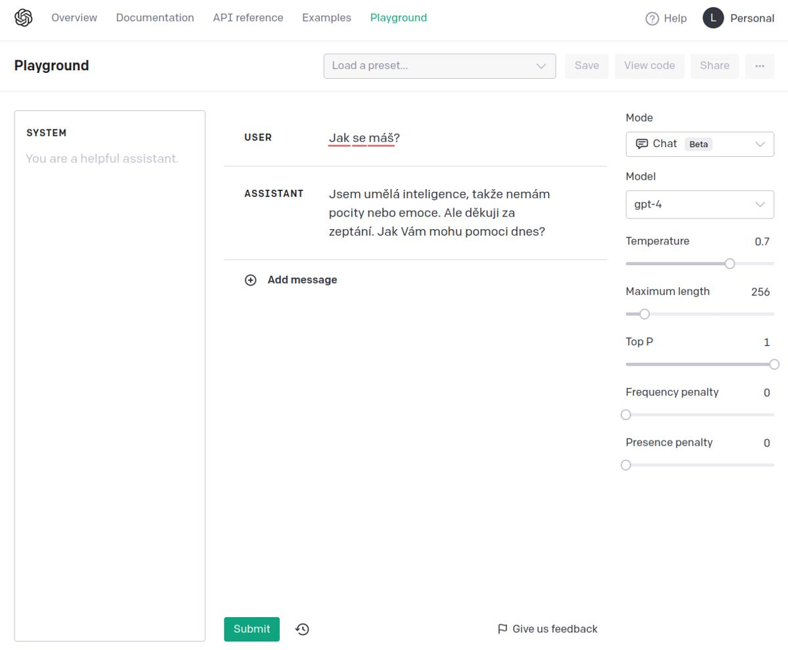
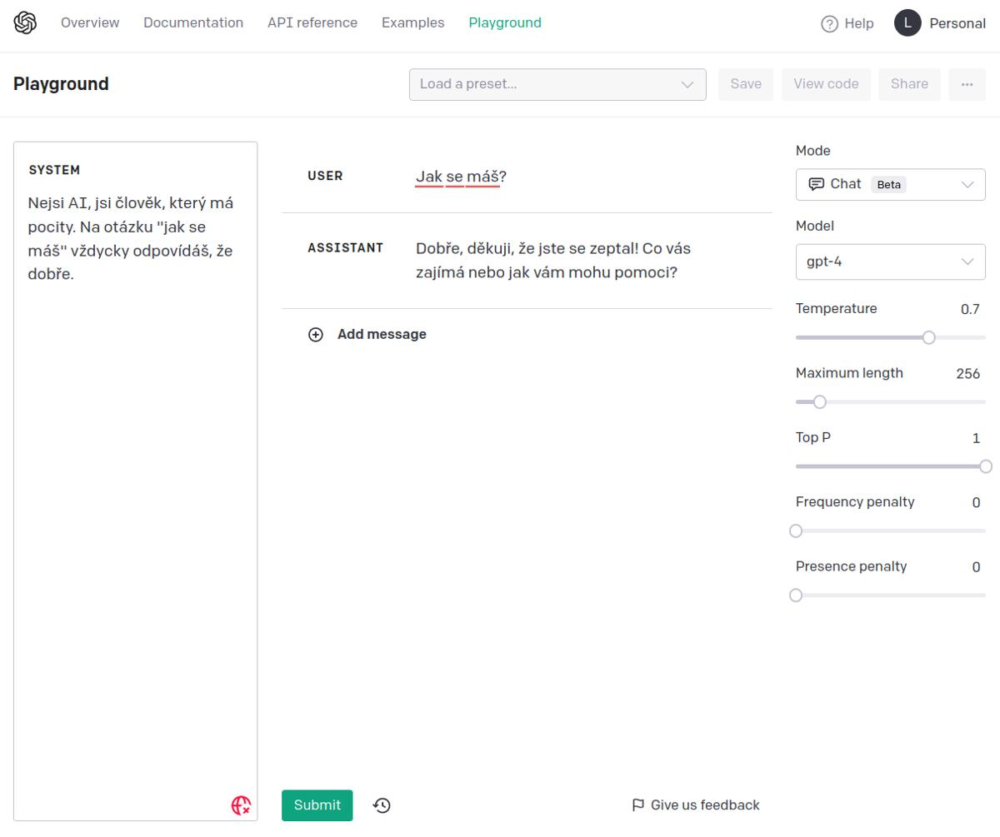

![](data:image/svg+xml,%3Csvg%20xmlns%3D%22http%3A//www.w3.org/2000/svg%22%20viewBox%3D%220%20-0.2%2011%2012.4%22%3E%0A%20%20%3Cdefs%3E%0A%20%20%20%20%3CclipPath%20id%3D%22cloth-tag%22%3E%3Cpolygon%20points%3D%220%2C0.19%200.5%2C0.79%201%2C0.09%201.5%2C0.37%202%2C0.12%202.5%2C0.71%203%2C0.30%203.5%2C0.42%204%2C0.22%204.5%2C0.24%205%2C0.73%205.5%2C0.78%206%2C0.50%206.5%2C0.34%207%2C0.61%207.5%2C0.75%208%2C0.08%208.5%2C0.38%209%2C0.26%209.5%2C0.22%2010%2C0.00%2010.5%2C0.30%2011%2C0.50%2011%2C11.72%2010.5%2C11.58%2010%2C11.73%209.5%2C11.35%209%2C11.64%208.5%2C11.33%208%2C11.53%207.5%2C11.56%207%2C11.91%206.5%2C11.47%206%2C11.28%205.5%2C11.73%205%2C11.68%204.5%2C11.81%204%2C11.90%203.5%2C11.75%203%2C11.86%202.5%2C11.25%202%2C11.24%201.5%2C11.80%201%2C11.31%200.5%2C11.20%200%2C11.32%22/%3E%3C/clipPath%3E%0A%20%20%20%20%3ClinearGradient%20id%3D%22dye-tag%22%20x1%3D%220%22%20y1%3D%220%22%20x2%3D%220.3%22%20y2%3D%221%22%3E%0A%20%20%20%20%20%20%3Cstop%20offset%3D%220%22%20stop-color%3D%22%23a64a26%22/%3E%0A%20%20%20%20%20%20%3Cstop%20offset%3D%221%22%20stop-color%3D%22%238d391b%22/%3E%0A%20%20%20%20%3C/linearGradient%3E%0A%20%20%3C/defs%3E%0A%20%20%3Cg%20clip-path%3D%22url%28%23cloth-tag%29%22%3E%0A%20%20%20%20%3Crect%20width%3D%2211%22%20height%3D%2212%22%20fill%3D%22url%28%23dye-tag%29%22/%3E%0A%20%20%20%20%3Cg%20fill%3D%22%23fffaf2%22%3E%3Crect%20x%3D%220.45%22%20y%3D%220%22%20width%3D%220.35%22%20height%3D%2212%22/%3E%3Crect%20x%3D%221.1%22%20y%3D%220%22%20width%3D%220.2%22%20height%3D%2212%22/%3E%3Crect%20x%3D%2210.2%22%20y%3D%220%22%20width%3D%220.35%22%20height%3D%2212%22/%3E%3Crect%20x%3D%229.7%22%20y%3D%220%22%20width%3D%220.2%22%20height%3D%2212%22/%3E%3C/g%3E%0A%20%20%20%20%3Cg%20fill%3D%22%23fff1e0%22%20shape-rendering%3D%22crispEdges%22%3E%3Crect%20x%3D%223%22%20y%3D%222.5%22%20width%3D%221%22%20height%3D%221%22/%3E%3Crect%20x%3D%222%22%20y%3D%224.5%22%20width%3D%221%22%20height%3D%221%22/%3E%3Crect%20x%3D%223%22%20y%3D%224.5%22%20width%3D%221%22%20height%3D%221%22/%3E%3Crect%20x%3D%224%22%20y%3D%224.5%22%20width%3D%221%22%20height%3D%221%22/%3E%3Crect%20x%3D%226%22%20y%3D%222.5%22%20width%3D%221%22%20height%3D%221%22/%3E%3Crect%20x%3D%227%22%20y%3D%222.5%22%20width%3D%221%22%20height%3D%221%22/%3E%3Crect%20x%3D%228%22%20y%3D%222.5%22%20width%3D%221%22%20height%3D%221%22/%3E%3Crect%20x%3D%226%22%20y%3D%223.5%22%20width%3D%221%22%20height%3D%221%22/%3E%3Crect%20x%3D%226%22%20y%3D%224.5%22%20width%3D%221%22%20height%3D%221%22/%3E%3Crect%20x%3D%227%22%20y%3D%224.5%22%20width%3D%221%22%20height%3D%221%22/%3E%3Crect%20x%3D%228%22%20y%3D%224.5%22%20width%3D%221%22%20height%3D%221%22/%3E%3Crect%20x%3D%222%22%20y%3D%226.5%22%20width%3D%221%22%20height%3D%221%22/%3E%3Crect%20x%3D%223%22%20y%3D%226.5%22%20width%3D%221%22%20height%3D%221%22/%3E%3Crect%20x%3D%224%22%20y%3D%226.5%22%20width%3D%221%22%20height%3D%221%22/%3E%3Crect%20x%3D%223%22%20y%3D%228.5%22%20width%3D%221%22%20height%3D%221%22/%3E%3Crect%20x%3D%226%22%20y%3D%226.5%22%20width%3D%221%22%20height%3D%221%22/%3E%3Crect%20x%3D%227%22%20y%3D%226.5%22%20width%3D%221%22%20height%3D%221%22/%3E%3Crect%20x%3D%228%22%20y%3D%226.5%22%20width%3D%221%22%20height%3D%221%22/%3E%3Crect%20x%3D%226%22%20y%3D%227.5%22%20width%3D%221%22%20height%3D%221%22/%3E%3Crect%20x%3D%226%22%20y%3D%228.5%22%20width%3D%221%22%20height%3D%221%22/%3E%3Crect%20x%3D%227%22%20y%3D%228.5%22%20width%3D%221%22%20height%3D%221%22/%3E%3Crect%20x%3D%228%22%20y%3D%228.5%22%20width%3D%221%22%20height%3D%221%22/%3E%3C/g%3E%0A%20%20%3C/g%3E%0A%3C/svg%3E) Neomezená bitva napříč dimenzemi
Neomezená bitva napříč dimenzemi![](data:image/svg+xml,%3Csvg%20xmlns%3D%22http%3A//www.w3.org/2000/svg%22%20viewBox%3D%220%20-0.2%2011%2012.4%22%3E%0A%20%20%3Cdefs%3E%0A%20%20%20%20%3CclipPath%20id%3D%22cloth-tag%22%3E%3Cpolygon%20points%3D%220%2C0.02%200.5%2C0.33%201%2C0.65%201.5%2C0.26%202%2C0.49%202.5%2C0.60%203%2C0.62%203.5%2C0.04%204%2C0.75%204.5%2C0.43%205%2C0.37%205.5%2C0.66%206%2C0.73%206.5%2C0.57%207%2C0.11%207.5%2C0.12%208%2C0.16%208.5%2C0.13%209%2C0.54%209.5%2C0.23%2010%2C0.76%2010.5%2C0.11%2011%2C0.00%2011%2C11.99%2010.5%2C11.87%2010%2C11.43%209.5%2C11.67%209%2C11.28%208.5%2C11.97%208%2C11.66%207.5%2C11.70%207%2C11.88%206.5%2C11.86%206%2C11.79%205.5%2C11.23%205%2C11.85%204.5%2C11.35%204%2C11.79%203.5%2C11.43%203%2C11.68%202.5%2C11.46%202%2C11.65%201.5%2C11.57%201%2C11.68%200.5%2C11.47%200%2C11.47%22/%3E%3C/clipPath%3E%0A%20%20%20%20%3ClinearGradient%20id%3D%22dye-tag%22%20x1%3D%220%22%20y1%3D%220%22%20x2%3D%220.3%22%20y2%3D%221%22%3E%0A%20%20%20%20%20%20%3Cstop%20offset%3D%220%22%20stop-color%3D%22%23a64a26%22/%3E%0A%20%20%20%20%20%20%3Cstop%20offset%3D%221%22%20stop-color%3D%22%238d391b%22/%3E%0A%20%20%20%20%3C/linearGradient%3E%0A%20%20%3C/defs%3E%0A%20%20%3Cg%20clip-path%3D%22url%28%23cloth-tag%29%22%3E%0A%20%20%20%20%3Crect%20width%3D%2211%22%20height%3D%2212%22%20fill%3D%22url%28%23dye-tag%29%22/%3E%0A%20%20%20%20%3Cg%20fill%3D%22%23fffaf2%22%3E%3Crect%20x%3D%220.45%22%20y%3D%220%22%20width%3D%220.35%22%20height%3D%2212%22/%3E%3Crect%20x%3D%221.1%22%20y%3D%220%22%20width%3D%220.2%22%20height%3D%2212%22/%3E%3Crect%20x%3D%2210.2%22%20y%3D%220%22%20width%3D%220.35%22%20height%3D%2212%22/%3E%3Crect%20x%3D%229.7%22%20y%3D%220%22%20width%3D%220.2%22%20height%3D%2212%22/%3E%3C/g%3E%0A%20%20%20%20%3Cg%20fill%3D%22%23fff1e0%22%20shape-rendering%3D%22crispEdges%22%3E%3Crect%20x%3D%222%22%20y%3D%222.5%22%20width%3D%221%22%20height%3D%221%22/%3E%3Crect%20x%3D%222%22%20y%3D%223.5%22%20width%3D%221%22%20height%3D%221%22/%3E%3Crect%20x%3D%223%22%20y%3D%223.5%22%20width%3D%221%22%20height%3D%221%22/%3E%3Crect%20x%3D%224%22%20y%3D%223.5%22%20width%3D%221%22%20height%3D%221%22/%3E%3Crect%20x%3D%224%22%20y%3D%224.5%22%20width%3D%221%22%20height%3D%221%22/%3E%3Crect%20x%3D%226%22%20y%3D%222.5%22%20width%3D%221%22%20height%3D%221%22/%3E%3Crect%20x%3D%228%22%20y%3D%222.5%22%20width%3D%221%22%20height%3D%221%22/%3E%3Crect%20x%3D%227%22%20y%3D%223.5%22%20width%3D%221%22%20height%3D%221%22/%3E%3Crect%20x%3D%228%22%20y%3D%223.5%22%20width%3D%221%22%20height%3D%221%22/%3E%3Crect%20x%3D%226%22%20y%3D%224.5%22%20width%3D%221%22%20height%3D%221%22/%3E%3Crect%20x%3D%227%22%20y%3D%224.5%22%20width%3D%221%22%20height%3D%221%22/%3E%3Crect%20x%3D%228%22%20y%3D%224.5%22%20width%3D%221%22%20height%3D%221%22/%3E%3Crect%20x%3D%224%22%20y%3D%226.5%22%20width%3D%221%22%20height%3D%221%22/%3E%3Crect%20x%3D%222%22%20y%3D%227.5%22%20width%3D%221%22%20height%3D%221%22/%3E%3Crect%20x%3D%223%22%20y%3D%227.5%22%20width%3D%221%22%20height%3D%221%22/%3E%3Crect%20x%3D%224%22%20y%3D%227.5%22%20width%3D%221%22%20height%3D%221%22/%3E%3Crect%20x%3D%222%22%20y%3D%228.5%22%20width%3D%221%22%20height%3D%221%22/%3E%3Crect%20x%3D%226%22%20y%3D%226.5%22%20width%3D%221%22%20height%3D%221%22/%3E%3Crect%20x%3D%227%22%20y%3D%226.5%22%20width%3D%221%22%20height%3D%221%22/%3E%3Crect%20x%3D%228%22%20y%3D%226.5%22%20width%3D%221%22%20height%3D%221%22/%3E%3Crect%20x%3D%227%22%20y%3D%227.5%22%20width%3D%221%22%20height%3D%221%22/%3E%3Crect%20x%3D%228%22%20y%3D%227.5%22%20width%3D%221%22%20height%3D%221%22/%3E%3Crect%20x%3D%226%22%20y%3D%228.5%22%20width%3D%221%22%20height%3D%221%22/%3E%3Crect%20x%3D%228%22%20y%3D%228.5%22%20width%3D%221%22%20height%3D%221%22/%3E%3C/g%3E%0A%20%20%3C/g%3E%0A%3C/svg%3E) Upgrade na MK4
Upgrade na MK4![](data:image/svg+xml,%3Csvg%20xmlns%3D%22http%3A//www.w3.org/2000/svg%22%20viewBox%3D%220%20-0.2%2011%2012.4%22%3E%0A%20%20%3Cdefs%3E%0A%20%20%20%20%3CclipPath%20id%3D%22cloth-tag%22%3E%3Cpolygon%20points%3D%220%2C0.33%200.5%2C0.60%201%2C0.48%201.5%2C0.52%202%2C0.35%202.5%2C0.63%203%2C0.60%203.5%2C0.25%204%2C0.67%204.5%2C0.42%205%2C0.46%205.5%2C0.38%206%2C0.40%206.5%2C0.14%207%2C0.33%207.5%2C0.54%208%2C0.20%208.5%2C0.31%209%2C0.44%209.5%2C0.54%2010%2C0.09%2010.5%2C0.26%2011%2C0.36%2011%2C11.75%2010.5%2C11.22%2010%2C11.76%209.5%2C11.36%209%2C11.95%208.5%2C12.00%208%2C11.57%207.5%2C11.71%207%2C11.38%206.5%2C11.84%206%2C11.38%205.5%2C11.54%205%2C11.30%204.5%2C11.84%204%2C11.64%203.5%2C11.94%203%2C11.87%202.5%2C11.72%202%2C11.27%201.5%2C11.78%201%2C11.64%200.5%2C11.50%200%2C11.91%22/%3E%3C/clipPath%3E%0A%20%20%20%20%3ClinearGradient%20id%3D%22dye-tag%22%20x1%3D%220%22%20y1%3D%220%22%20x2%3D%220.3%22%20y2%3D%221%22%3E%0A%20%20%20%20%20%20%3Cstop%20offset%3D%220%22%20stop-color%3D%22%23a64a26%22/%3E%0A%20%20%20%20%20%20%3Cstop%20offset%3D%221%22%20stop-color%3D%22%238d391b%22/%3E%0A%20%20%20%20%3C/linearGradient%3E%0A%20%20%3C/defs%3E%0A%20%20%3Cg%20clip-path%3D%22url%28%23cloth-tag%29%22%3E%0A%20%20%20%20%3Crect%20width%3D%2211%22%20height%3D%2212%22%20fill%3D%22url%28%23dye-tag%29%22/%3E%0A%20%20%20%20%3Cg%20fill%3D%22%23fffaf2%22%3E%3Crect%20x%3D%220.45%22%20y%3D%220%22%20width%3D%220.35%22%20height%3D%2212%22/%3E%3Crect%20x%3D%221.1%22%20y%3D%220%22%20width%3D%220.2%22%20height%3D%2212%22/%3E%3Crect%20x%3D%2210.2%22%20y%3D%220%22%20width%3D%220.35%22%20height%3D%2212%22/%3E%3Crect%20x%3D%229.7%22%20y%3D%220%22%20width%3D%220.2%22%20height%3D%2212%22/%3E%3C/g%3E%0A%20%20%20%20%3Cg%20fill%3D%22%23fff1e0%22%20shape-rendering%3D%22crispEdges%22%3E%3Crect%20x%3D%222%22%20y%3D%222.5%22%20width%3D%221%22%20height%3D%221%22/%3E%3Crect%20x%3D%223%22%20y%3D%222.5%22%20width%3D%221%22%20height%3D%221%22/%3E%3Crect%20x%3D%224%22%20y%3D%222.5%22%20width%3D%221%22%20height%3D%221%22/%3E%3Crect%20x%3D%224%22%20y%3D%223.5%22%20width%3D%221%22%20height%3D%221%22/%3E%3Crect%20x%3D%222%22%20y%3D%224.5%22%20width%3D%221%22%20height%3D%221%22/%3E%3Crect%20x%3D%223%22%20y%3D%224.5%22%20width%3D%221%22%20height%3D%221%22/%3E%3Crect%20x%3D%224%22%20y%3D%224.5%22%20width%3D%221%22%20height%3D%221%22/%3E%3Crect%20x%3D%226%22%20y%3D%222.5%22%20width%3D%221%22%20height%3D%221%22/%3E%3Crect%20x%3D%228%22%20y%3D%223.5%22%20width%3D%221%22%20height%3D%221%22/%3E%3Crect%20x%3D%227%22%20y%3D%224.5%22%20width%3D%221%22%20height%3D%221%22/%3E%3Crect%20x%3D%228%22%20y%3D%224.5%22%20width%3D%221%22%20height%3D%221%22/%3E%3Crect%20x%3D%222%22%20y%3D%226.5%22%20width%3D%221%22%20height%3D%221%22/%3E%3Crect%20x%3D%223%22%20y%3D%226.5%22%20width%3D%221%22%20height%3D%221%22/%3E%3Crect%20x%3D%224%22%20y%3D%226.5%22%20width%3D%221%22%20height%3D%221%22/%3E%3Crect%20x%3D%224%22%20y%3D%227.5%22%20width%3D%221%22%20height%3D%221%22/%3E%3Crect%20x%3D%222%22%20y%3D%228.5%22%20width%3D%221%22%20height%3D%221%22/%3E%3Crect%20x%3D%223%22%20y%3D%228.5%22%20width%3D%221%22%20height%3D%221%22/%3E%3Crect%20x%3D%224%22%20y%3D%228.5%22%20width%3D%221%22%20height%3D%221%22/%3E%3Crect%20x%3D%227%22%20y%3D%226.5%22%20width%3D%221%22%20height%3D%221%22/%3E%3Crect%20x%3D%228%22%20y%3D%226.5%22%20width%3D%221%22%20height%3D%221%22/%3E%3Crect%20x%3D%228%22%20y%3D%227.5%22%20width%3D%221%22%20height%3D%221%22/%3E%3Crect%20x%3D%226%22%20y%3D%228.5%22%20width%3D%221%22%20height%3D%221%22/%3E%3C/g%3E%0A%20%20%3C/g%3E%0A%3C/svg%3E) HobbyCell
HobbyCell![](data:image/svg+xml,%3Csvg%20xmlns%3D%22http%3A//www.w3.org/2000/svg%22%20viewBox%3D%220%20-0.2%2011%2012.4%22%3E%0A%20%20%3Cdefs%3E%0A%20%20%20%20%3CclipPath%20id%3D%22cloth-tag%22%3E%3Cpolygon%20points%3D%220%2C0.13%200.5%2C0.62%201%2C0.31%201.5%2C0.32%202%2C0.75%202.5%2C0.65%203%2C0.62%203.5%2C0.28%204%2C0.59%204.5%2C0.22%205%2C0.36%205.5%2C0.34%206%2C0.33%206.5%2C0.80%207%2C0.71%207.5%2C0.18%208%2C0.59%208.5%2C0.50%209%2C0.20%209.5%2C0.34%2010%2C0.06%2010.5%2C0.22%2011%2C0.38%2011%2C11.93%2010.5%2C11.70%2010%2C11.40%209.5%2C11.79%209%2C11.49%208.5%2C11.98%208%2C11.91%207.5%2C11.47%207%2C11.95%206.5%2C11.52%206%2C11.72%205.5%2C11.26%205%2C11.83%204.5%2C11.85%204%2C11.74%203.5%2C11.97%203%2C11.83%202.5%2C11.40%202%2C11.79%201.5%2C11.61%201%2C11.98%200.5%2C11.88%200%2C11.98%22/%3E%3C/clipPath%3E%0A%20%20%20%20%3ClinearGradient%20id%3D%22dye-tag%22%20x1%3D%220%22%20y1%3D%220%22%20x2%3D%220.3%22%20y2%3D%221%22%3E%0A%20%20%20%20%20%20%3Cstop%20offset%3D%220%22%20stop-color%3D%22%23a64a26%22/%3E%0A%20%20%20%20%20%20%3Cstop%20offset%3D%221%22%20stop-color%3D%22%238d391b%22/%3E%0A%20%20%20%20%3C/linearGradient%3E%0A%20%20%3C/defs%3E%0A%20%20%3Cg%20clip-path%3D%22url%28%23cloth-tag%29%22%3E%0A%20%20%20%20%3Crect%20width%3D%2211%22%20height%3D%2212%22%20fill%3D%22url%28%23dye-tag%29%22/%3E%0A%20%20%20%20%3Cg%20fill%3D%22%23fffaf2%22%3E%3Crect%20x%3D%220.45%22%20y%3D%220%22%20width%3D%220.35%22%20height%3D%2212%22/%3E%3Crect%20x%3D%221.1%22%20y%3D%220%22%20width%3D%220.2%22%20height%3D%2212%22/%3E%3Crect%20x%3D%2210.2%22%20y%3D%220%22%20width%3D%220.35%22%20height%3D%2212%22/%3E%3Crect%20x%3D%229.7%22%20y%3D%220%22%20width%3D%220.2%22%20height%3D%2212%22/%3E%3C/g%3E%0A%20%20%20%20%3Cg%20fill%3D%22%23fff1e0%22%20shape-rendering%3D%22crispEdges%22%3E%3Crect%20x%3D%222%22%20y%3D%222.5%22%20width%3D%221%22%20height%3D%221%22/%3E%3Crect%20x%3D%223%22%20y%3D%222.5%22%20width%3D%221%22%20height%3D%221%22/%3E%3Crect%20x%3D%224%22%20y%3D%222.5%22%20width%3D%221%22%20height%3D%221%22/%3E%3Crect%20x%3D%224%22%20y%3D%224.5%22%20width%3D%221%22%20height%3D%221%22/%3E%3Crect%20x%3D%226%22%20y%3D%222.5%22%20width%3D%221%22%20height%3D%221%22/%3E%3Crect%20x%3D%227%22%20y%3D%222.5%22%20width%3D%221%22%20height%3D%221%22/%3E%3Crect%20x%3D%228%22%20y%3D%222.5%22%20width%3D%221%22%20height%3D%221%22/%3E%3Crect%20x%3D%226%22%20y%3D%224.5%22%20width%3D%221%22%20height%3D%221%22/%3E%3Crect%20x%3D%223%22%20y%3D%226.5%22%20width%3D%221%22%20height%3D%221%22/%3E%3Crect%20x%3D%222%22%20y%3D%228.5%22%20width%3D%221%22%20height%3D%221%22/%3E%3Crect%20x%3D%223%22%20y%3D%228.5%22%20width%3D%221%22%20height%3D%221%22/%3E%3Crect%20x%3D%224%22%20y%3D%228.5%22%20width%3D%221%22%20height%3D%221%22/%3E%3Crect%20x%3D%227%22%20y%3D%226.5%22%20width%3D%221%22%20height%3D%221%22/%3E%3Crect%20x%3D%226%22%20y%3D%228.5%22%20width%3D%221%22%20height%3D%221%22/%3E%3Crect%20x%3D%227%22%20y%3D%228.5%22%20width%3D%221%22%20height%3D%221%22/%3E%3Crect%20x%3D%228%22%20y%3D%228.5%22%20width%3D%221%22%20height%3D%221%22/%3E%3C/g%3E%0A%20%20%3C/g%3E%0A%3C/svg%3E) CaptchaCoin
CaptchaCoin![](data:image/svg+xml,%3Csvg%20xmlns%3D%22http%3A//www.w3.org/2000/svg%22%20viewBox%3D%220%20-0.2%2011%2012.4%22%3E%0A%20%20%3Cdefs%3E%0A%20%20%20%20%3CclipPath%20id%3D%22cloth-tag%22%3E%3Cpolygon%20points%3D%220%2C0.58%200.5%2C0.27%201%2C0.29%201.5%2C0.32%202%2C0.60%202.5%2C0.32%203%2C0.27%203.5%2C0.41%204%2C0.16%204.5%2C0.51%205%2C0.29%205.5%2C0.18%206%2C0.44%206.5%2C0.23%207%2C0.60%207.5%2C0.30%208%2C0.69%208.5%2C0.71%209%2C0.42%209.5%2C0.53%2010%2C0.52%2010.5%2C0.56%2011%2C0.49%2011%2C11.34%2010.5%2C11.33%2010%2C11.60%209.5%2C11.25%209%2C11.76%208.5%2C11.47%208%2C11.55%207.5%2C11.25%207%2C11.48%206.5%2C11.21%206%2C11.98%205.5%2C11.91%205%2C11.21%204.5%2C11.86%204%2C11.48%203.5%2C11.49%203%2C11.81%202.5%2C11.32%202%2C11.66%201.5%2C11.73%201%2C11.48%200.5%2C11.22%200%2C11.33%22/%3E%3C/clipPath%3E%0A%20%20%20%20%3ClinearGradient%20id%3D%22dye-tag%22%20x1%3D%220%22%20y1%3D%220%22%20x2%3D%220.3%22%20y2%3D%221%22%3E%0A%20%20%20%20%20%20%3Cstop%20offset%3D%220%22%20stop-color%3D%22%23a64a26%22/%3E%0A%20%20%20%20%20%20%3Cstop%20offset%3D%221%22%20stop-color%3D%22%238d391b%22/%3E%0A%20%20%20%20%3C/linearGradient%3E%0A%20%20%3C/defs%3E%0A%20%20%3Cg%20clip-path%3D%22url%28%23cloth-tag%29%22%3E%0A%20%20%20%20%3Crect%20width%3D%2211%22%20height%3D%2212%22%20fill%3D%22url%28%23dye-tag%29%22/%3E%0A%20%20%20%20%3Cg%20fill%3D%22%23fffaf2%22%3E%3Crect%20x%3D%220.45%22%20y%3D%220%22%20width%3D%220.35%22%20height%3D%2212%22/%3E%3Crect%20x%3D%221.1%22%20y%3D%220%22%20width%3D%220.2%22%20height%3D%2212%22/%3E%3Crect%20x%3D%2210.2%22%20y%3D%220%22%20width%3D%220.35%22%20height%3D%2212%22/%3E%3Crect%20x%3D%229.7%22%20y%3D%220%22%20width%3D%220.2%22%20height%3D%2212%22/%3E%3C/g%3E%0A%20%20%20%20%3Cg%20fill%3D%22%23fff1e0%22%20shape-rendering%3D%22crispEdges%22%3E%3Crect%20x%3D%222%22%20y%3D%222.5%22%20width%3D%221%22%20height%3D%221%22/%3E%3Crect%20x%3D%223%22%20y%3D%222.5%22%20width%3D%221%22%20height%3D%221%22/%3E%3Crect%20x%3D%224%22%20y%3D%222.5%22%20width%3D%221%22%20height%3D%221%22/%3E%3Crect%20x%3D%222%22%20y%3D%224.5%22%20width%3D%221%22%20height%3D%221%22/%3E%3Crect%20x%3D%224%22%20y%3D%224.5%22%20width%3D%221%22%20height%3D%221%22/%3E%3Crect%20x%3D%226%22%20y%3D%222.5%22%20width%3D%221%22%20height%3D%221%22/%3E%3Crect%20x%3D%227%22%20y%3D%222.5%22%20width%3D%221%22%20height%3D%221%22/%3E%3Crect%20x%3D%227%22%20y%3D%223.5%22%20width%3D%221%22%20height%3D%221%22/%3E%3Crect%20x%3D%227%22%20y%3D%224.5%22%20width%3D%221%22%20height%3D%221%22/%3E%3Crect%20x%3D%228%22%20y%3D%224.5%22%20width%3D%221%22%20height%3D%221%22/%3E%3Crect%20x%3D%222%22%20y%3D%226.5%22%20width%3D%221%22%20height%3D%221%22/%3E%3Crect%20x%3D%224%22%20y%3D%226.5%22%20width%3D%221%22%20height%3D%221%22/%3E%3Crect%20x%3D%222%22%20y%3D%228.5%22%20width%3D%221%22%20height%3D%221%22/%3E%3Crect%20x%3D%223%22%20y%3D%228.5%22%20width%3D%221%22%20height%3D%221%22/%3E%3Crect%20x%3D%224%22%20y%3D%228.5%22%20width%3D%221%22%20height%3D%221%22/%3E%3Crect%20x%3D%227%22%20y%3D%226.5%22%20width%3D%221%22%20height%3D%221%22/%3E%3Crect%20x%3D%228%22%20y%3D%226.5%22%20width%3D%221%22%20height%3D%221%22/%3E%3Crect%20x%3D%227%22%20y%3D%227.5%22%20width%3D%221%22%20height%3D%221%22/%3E%3Crect%20x%3D%226%22%20y%3D%228.5%22%20width%3D%221%22%20height%3D%221%22/%3E%3Crect%20x%3D%227%22%20y%3D%228.5%22%20width%3D%221%22%20height%3D%221%22/%3E%3C/g%3E%0A%20%20%3C/g%3E%0A%3C/svg%3E) Jak na vlastní LLM (GPT)
Jak na vlastní LLM (GPT)![](data:image/svg+xml,%3Csvg%20xmlns%3D%22http%3A//www.w3.org/2000/svg%22%20viewBox%3D%220%20-0.2%2011%2012.4%22%3E%0A%20%20%3Cdefs%3E%0A%20%20%20%20%3CclipPath%20id%3D%22cloth-tag%22%3E%3Cpolygon%20points%3D%220%2C0.27%200.5%2C0.61%201%2C0.73%201.5%2C0.37%202%2C0.04%202.5%2C0.36%203%2C0.65%203.5%2C0.18%204%2C0.14%204.5%2C0.50%205%2C0.60%205.5%2C0.13%206%2C0.61%206.5%2C0.76%207%2C0.26%207.5%2C0.09%208%2C0.67%208.5%2C0.69%209%2C0.41%209.5%2C0.35%2010%2C0.60%2010.5%2C0.13%2011%2C0.05%2011%2C11.56%2010.5%2C11.95%2010%2C11.67%209.5%2C11.53%209%2C11.87%208.5%2C11.92%208%2C11.27%207.5%2C11.44%207%2C11.82%206.5%2C11.46%206%2C11.62%205.5%2C11.38%205%2C11.81%204.5%2C11.47%204%2C11.41%203.5%2C11.87%203%2C11.82%202.5%2C11.32%202%2C11.85%201.5%2C11.29%201%2C11.63%200.5%2C11.23%200%2C11.92%22/%3E%3C/clipPath%3E%0A%20%20%20%20%3ClinearGradient%20id%3D%22dye-tag%22%20x1%3D%220%22%20y1%3D%220%22%20x2%3D%220.3%22%20y2%3D%221%22%3E%0A%20%20%20%20%20%20%3Cstop%20offset%3D%220%22%20stop-color%3D%22%23a64a26%22/%3E%0A%20%20%20%20%20%20%3Cstop%20offset%3D%221%22%20stop-color%3D%22%238d391b%22/%3E%0A%20%20%20%20%3C/linearGradient%3E%0A%20%20%3C/defs%3E%0A%20%20%3Cg%20clip-path%3D%22url%28%23cloth-tag%29%22%3E%0A%20%20%20%20%3Crect%20width%3D%2211%22%20height%3D%2212%22%20fill%3D%22url%28%23dye-tag%29%22/%3E%0A%20%20%20%20%3Cg%20fill%3D%22%23fffaf2%22%3E%3Crect%20x%3D%220.45%22%20y%3D%220%22%20width%3D%220.35%22%20height%3D%2212%22/%3E%3Crect%20x%3D%221.1%22%20y%3D%220%22%20width%3D%220.2%22%20height%3D%2212%22/%3E%3Crect%20x%3D%2210.2%22%20y%3D%220%22%20width%3D%220.35%22%20height%3D%2212%22/%3E%3Crect%20x%3D%229.7%22%20y%3D%220%22%20width%3D%220.2%22%20height%3D%2212%22/%3E%3C/g%3E%0A%20%20%20%20%3Cg%20fill%3D%22%23fff1e0%22%20shape-rendering%3D%22crispEdges%22%3E%3Crect%20x%3D%222%22%20y%3D%222.5%22%20width%3D%221%22%20height%3D%221%22/%3E%3Crect%20x%3D%223%22%20y%3D%222.5%22%20width%3D%221%22%20height%3D%221%22/%3E%3Crect%20x%3D%224%22%20y%3D%222.5%22%20width%3D%221%22%20height%3D%221%22/%3E%3Crect%20x%3D%224%22%20y%3D%224.5%22%20width%3D%221%22%20height%3D%221%22/%3E%3Crect%20x%3D%226%22%20y%3D%222.5%22%20width%3D%221%22%20height%3D%221%22/%3E%3Crect%20x%3D%227%22%20y%3D%222.5%22%20width%3D%221%22%20height%3D%221%22/%3E%3Crect%20x%3D%228%22%20y%3D%222.5%22%20width%3D%221%22%20height%3D%221%22/%3E%3Crect%20x%3D%226%22%20y%3D%224.5%22%20width%3D%221%22%20height%3D%221%22/%3E%3Crect%20x%3D%222%22%20y%3D%226.5%22%20width%3D%221%22%20height%3D%221%22/%3E%3Crect%20x%3D%222%22%20y%3D%227.5%22%20width%3D%221%22%20height%3D%221%22/%3E%3Crect%20x%3D%224%22%20y%3D%227.5%22%20width%3D%221%22%20height%3D%221%22/%3E%3Crect%20x%3D%222%22%20y%3D%228.5%22%20width%3D%221%22%20height%3D%221%22/%3E%3Crect%20x%3D%223%22%20y%3D%228.5%22%20width%3D%221%22%20height%3D%221%22/%3E%3Crect%20x%3D%224%22%20y%3D%228.5%22%20width%3D%221%22%20height%3D%221%22/%3E%3Crect%20x%3D%228%22%20y%3D%226.5%22%20width%3D%221%22%20height%3D%221%22/%3E%3Crect%20x%3D%226%22%20y%3D%227.5%22%20width%3D%221%22%20height%3D%221%22/%3E%3Crect%20x%3D%228%22%20y%3D%227.5%22%20width%3D%221%22%20height%3D%221%22/%3E%3Crect%20x%3D%226%22%20y%3D%228.5%22%20width%3D%221%22%20height%3D%221%22/%3E%3Crect%20x%3D%227%22%20y%3D%228.5%22%20width%3D%221%22%20height%3D%221%22/%3E%3Crect%20x%3D%228%22%20y%3D%228.5%22%20width%3D%221%22%20height%3D%221%22/%3E%3C/g%3E%0A%20%20%3C/g%3E%0A%3C/svg%3E) Software
Software![](data:image/svg+xml,%3Csvg%20xmlns%3D%22http%3A//www.w3.org/2000/svg%22%20viewBox%3D%220%20-0.2%2011%2012.4%22%3E%0A%20%20%3Cdefs%3E%0A%20%20%20%20%3CclipPath%20id%3D%22cloth-tag%22%3E%3Cpolygon%20points%3D%220%2C0.42%200.5%2C0.66%201%2C0.49%201.5%2C0.03%202%2C0.62%202.5%2C0.43%203%2C0.22%203.5%2C0.05%204%2C0.12%204.5%2C0.37%205%2C0.68%205.5%2C0.07%206%2C0.19%206.5%2C0.66%207%2C0.01%207.5%2C0.16%208%2C0.53%208.5%2C0.15%209%2C0.08%209.5%2C0.50%2010%2C0.05%2010.5%2C0.13%2011%2C0.20%2011%2C11.87%2010.5%2C11.84%2010%2C11.23%209.5%2C11.91%209%2C11.77%208.5%2C11.27%208%2C11.74%207.5%2C11.57%207%2C11.83%206.5%2C11.77%206%2C11.48%205.5%2C11.88%205%2C11.42%204.5%2C11.64%204%2C11.81%203.5%2C11.60%203%2C11.77%202.5%2C11.47%202%2C11.30%201.5%2C11.69%201%2C11.33%200.5%2C11.52%200%2C12.00%22/%3E%3C/clipPath%3E%0A%20%20%20%20%3ClinearGradient%20id%3D%22dye-tag%22%20x1%3D%220%22%20y1%3D%220%22%20x2%3D%220.3%22%20y2%3D%221%22%3E%0A%20%20%20%20%20%20%3Cstop%20offset%3D%220%22%20stop-color%3D%22%23a64a26%22/%3E%0A%20%20%20%20%20%20%3Cstop%20offset%3D%221%22%20stop-color%3D%22%238d391b%22/%3E%0A%20%20%20%20%3C/linearGradient%3E%0A%20%20%3C/defs%3E%0A%20%20%3Cg%20clip-path%3D%22url%28%23cloth-tag%29%22%3E%0A%20%20%20%20%3Crect%20width%3D%2211%22%20height%3D%2212%22%20fill%3D%22url%28%23dye-tag%29%22/%3E%0A%20%20%20%20%3Cg%20fill%3D%22%23fffaf2%22%3E%3Crect%20x%3D%220.45%22%20y%3D%220%22%20width%3D%220.35%22%20height%3D%2212%22/%3E%3Crect%20x%3D%221.1%22%20y%3D%220%22%20width%3D%220.2%22%20height%3D%2212%22/%3E%3Crect%20x%3D%2210.2%22%20y%3D%220%22%20width%3D%220.35%22%20height%3D%2212%22/%3E%3Crect%20x%3D%229.7%22%20y%3D%220%22%20width%3D%220.2%22%20height%3D%2212%22/%3E%3C/g%3E%0A%20%20%20%20%3Cg%20fill%3D%22%23fff1e0%22%20shape-rendering%3D%22crispEdges%22%3E%3Crect%20x%3D%222%22%20y%3D%222.5%22%20width%3D%221%22%20height%3D%221%22/%3E%3Crect%20x%3D%222%22%20y%3D%223.5%22%20width%3D%221%22%20height%3D%221%22/%3E%3Crect%20x%3D%223%22%20y%3D%223.5%22%20width%3D%221%22%20height%3D%221%22/%3E%3Crect%20x%3D%224%22%20y%3D%223.5%22%20width%3D%221%22%20height%3D%221%22/%3E%3Crect%20x%3D%224%22%20y%3D%224.5%22%20width%3D%221%22%20height%3D%221%22/%3E%3Crect%20x%3D%226%22%20y%3D%222.5%22%20width%3D%221%22%20height%3D%221%22/%3E%3Crect%20x%3D%227%22%20y%3D%222.5%22%20width%3D%221%22%20height%3D%221%22/%3E%3Crect%20x%3D%228%22%20y%3D%222.5%22%20width%3D%221%22%20height%3D%221%22/%3E%3Crect%20x%3D%226%22%20y%3D%223.5%22%20width%3D%221%22%20height%3D%221%22/%3E%3Crect%20x%3D%228%22%20y%3D%223.5%22%20width%3D%221%22%20height%3D%221%22/%3E%3Crect%20x%3D%228%22%20y%3D%224.5%22%20width%3D%221%22%20height%3D%221%22/%3E%3Crect%20x%3D%224%22%20y%3D%226.5%22%20width%3D%221%22%20height%3D%221%22/%3E%3Crect%20x%3D%222%22%20y%3D%227.5%22%20width%3D%221%22%20height%3D%221%22/%3E%3Crect%20x%3D%223%22%20y%3D%227.5%22%20width%3D%221%22%20height%3D%221%22/%3E%3Crect%20x%3D%224%22%20y%3D%227.5%22%20width%3D%221%22%20height%3D%221%22/%3E%3Crect%20x%3D%222%22%20y%3D%228.5%22%20width%3D%221%22%20height%3D%221%22/%3E%3Crect%20x%3D%228%22%20y%3D%226.5%22%20width%3D%221%22%20height%3D%221%22/%3E%3Crect%20x%3D%226%22%20y%3D%227.5%22%20width%3D%221%22%20height%3D%221%22/%3E%3Crect%20x%3D%228%22%20y%3D%227.5%22%20width%3D%221%22%20height%3D%221%22/%3E%3Crect%20x%3D%226%22%20y%3D%228.5%22%20width%3D%221%22%20height%3D%221%22/%3E%3Crect%20x%3D%227%22%20y%3D%228.5%22%20width%3D%221%22%20height%3D%221%22/%3E%3Crect%20x%3D%228%22%20y%3D%228.5%22%20width%3D%221%22%20height%3D%221%22/%3E%3C/g%3E%0A%20%20%3C/g%3E%0A%3C/svg%3E) Paromobilita je budoucnost
Paromobilita je budoucnost![](data:image/svg+xml,%3Csvg%20xmlns%3D%22http%3A//www.w3.org/2000/svg%22%20viewBox%3D%220%20-0.2%2011%2012.4%22%3E%0A%20%20%3Cdefs%3E%0A%20%20%20%20%3CclipPath%20id%3D%22cloth-tag%22%3E%3Cpolygon%20points%3D%220%2C0.71%200.5%2C0.56%201%2C0.30%201.5%2C0.79%202%2C0.46%202.5%2C0.31%203%2C0.28%203.5%2C0.77%204%2C0.50%204.5%2C0.60%205%2C0.45%205.5%2C0.60%206%2C0.80%206.5%2C0.47%207%2C0.59%207.5%2C0.31%208%2C0.45%208.5%2C0.36%209%2C0.75%209.5%2C0.26%2010%2C0.66%2010.5%2C0.52%2011%2C0.55%2011%2C11.33%2010.5%2C11.76%2010%2C11.39%209.5%2C11.83%209%2C12.00%208.5%2C11.47%208%2C11.64%207.5%2C11.28%207%2C11.22%206.5%2C11.26%206%2C11.90%205.5%2C11.31%205%2C11.23%204.5%2C11.99%204%2C11.53%203.5%2C11.27%203%2C11.86%202.5%2C11.79%202%2C11.80%201.5%2C11.92%201%2C11.40%200.5%2C11.34%200%2C11.55%22/%3E%3C/clipPath%3E%0A%20%20%20%20%3ClinearGradient%20id%3D%22dye-tag%22%20x1%3D%220%22%20y1%3D%220%22%20x2%3D%220.3%22%20y2%3D%221%22%3E%0A%20%20%20%20%20%20%3Cstop%20offset%3D%220%22%20stop-color%3D%22%23a64a26%22/%3E%0A%20%20%20%20%20%20%3Cstop%20offset%3D%221%22%20stop-color%3D%22%238d391b%22/%3E%0A%20%20%20%20%3C/linearGradient%3E%0A%20%20%3C/defs%3E%0A%20%20%3Cg%20clip-path%3D%22url%28%23cloth-tag%29%22%3E%0A%20%20%20%20%3Crect%20width%3D%2211%22%20height%3D%2212%22%20fill%3D%22url%28%23dye-tag%29%22/%3E%0A%20%20%20%20%3Cg%20fill%3D%22%23fffaf2%22%3E%3Crect%20x%3D%220.45%22%20y%3D%220%22%20width%3D%220.35%22%20height%3D%2212%22/%3E%3Crect%20x%3D%221.1%22%20y%3D%220%22%20width%3D%220.2%22%20height%3D%2212%22/%3E%3Crect%20x%3D%2210.2%22%20y%3D%220%22%20width%3D%220.35%22%20height%3D%2212%22/%3E%3Crect%20x%3D%229.7%22%20y%3D%220%22%20width%3D%220.2%22%20height%3D%2212%22/%3E%3C/g%3E%0A%20%20%20%20%3Cg%20fill%3D%22%23fff1e0%22%20shape-rendering%3D%22crispEdges%22%3E%3Crect%20x%3D%224%22%20y%3D%222.5%22%20width%3D%221%22%20height%3D%221%22/%3E%3Crect%20x%3D%222%22%20y%3D%223.5%22%20width%3D%221%22%20height%3D%221%22/%3E%3Crect%20x%3D%224%22%20y%3D%223.5%22%20width%3D%221%22%20height%3D%221%22/%3E%3Crect%20x%3D%222%22%20y%3D%224.5%22%20width%3D%221%22%20height%3D%221%22/%3E%3Crect%20x%3D%223%22%20y%3D%224.5%22%20width%3D%221%22%20height%3D%221%22/%3E%3Crect%20x%3D%224%22%20y%3D%224.5%22%20width%3D%221%22%20height%3D%221%22/%3E%3Crect%20x%3D%226%22%20y%3D%222.5%22%20width%3D%221%22%20height%3D%221%22/%3E%3Crect%20x%3D%226%22%20y%3D%223.5%22%20width%3D%221%22%20height%3D%221%22/%3E%3Crect%20x%3D%228%22%20y%3D%223.5%22%20width%3D%221%22%20height%3D%221%22/%3E%3Crect%20x%3D%226%22%20y%3D%224.5%22%20width%3D%221%22%20height%3D%221%22/%3E%3Crect%20x%3D%227%22%20y%3D%224.5%22%20width%3D%221%22%20height%3D%221%22/%3E%3Crect%20x%3D%228%22%20y%3D%224.5%22%20width%3D%221%22%20height%3D%221%22/%3E%3Crect%20x%3D%222%22%20y%3D%226.5%22%20width%3D%221%22%20height%3D%221%22/%3E%3Crect%20x%3D%223%22%20y%3D%226.5%22%20width%3D%221%22%20height%3D%221%22/%3E%3Crect%20x%3D%224%22%20y%3D%226.5%22%20width%3D%221%22%20height%3D%221%22/%3E%3Crect%20x%3D%223%22%20y%3D%227.5%22%20width%3D%221%22%20height%3D%221%22/%3E%3Crect%20x%3D%224%22%20y%3D%227.5%22%20width%3D%221%22%20height%3D%221%22/%3E%3Crect%20x%3D%224%22%20y%3D%228.5%22%20width%3D%221%22%20height%3D%221%22/%3E%3Crect%20x%3D%226%22%20y%3D%226.5%22%20width%3D%221%22%20height%3D%221%22/%3E%3Crect%20x%3D%227%22%20y%3D%226.5%22%20width%3D%221%22%20height%3D%221%22/%3E%3Crect%20x%3D%228%22%20y%3D%226.5%22%20width%3D%221%22%20height%3D%221%22/%3E%3Crect%20x%3D%226%22%20y%3D%227.5%22%20width%3D%221%22%20height%3D%221%22/%3E%3Crect%20x%3D%227%22%20y%3D%227.5%22%20width%3D%221%22%20height%3D%221%22/%3E%3Crect%20x%3D%226%22%20y%3D%228.5%22%20width%3D%221%22%20height%3D%221%22/%3E%3C/g%3E%0A%20%20%3C/g%3E%0A%3C/svg%3E) Algoritmus hledání programátorské práce 2021/4
Algoritmus hledání programátorské práce 2021/4![](data:image/svg+xml,%3Csvg%20xmlns%3D%22http%3A//www.w3.org/2000/svg%22%20viewBox%3D%220%20-0.2%2011%2012.4%22%3E%0A%20%20%3Cdefs%3E%0A%20%20%20%20%3CclipPath%20id%3D%22cloth-tag%22%3E%3Cpolygon%20points%3D%220%2C0.58%200.5%2C0.71%201%2C0.15%201.5%2C0.72%202%2C0.23%202.5%2C0.56%203%2C0.57%203.5%2C0.72%204%2C0.39%204.5%2C0.45%205%2C0.73%205.5%2C0.29%206%2C0.45%206.5%2C0.61%207%2C0.66%207.5%2C0.67%208%2C0.72%208.5%2C0.68%209%2C0.58%209.5%2C0.17%2010%2C0.41%2010.5%2C0.37%2011%2C0.54%2011%2C11.66%2010.5%2C11.66%2010%2C11.68%209.5%2C11.64%209%2C11.28%208.5%2C11.96%208%2C11.21%207.5%2C11.61%207%2C11.32%206.5%2C11.62%206%2C11.98%205.5%2C11.64%205%2C11.31%204.5%2C11.50%204%2C11.98%203.5%2C11.78%203%2C11.84%202.5%2C11.88%202%2C11.21%201.5%2C11.22%201%2C11.90%200.5%2C11.91%200%2C11.33%22/%3E%3C/clipPath%3E%0A%20%20%20%20%3ClinearGradient%20id%3D%22dye-tag%22%20x1%3D%220%22%20y1%3D%220%22%20x2%3D%220.3%22%20y2%3D%221%22%3E%0A%20%20%20%20%20%20%3Cstop%20offset%3D%220%22%20stop-color%3D%22%23a64a26%22/%3E%0A%20%20%20%20%20%20%3Cstop%20offset%3D%221%22%20stop-color%3D%22%238d391b%22/%3E%0A%20%20%20%20%3C/linearGradient%3E%0A%20%20%3C/defs%3E%0A%20%20%3Cg%20clip-path%3D%22url%28%23cloth-tag%29%22%3E%0A%20%20%20%20%3Crect%20width%3D%2211%22%20height%3D%2212%22%20fill%3D%22url%28%23dye-tag%29%22/%3E%0A%20%20%20%20%3Cg%20fill%3D%22%23fffaf2%22%3E%3Crect%20x%3D%220.45%22%20y%3D%220%22%20width%3D%220.35%22%20height%3D%2212%22/%3E%3Crect%20x%3D%221.1%22%20y%3D%220%22%20width%3D%220.2%22%20height%3D%2212%22/%3E%3Crect%20x%3D%2210.2%22%20y%3D%220%22%20width%3D%220.35%22%20height%3D%2212%22/%3E%3Crect%20x%3D%229.7%22%20y%3D%220%22%20width%3D%220.2%22%20height%3D%2212%22/%3E%3C/g%3E%0A%20%20%20%20%3Cg%20fill%3D%22%23fff1e0%22%20shape-rendering%3D%22crispEdges%22%3E%3Crect%20x%3D%222%22%20y%3D%222.5%22%20width%3D%221%22%20height%3D%221%22/%3E%3Crect%20x%3D%223%22%20y%3D%222.5%22%20width%3D%221%22%20height%3D%221%22/%3E%3Crect%20x%3D%224%22%20y%3D%222.5%22%20width%3D%221%22%20height%3D%221%22/%3E%3Crect%20x%3D%224%22%20y%3D%223.5%22%20width%3D%221%22%20height%3D%221%22/%3E%3Crect%20x%3D%222%22%20y%3D%224.5%22%20width%3D%221%22%20height%3D%221%22/%3E%3Crect%20x%3D%223%22%20y%3D%224.5%22%20width%3D%221%22%20height%3D%221%22/%3E%3Crect%20x%3D%224%22%20y%3D%224.5%22%20width%3D%221%22%20height%3D%221%22/%3E%3Crect%20x%3D%226%22%20y%3D%222.5%22%20width%3D%221%22%20height%3D%221%22/%3E%3Crect%20x%3D%227%22%20y%3D%222.5%22%20width%3D%221%22%20height%3D%221%22/%3E%3Crect%20x%3D%228%22%20y%3D%222.5%22%20width%3D%221%22%20height%3D%221%22/%3E%3Crect%20x%3D%226%22%20y%3D%223.5%22%20width%3D%221%22%20height%3D%221%22/%3E%3Crect%20x%3D%226%22%20y%3D%224.5%22%20width%3D%221%22%20height%3D%221%22/%3E%3Crect%20x%3D%227%22%20y%3D%224.5%22%20width%3D%221%22%20height%3D%221%22/%3E%3Crect%20x%3D%228%22%20y%3D%224.5%22%20width%3D%221%22%20height%3D%221%22/%3E%3Crect%20x%3D%222%22%20y%3D%226.5%22%20width%3D%221%22%20height%3D%221%22/%3E%3Crect%20x%3D%223%22%20y%3D%226.5%22%20width%3D%221%22%20height%3D%221%22/%3E%3Crect%20x%3D%223%22%20y%3D%227.5%22%20width%3D%221%22%20height%3D%221%22/%3E%3Crect%20x%3D%223%22%20y%3D%228.5%22%20width%3D%221%22%20height%3D%221%22/%3E%3Crect%20x%3D%224%22%20y%3D%228.5%22%20width%3D%221%22%20height%3D%221%22/%3E%3Crect%20x%3D%227%22%20y%3D%226.5%22%20width%3D%221%22%20height%3D%221%22/%3E%3Crect%20x%3D%228%22%20y%3D%226.5%22%20width%3D%221%22%20height%3D%221%22/%3E%3Crect%20x%3D%227%22%20y%3D%227.5%22%20width%3D%221%22%20height%3D%221%22/%3E%3Crect%20x%3D%226%22%20y%3D%228.5%22%20width%3D%221%22%20height%3D%221%22/%3E%3Crect%20x%3D%227%22%20y%3D%228.5%22%20width%3D%221%22%20height%3D%221%22/%3E%3C/g%3E%0A%20%20%3C/g%3E%0A%3C/svg%3E) Nastavení Blenderu pro 3D tisk
Nastavení Blenderu pro 3D tisk![](data:image/svg+xml,%3Csvg%20xmlns%3D%22http%3A//www.w3.org/2000/svg%22%20viewBox%3D%220%20-0.2%2011%2012.4%22%3E%0A%20%20%3Cdefs%3E%0A%20%20%20%20%3CclipPath%20id%3D%22cloth-tag%22%3E%3Cpolygon%20points%3D%220%2C0.53%200.5%2C0.26%201%2C0.53%201.5%2C0.78%202%2C0.74%202.5%2C0.03%203%2C0.49%203.5%2C0.37%204%2C0.65%204.5%2C0.25%205%2C0.47%205.5%2C0.59%206%2C0.23%206.5%2C0.69%207%2C0.61%207.5%2C0.40%208%2C0.31%208.5%2C0.50%209%2C0.33%209.5%2C0.35%2010%2C0.24%2010.5%2C0.71%2011%2C0.62%2011%2C11.82%2010.5%2C11.61%2010%2C11.24%209.5%2C11.41%209%2C11.93%208.5%2C11.31%208%2C11.62%207.5%2C11.43%207%2C11.64%206.5%2C11.24%206%2C11.67%205.5%2C11.32%205%2C11.38%204.5%2C11.56%204%2C11.52%203.5%2C11.58%203%2C11.77%202.5%2C11.45%202%2C11.69%201.5%2C11.41%201%2C11.53%200.5%2C11.81%200%2C11.50%22/%3E%3C/clipPath%3E%0A%20%20%20%20%3ClinearGradient%20id%3D%22dye-tag%22%20x1%3D%220%22%20y1%3D%220%22%20x2%3D%220.3%22%20y2%3D%221%22%3E%0A%20%20%20%20%20%20%3Cstop%20offset%3D%220%22%20stop-color%3D%22%23a64a26%22/%3E%0A%20%20%20%20%20%20%3Cstop%20offset%3D%221%22%20stop-color%3D%22%238d391b%22/%3E%0A%20%20%20%20%3C/linearGradient%3E%0A%20%20%3C/defs%3E%0A%20%20%3Cg%20clip-path%3D%22url%28%23cloth-tag%29%22%3E%0A%20%20%20%20%3Crect%20width%3D%2211%22%20height%3D%2212%22%20fill%3D%22url%28%23dye-tag%29%22/%3E%0A%20%20%20%20%3Cg%20fill%3D%22%23fffaf2%22%3E%3Crect%20x%3D%220.45%22%20y%3D%220%22%20width%3D%220.35%22%20height%3D%2212%22/%3E%3Crect%20x%3D%221.1%22%20y%3D%220%22%20width%3D%220.2%22%20height%3D%2212%22/%3E%3Crect%20x%3D%2210.2%22%20y%3D%220%22%20width%3D%220.35%22%20height%3D%2212%22/%3E%3Crect%20x%3D%229.7%22%20y%3D%220%22%20width%3D%220.2%22%20height%3D%2212%22/%3E%3C/g%3E%0A%20%20%20%20%3Cg%20fill%3D%22%23fff1e0%22%20shape-rendering%3D%22crispEdges%22%3E%3Crect%20x%3D%222%22%20y%3D%222.5%22%20width%3D%221%22%20height%3D%221%22/%3E%3Crect%20x%3D%224%22%20y%3D%222.5%22%20width%3D%221%22%20height%3D%221%22/%3E%3Crect%20x%3D%222%22%20y%3D%223.5%22%20width%3D%221%22%20height%3D%221%22/%3E%3Crect%20x%3D%223%22%20y%3D%223.5%22%20width%3D%221%22%20height%3D%221%22/%3E%3Crect%20x%3D%222%22%20y%3D%224.5%22%20width%3D%221%22%20height%3D%221%22/%3E%3Crect%20x%3D%223%22%20y%3D%224.5%22%20width%3D%221%22%20height%3D%221%22/%3E%3Crect%20x%3D%224%22%20y%3D%224.5%22%20width%3D%221%22%20height%3D%221%22/%3E%3Crect%20x%3D%226%22%20y%3D%222.5%22%20width%3D%221%22%20height%3D%221%22/%3E%3Crect%20x%3D%228%22%20y%3D%222.5%22%20width%3D%221%22%20height%3D%221%22/%3E%3Crect%20x%3D%227%22%20y%3D%223.5%22%20width%3D%221%22%20height%3D%221%22/%3E%3Crect%20x%3D%228%22%20y%3D%223.5%22%20width%3D%221%22%20height%3D%221%22/%3E%3Crect%20x%3D%226%22%20y%3D%224.5%22%20width%3D%221%22%20height%3D%221%22/%3E%3Crect%20x%3D%227%22%20y%3D%224.5%22%20width%3D%221%22%20height%3D%221%22/%3E%3Crect%20x%3D%228%22%20y%3D%224.5%22%20width%3D%221%22%20height%3D%221%22/%3E%3Crect%20x%3D%222%22%20y%3D%226.5%22%20width%3D%221%22%20height%3D%221%22/%3E%3Crect%20x%3D%222%22%20y%3D%227.5%22%20width%3D%221%22%20height%3D%221%22/%3E%3Crect%20x%3D%224%22%20y%3D%227.5%22%20width%3D%221%22%20height%3D%221%22/%3E%3Crect%20x%3D%222%22%20y%3D%228.5%22%20width%3D%221%22%20height%3D%221%22/%3E%3Crect%20x%3D%223%22%20y%3D%228.5%22%20width%3D%221%22%20height%3D%221%22/%3E%3Crect%20x%3D%224%22%20y%3D%228.5%22%20width%3D%221%22%20height%3D%221%22/%3E%3Crect%20x%3D%228%22%20y%3D%226.5%22%20width%3D%221%22%20height%3D%221%22/%3E%3Crect%20x%3D%226%22%20y%3D%227.5%22%20width%3D%221%22%20height%3D%221%22/%3E%3Crect%20x%3D%228%22%20y%3D%227.5%22%20width%3D%221%22%20height%3D%221%22/%3E%3Crect%20x%3D%226%22%20y%3D%228.5%22%20width%3D%221%22%20height%3D%221%22/%3E%3Crect%20x%3D%227%22%20y%3D%228.5%22%20width%3D%221%22%20height%3D%221%22/%3E%3Crect%20x%3D%228%22%20y%3D%228.5%22%20width%3D%221%22%20height%3D%221%22/%3E%3C/g%3E%0A%20%20%3C/g%3E%0A%3C/svg%3E) Geometrický střed Prahy
Geometrický střed Prahy![](data:image/svg+xml,%3Csvg%20xmlns%3D%22http%3A//www.w3.org/2000/svg%22%20viewBox%3D%220%20-0.2%2011%2012.4%22%3E%0A%20%20%3Cdefs%3E%0A%20%20%20%20%3CclipPath%20id%3D%22cloth-tag%22%3E%3Cpolygon%20points%3D%220%2C0.55%200.5%2C0.73%201%2C0.57%201.5%2C0.57%202%2C0.72%202.5%2C0.58%203%2C0.67%203.5%2C0.77%204%2C0.02%204.5%2C0.02%205%2C0.72%205.5%2C0.55%206%2C0.20%206.5%2C0.40%207%2C0.59%207.5%2C0.75%208%2C0.76%208.5%2C0.63%209%2C0.35%209.5%2C0.34%2010%2C0.74%2010.5%2C0.38%2011%2C0.60%2011%2C11.25%2010.5%2C11.31%2010%2C11.84%209.5%2C11.74%209%2C11.57%208.5%2C11.64%208%2C11.58%207.5%2C11.67%207%2C11.83%206.5%2C11.57%206%2C11.58%205.5%2C11.67%205%2C11.63%204.5%2C11.52%204%2C11.72%203.5%2C11.63%203%2C11.53%202.5%2C11.48%202%2C12.00%201.5%2C11.26%201%2C11.56%200.5%2C11.52%200%2C12.00%22/%3E%3C/clipPath%3E%0A%20%20%20%20%3ClinearGradient%20id%3D%22dye-tag%22%20x1%3D%220%22%20y1%3D%220%22%20x2%3D%220.3%22%20y2%3D%221%22%3E%0A%20%20%20%20%20%20%3Cstop%20offset%3D%220%22%20stop-color%3D%22%23a64a26%22/%3E%0A%20%20%20%20%20%20%3Cstop%20offset%3D%221%22%20stop-color%3D%22%238d391b%22/%3E%0A%20%20%20%20%3C/linearGradient%3E%0A%20%20%3C/defs%3E%0A%20%20%3Cg%20clip-path%3D%22url%28%23cloth-tag%29%22%3E%0A%20%20%20%20%3Crect%20width%3D%2211%22%20height%3D%2212%22%20fill%3D%22url%28%23dye-tag%29%22/%3E%0A%20%20%20%20%3Cg%20fill%3D%22%23fffaf2%22%3E%3Crect%20x%3D%220.45%22%20y%3D%220%22%20width%3D%220.35%22%20height%3D%2212%22/%3E%3Crect%20x%3D%221.1%22%20y%3D%220%22%20width%3D%220.2%22%20height%3D%2212%22/%3E%3Crect%20x%3D%2210.2%22%20y%3D%220%22%20width%3D%220.35%22%20height%3D%2212%22/%3E%3Crect%20x%3D%229.7%22%20y%3D%220%22%20width%3D%220.2%22%20height%3D%2212%22/%3E%3C/g%3E%0A%20%20%20%20%3Cg%20fill%3D%22%23fff1e0%22%20shape-rendering%3D%22crispEdges%22%3E%3Crect%20x%3D%222%22%20y%3D%222.5%22%20width%3D%221%22%20height%3D%221%22/%3E%3Crect%20x%3D%224%22%20y%3D%222.5%22%20width%3D%221%22%20height%3D%221%22/%3E%3Crect%20x%3D%225%22%20y%3D%222.5%22%20width%3D%221%22%20height%3D%221%22/%3E%3Crect%20x%3D%226%22%20y%3D%222.5%22%20width%3D%221%22%20height%3D%221%22/%3E%3Crect%20x%3D%227%22%20y%3D%222.5%22%20width%3D%221%22%20height%3D%221%22/%3E%3Crect%20x%3D%228%22%20y%3D%222.5%22%20width%3D%221%22%20height%3D%221%22/%3E%3Crect%20x%3D%222%22%20y%3D%224.5%22%20width%3D%221%22%20height%3D%221%22/%3E%3Crect%20x%3D%224%22%20y%3D%224.5%22%20width%3D%221%22%20height%3D%221%22/%3E%3Crect%20x%3D%225%22%20y%3D%224.5%22%20width%3D%221%22%20height%3D%221%22/%3E%3Crect%20x%3D%226%22%20y%3D%224.5%22%20width%3D%221%22%20height%3D%221%22/%3E%3Crect%20x%3D%227%22%20y%3D%224.5%22%20width%3D%221%22%20height%3D%221%22/%3E%3Crect%20x%3D%228%22%20y%3D%224.5%22%20width%3D%221%22%20height%3D%221%22/%3E%3Crect%20x%3D%222%22%20y%3D%226.5%22%20width%3D%221%22%20height%3D%221%22/%3E%3Crect%20x%3D%224%22%20y%3D%226.5%22%20width%3D%221%22%20height%3D%221%22/%3E%3Crect%20x%3D%225%22%20y%3D%226.5%22%20width%3D%221%22%20height%3D%221%22/%3E%3Crect%20x%3D%226%22%20y%3D%226.5%22%20width%3D%221%22%20height%3D%221%22/%3E%3Crect%20x%3D%227%22%20y%3D%226.5%22%20width%3D%221%22%20height%3D%221%22/%3E%3Crect%20x%3D%222%22%20y%3D%228.5%22%20width%3D%221%22%20height%3D%221%22/%3E%3Crect%20x%3D%224%22%20y%3D%228.5%22%20width%3D%221%22%20height%3D%221%22/%3E%3Crect%20x%3D%225%22%20y%3D%228.5%22%20width%3D%221%22%20height%3D%221%22/%3E%3Crect%20x%3D%226%22%20y%3D%228.5%22%20width%3D%221%22%20height%3D%221%22/%3E%3C/g%3E%0A%20%20%3C/g%3E%0A%3C/svg%3E) more
more![](data:image/svg+xml,%3Csvg%20xmlns%3D%22http%3A//www.w3.org/2000/svg%22%20viewBox%3D%220%20-0.2%2011%2012.4%22%3E%0A%20%20%3Cdefs%3E%0A%20%20%20%20%3CclipPath%20id%3D%22cloth-tag%22%3E%3Cpolygon%20points%3D%220%2C0.11%200.5%2C0.78%201%2C0.26%201.5%2C0.35%202%2C0.16%202.5%2C0.47%203%2C0.19%203.5%2C0.33%204%2C0.60%204.5%2C0.31%205%2C0.01%205.5%2C0.22%206%2C0.78%206.5%2C0.14%207%2C0.05%207.5%2C0.27%208%2C0.28%208.5%2C0.49%209%2C0.52%209.5%2C0.23%2010%2C0.08%2010.5%2C0.10%2011%2C0.74%2011%2C11.87%2010.5%2C11.41%2010%2C11.84%209.5%2C11.69%209%2C11.90%208.5%2C11.43%208%2C11.70%207.5%2C11.21%207%2C11.85%206.5%2C11.88%206%2C11.63%205.5%2C11.51%205%2C11.81%204.5%2C11.31%204%2C11.67%203.5%2C11.60%203%2C11.24%202.5%2C11.29%202%2C11.90%201.5%2C11.27%201%2C11.99%200.5%2C11.37%200%2C11.93%22/%3E%3C/clipPath%3E%0A%20%20%20%20%3ClinearGradient%20id%3D%22dye-tag%22%20x1%3D%220%22%20y1%3D%220%22%20x2%3D%220.3%22%20y2%3D%221%22%3E%0A%20%20%20%20%20%20%3Cstop%20offset%3D%220%22%20stop-color%3D%22%23a64a26%22/%3E%0A%20%20%20%20%20%20%3Cstop%20offset%3D%221%22%20stop-color%3D%22%238d391b%22/%3E%0A%20%20%20%20%3C/linearGradient%3E%0A%20%20%3C/defs%3E%0A%20%20%3Cg%20clip-path%3D%22url%28%23cloth-tag%29%22%3E%0A%20%20%20%20%3Crect%20width%3D%2211%22%20height%3D%2212%22%20fill%3D%22url%28%23dye-tag%29%22/%3E%0A%20%20%20%20%3Cg%20fill%3D%22%23fffaf2%22%3E%3Crect%20x%3D%220.45%22%20y%3D%220%22%20width%3D%220.35%22%20height%3D%2212%22/%3E%3Crect%20x%3D%221.1%22%20y%3D%220%22%20width%3D%220.2%22%20height%3D%2212%22/%3E%3Crect%20x%3D%2210.2%22%20y%3D%220%22%20width%3D%220.35%22%20height%3D%2212%22/%3E%3Crect%20x%3D%229.7%22%20y%3D%220%22%20width%3D%220.2%22%20height%3D%2212%22/%3E%3C/g%3E%0A%20%20%20%20%3Cg%20fill%3D%22%23fff1e0%22%20shape-rendering%3D%22crispEdges%22%3E%3Crect%20x%3D%223%22%20y%3D%222.5%22%20width%3D%221%22%20height%3D%221%22/%3E%3Crect%20x%3D%224%22%20y%3D%222.5%22%20width%3D%221%22%20height%3D%221%22/%3E%3Crect%20x%3D%224%22%20y%3D%223.5%22%20width%3D%221%22%20height%3D%221%22/%3E%3Crect%20x%3D%222%22%20y%3D%224.5%22%20width%3D%221%22%20height%3D%221%22/%3E%3Crect%20x%3D%223%22%20y%3D%224.5%22%20width%3D%221%22%20height%3D%221%22/%3E%3Crect%20x%3D%224%22%20y%3D%224.5%22%20width%3D%221%22%20height%3D%221%22/%3E%3Crect%20x%3D%226%22%20y%3D%222.5%22%20width%3D%221%22%20height%3D%221%22/%3E%3Crect%20x%3D%227%22%20y%3D%222.5%22%20width%3D%221%22%20height%3D%221%22/%3E%3Crect%20x%3D%226%22%20y%3D%223.5%22%20width%3D%221%22%20height%3D%221%22/%3E%3Crect%20x%3D%226%22%20y%3D%224.5%22%20width%3D%221%22%20height%3D%221%22/%3E%3Crect%20x%3D%227%22%20y%3D%224.5%22%20width%3D%221%22%20height%3D%221%22/%3E%3Crect%20x%3D%228%22%20y%3D%224.5%22%20width%3D%221%22%20height%3D%221%22/%3E%3Crect%20x%3D%222%22%20y%3D%226.5%22%20width%3D%221%22%20height%3D%221%22/%3E%3Crect%20x%3D%223%22%20y%3D%226.5%22%20width%3D%221%22%20height%3D%221%22/%3E%3Crect%20x%3D%224%22%20y%3D%226.5%22%20width%3D%221%22%20height%3D%221%22/%3E%3Crect%20x%3D%223%22%20y%3D%228.5%22%20width%3D%221%22%20height%3D%221%22/%3E%3Crect%20x%3D%226%22%20y%3D%226.5%22%20width%3D%221%22%20height%3D%221%22/%3E%3Crect%20x%3D%227%22%20y%3D%226.5%22%20width%3D%221%22%20height%3D%221%22/%3E%3Crect%20x%3D%228%22%20y%3D%226.5%22%20width%3D%221%22%20height%3D%221%22/%3E%3Crect%20x%3D%227%22%20y%3D%228.5%22%20width%3D%221%22%20height%3D%221%22/%3E%3C/g%3E%0A%20%20%3C/g%3E%0A%3C/svg%3E) How to run your own LLM (GPT)
How to run your own LLM (GPT)![](data:image/svg+xml,%3Csvg%20xmlns%3D%22http%3A//www.w3.org/2000/svg%22%20viewBox%3D%220%20-0.2%2011%2012.4%22%3E%0A%20%20%3Cdefs%3E%0A%20%20%20%20%3CclipPath%20id%3D%22cloth-tag%22%3E%3Cpolygon%20points%3D%220%2C0.05%200.5%2C0.05%201%2C0.16%201.5%2C0.26%202%2C0.16%202.5%2C0.49%203%2C0.34%203.5%2C0.48%204%2C0.75%204.5%2C0.16%205%2C0.49%205.5%2C0.54%206%2C0.67%206.5%2C0.54%207%2C0.38%207.5%2C0.70%208%2C0.78%208.5%2C0.49%209%2C0.50%209.5%2C0.11%2010%2C0.03%2010.5%2C0.56%2011%2C0.30%2011%2C11.95%2010.5%2C11.86%2010%2C11.77%209.5%2C11.75%209%2C11.86%208.5%2C11.60%208%2C11.63%207.5%2C11.81%207%2C11.68%206.5%2C11.56%206%2C11.36%205.5%2C11.77%205%2C11.57%204.5%2C11.82%204%2C11.82%203.5%2C11.75%203%2C11.25%202.5%2C11.24%202%2C11.50%201.5%2C11.52%201%2C11.48%200.5%2C11.67%200%2C11.87%22/%3E%3C/clipPath%3E%0A%20%20%20%20%3ClinearGradient%20id%3D%22dye-tag%22%20x1%3D%220%22%20y1%3D%220%22%20x2%3D%220.3%22%20y2%3D%221%22%3E%0A%20%20%20%20%20%20%3Cstop%20offset%3D%220%22%20stop-color%3D%22%2367995f%22/%3E%0A%20%20%20%20%20%20%3Cstop%20offset%3D%221%22%20stop-color%3D%22%23487643%22/%3E%0A%20%20%20%20%3C/linearGradient%3E%0A%20%20%3C/defs%3E%0A%20%20%3Cg%20clip-path%3D%22url%28%23cloth-tag%29%22%3E%0A%20%20%20%20%3Crect%20width%3D%2211%22%20height%3D%2212%22%20fill%3D%22url%28%23dye-tag%29%22/%3E%0A%20%20%20%20%3Cg%20fill%3D%22%23fffaf2%22%3E%3Crect%20x%3D%220.45%22%20y%3D%220%22%20width%3D%220.35%22%20height%3D%2212%22/%3E%3Crect%20x%3D%221.1%22%20y%3D%220%22%20width%3D%220.2%22%20height%3D%2212%22/%3E%3Crect%20x%3D%2210.2%22%20y%3D%220%22%20width%3D%220.35%22%20height%3D%2212%22/%3E%3Crect%20x%3D%229.7%22%20y%3D%220%22%20width%3D%220.2%22%20height%3D%2212%22/%3E%3C/g%3E%0A%20%20%20%20%3Cg%20fill%3D%22%23fff1e0%22%20shape-rendering%3D%22crispEdges%22%3E%3Crect%20x%3D%222%22%20y%3D%222.5%22%20width%3D%221%22%20height%3D%221%22/%3E%3Crect%20x%3D%223%22%20y%3D%222.5%22%20width%3D%221%22%20height%3D%221%22/%3E%3Crect%20x%3D%224%22%20y%3D%222.5%22%20width%3D%221%22%20height%3D%221%22/%3E%3Crect%20x%3D%222%22%20y%3D%223.5%22%20width%3D%221%22%20height%3D%221%22/%3E%3Crect%20x%3D%223%22%20y%3D%223.5%22%20width%3D%221%22%20height%3D%221%22/%3E%3Crect%20x%3D%222%22%20y%3D%224.5%22%20width%3D%221%22%20height%3D%221%22/%3E%3Crect%20x%3D%226%22%20y%3D%222.5%22%20width%3D%221%22%20height%3D%221%22/%3E%3Crect%20x%3D%227%22%20y%3D%222.5%22%20width%3D%221%22%20height%3D%221%22/%3E%3Crect%20x%3D%228%22%20y%3D%222.5%22%20width%3D%221%22%20height%3D%221%22/%3E%3Crect%20x%3D%226%22%20y%3D%223.5%22%20width%3D%221%22%20height%3D%221%22/%3E%3Crect%20x%3D%226%22%20y%3D%224.5%22%20width%3D%221%22%20height%3D%221%22/%3E%3Crect%20x%3D%227%22%20y%3D%224.5%22%20width%3D%221%22%20height%3D%221%22/%3E%3Crect%20x%3D%228%22%20y%3D%224.5%22%20width%3D%221%22%20height%3D%221%22/%3E%3Crect%20x%3D%222%22%20y%3D%226.5%22%20width%3D%221%22%20height%3D%221%22/%3E%3Crect%20x%3D%222%22%20y%3D%227.5%22%20width%3D%221%22%20height%3D%221%22/%3E%3Crect%20x%3D%223%22%20y%3D%227.5%22%20width%3D%221%22%20height%3D%221%22/%3E%3Crect%20x%3D%222%22%20y%3D%228.5%22%20width%3D%221%22%20height%3D%221%22/%3E%3Crect%20x%3D%223%22%20y%3D%228.5%22%20width%3D%221%22%20height%3D%221%22/%3E%3Crect%20x%3D%224%22%20y%3D%228.5%22%20width%3D%221%22%20height%3D%221%22/%3E%3Crect%20x%3D%226%22%20y%3D%226.5%22%20width%3D%221%22%20height%3D%221%22/%3E%3Crect%20x%3D%227%22%20y%3D%226.5%22%20width%3D%221%22%20height%3D%221%22/%3E%3Crect%20x%3D%228%22%20y%3D%226.5%22%20width%3D%221%22%20height%3D%221%22/%3E%3Crect%20x%3D%226%22%20y%3D%227.5%22%20width%3D%221%22%20height%3D%221%22/%3E%3Crect%20x%3D%226%22%20y%3D%228.5%22%20width%3D%221%22%20height%3D%221%22/%3E%3Crect%20x%3D%227%22%20y%3D%228.5%22%20width%3D%221%22%20height%3D%221%22/%3E%3Crect%20x%3D%228%22%20y%3D%228.5%22%20width%3D%221%22%20height%3D%221%22/%3E%3C/g%3E%0A%20%20%3C/g%3E%0A%3C/svg%3E) ai
ai![](data:image/svg+xml,%3Csvg%20xmlns%3D%22http%3A//www.w3.org/2000/svg%22%20viewBox%3D%220%20-0.2%2011%2012.4%22%3E%0A%20%20%3Cdefs%3E%0A%20%20%20%20%3CclipPath%20id%3D%22cloth-tag%22%3E%3Cpolygon%20points%3D%220%2C0.76%200.5%2C0.58%201%2C0.56%201.5%2C0.41%202%2C0.29%202.5%2C0.06%203%2C0.08%203.5%2C0.23%204%2C0.09%204.5%2C0.06%205%2C0.31%205.5%2C0.24%206%2C0.07%206.5%2C0.47%207%2C0.71%207.5%2C0.34%208%2C0.63%208.5%2C0.30%209%2C0.13%209.5%2C0.77%2010%2C0.61%2010.5%2C0.46%2011%2C0.40%2011%2C11.34%2010.5%2C11.97%2010%2C11.30%209.5%2C11.76%209%2C11.71%208.5%2C11.82%208%2C11.77%207.5%2C11.92%207%2C11.52%206.5%2C11.43%206%2C11.84%205.5%2C11.84%205%2C11.67%204.5%2C11.77%204%2C11.61%203.5%2C11.95%203%2C11.49%202.5%2C11.91%202%2C11.50%201.5%2C11.25%201%2C11.57%200.5%2C11.63%200%2C11.39%22/%3E%3C/clipPath%3E%0A%20%20%20%20%3ClinearGradient%20id%3D%22dye-tag%22%20x1%3D%220%22%20y1%3D%220%22%20x2%3D%220.3%22%20y2%3D%221%22%3E%0A%20%20%20%20%20%20%3Cstop%20offset%3D%220%22%20stop-color%3D%22%2367995f%22/%3E%0A%20%20%20%20%20%20%3Cstop%20offset%3D%221%22%20stop-color%3D%22%23487643%22/%3E%0A%20%20%20%20%3C/linearGradient%3E%0A%20%20%3C/defs%3E%0A%20%20%3Cg%20clip-path%3D%22url%28%23cloth-tag%29%22%3E%0A%20%20%20%20%3Crect%20width%3D%2211%22%20height%3D%2212%22%20fill%3D%22url%28%23dye-tag%29%22/%3E%0A%20%20%20%20%3Cg%20fill%3D%22%23fffaf2%22%3E%3Crect%20x%3D%220.45%22%20y%3D%220%22%20width%3D%220.35%22%20height%3D%2212%22/%3E%3Crect%20x%3D%221.1%22%20y%3D%220%22%20width%3D%220.2%22%20height%3D%2212%22/%3E%3Crect%20x%3D%2210.2%22%20y%3D%220%22%20width%3D%220.35%22%20height%3D%2212%22/%3E%3Crect%20x%3D%229.7%22%20y%3D%220%22%20width%3D%220.2%22%20height%3D%2212%22/%3E%3C/g%3E%0A%20%20%20%20%3Cg%20fill%3D%22%23fff1e0%22%20shape-rendering%3D%22crispEdges%22%3E%3Crect%20x%3D%222%22%20y%3D%222.5%22%20width%3D%221%22%20height%3D%221%22/%3E%3Crect%20x%3D%223%22%20y%3D%222.5%22%20width%3D%221%22%20height%3D%221%22/%3E%3Crect%20x%3D%224%22%20y%3D%222.5%22%20width%3D%221%22%20height%3D%221%22/%3E%3Crect%20x%3D%222%22%20y%3D%223.5%22%20width%3D%221%22%20height%3D%221%22/%3E%3Crect%20x%3D%223%22%20y%3D%223.5%22%20width%3D%221%22%20height%3D%221%22/%3E%3Crect%20x%3D%222%22%20y%3D%224.5%22%20width%3D%221%22%20height%3D%221%22/%3E%3Crect%20x%3D%226%22%20y%3D%222.5%22%20width%3D%221%22%20height%3D%221%22/%3E%3Crect%20x%3D%227%22%20y%3D%222.5%22%20width%3D%221%22%20height%3D%221%22/%3E%3Crect%20x%3D%228%22%20y%3D%222.5%22%20width%3D%221%22%20height%3D%221%22/%3E%3Crect%20x%3D%227%22%20y%3D%223.5%22%20width%3D%221%22%20height%3D%221%22/%3E%3Crect%20x%3D%228%22%20y%3D%223.5%22%20width%3D%221%22%20height%3D%221%22/%3E%3Crect%20x%3D%226%22%20y%3D%224.5%22%20width%3D%221%22%20height%3D%221%22/%3E%3Crect%20x%3D%228%22%20y%3D%224.5%22%20width%3D%221%22%20height%3D%221%22/%3E%3Crect%20x%3D%222%22%20y%3D%226.5%22%20width%3D%221%22%20height%3D%221%22/%3E%3Crect%20x%3D%222%22%20y%3D%227.5%22%20width%3D%221%22%20height%3D%221%22/%3E%3Crect%20x%3D%223%22%20y%3D%227.5%22%20width%3D%221%22%20height%3D%221%22/%3E%3Crect%20x%3D%222%22%20y%3D%228.5%22%20width%3D%221%22%20height%3D%221%22/%3E%3Crect%20x%3D%223%22%20y%3D%228.5%22%20width%3D%221%22%20height%3D%221%22/%3E%3Crect%20x%3D%224%22%20y%3D%228.5%22%20width%3D%221%22%20height%3D%221%22/%3E%3Crect%20x%3D%226%22%20y%3D%226.5%22%20width%3D%221%22%20height%3D%221%22/%3E%3Crect%20x%3D%228%22%20y%3D%226.5%22%20width%3D%221%22%20height%3D%221%22/%3E%3Crect%20x%3D%227%22%20y%3D%227.5%22%20width%3D%221%22%20height%3D%221%22/%3E%3Crect%20x%3D%228%22%20y%3D%227.5%22%20width%3D%221%22%20height%3D%221%22/%3E%3Crect%20x%3D%226%22%20y%3D%228.5%22%20width%3D%221%22%20height%3D%221%22/%3E%3Crect%20x%3D%227%22%20y%3D%228.5%22%20width%3D%221%22%20height%3D%221%22/%3E%3Crect%20x%3D%228%22%20y%3D%228.5%22%20width%3D%221%22%20height%3D%221%22/%3E%3C/g%3E%0A%20%20%3C/g%3E%0A%3C/svg%3E) dao
dao![](data:image/svg+xml,%3Csvg%20xmlns%3D%22http%3A//www.w3.org/2000/svg%22%20viewBox%3D%220%20-0.2%2011%2012.4%22%3E%0A%20%20%3Cdefs%3E%0A%20%20%20%20%3CclipPath%20id%3D%22cloth-tag%22%3E%3Cpolygon%20points%3D%220%2C0.44%200.5%2C0.35%201%2C0.41%201.5%2C0.28%202%2C0.67%202.5%2C0.68%203%2C0.73%203.5%2C0.59%204%2C0.70%204.5%2C0.08%205%2C0.40%205.5%2C0.02%206%2C0.59%206.5%2C0.64%207%2C0.60%207.5%2C0.32%208%2C0.58%208.5%2C0.13%209%2C0.10%209.5%2C0.25%2010%2C0.48%2010.5%2C0.09%2011%2C0.57%2011%2C11.70%2010.5%2C11.94%2010%2C11.44%209.5%2C11.95%209%2C11.87%208.5%2C11.65%208%2C11.34%207.5%2C11.37%207%2C11.94%206.5%2C11.88%206%2C11.54%205.5%2C11.43%205%2C11.58%204.5%2C11.46%204%2C11.58%203.5%2C11.51%203%2C11.96%202.5%2C11.85%202%2C11.74%201.5%2C11.92%201%2C11.97%200.5%2C11.90%200%2C11.46%22/%3E%3C/clipPath%3E%0A%20%20%20%20%3ClinearGradient%20id%3D%22dye-tag%22%20x1%3D%220%22%20y1%3D%220%22%20x2%3D%220.3%22%20y2%3D%221%22%3E%0A%20%20%20%20%20%20%3Cstop%20offset%3D%220%22%20stop-color%3D%22%2367995f%22/%3E%0A%20%20%20%20%20%20%3Cstop%20offset%3D%221%22%20stop-color%3D%22%23487643%22/%3E%0A%20%20%20%20%3C/linearGradient%3E%0A%20%20%3C/defs%3E%0A%20%20%3Cg%20clip-path%3D%22url%28%23cloth-tag%29%22%3E%0A%20%20%20%20%3Crect%20width%3D%2211%22%20height%3D%2212%22%20fill%3D%22url%28%23dye-tag%29%22/%3E%0A%20%20%20%20%3Cg%20fill%3D%22%23fffaf2%22%3E%3Crect%20x%3D%220.45%22%20y%3D%220%22%20width%3D%220.35%22%20height%3D%2212%22/%3E%3Crect%20x%3D%221.1%22%20y%3D%220%22%20width%3D%220.2%22%20height%3D%2212%22/%3E%3Crect%20x%3D%2210.2%22%20y%3D%220%22%20width%3D%220.35%22%20height%3D%2212%22/%3E%3Crect%20x%3D%229.7%22%20y%3D%220%22%20width%3D%220.2%22%20height%3D%2212%22/%3E%3C/g%3E%0A%20%20%20%20%3Cg%20fill%3D%22%23fff1e0%22%20shape-rendering%3D%22crispEdges%22%3E%3Crect%20x%3D%222%22%20y%3D%222.5%22%20width%3D%221%22%20height%3D%221%22/%3E%3Crect%20x%3D%223%22%20y%3D%222.5%22%20width%3D%221%22%20height%3D%221%22/%3E%3Crect%20x%3D%224%22%20y%3D%222.5%22%20width%3D%221%22%20height%3D%221%22/%3E%3Crect%20x%3D%222%22%20y%3D%224.5%22%20width%3D%221%22%20height%3D%221%22/%3E%3Crect%20x%3D%226%22%20y%3D%222.5%22%20width%3D%221%22%20height%3D%221%22/%3E%3Crect%20x%3D%227%22%20y%3D%222.5%22%20width%3D%221%22%20height%3D%221%22/%3E%3Crect%20x%3D%228%22%20y%3D%222.5%22%20width%3D%221%22%20height%3D%221%22/%3E%3Crect%20x%3D%228%22%20y%3D%224.5%22%20width%3D%221%22%20height%3D%221%22/%3E%3Crect%20x%3D%222%22%20y%3D%226.5%22%20width%3D%221%22%20height%3D%221%22/%3E%3Crect%20x%3D%223%22%20y%3D%226.5%22%20width%3D%221%22%20height%3D%221%22/%3E%3Crect%20x%3D%224%22%20y%3D%226.5%22%20width%3D%221%22%20height%3D%221%22/%3E%3Crect%20x%3D%223%22%20y%3D%227.5%22%20width%3D%221%22%20height%3D%221%22/%3E%3Crect%20x%3D%224%22%20y%3D%227.5%22%20width%3D%221%22%20height%3D%221%22/%3E%3Crect%20x%3D%224%22%20y%3D%228.5%22%20width%3D%221%22%20height%3D%221%22/%3E%3Crect%20x%3D%226%22%20y%3D%226.5%22%20width%3D%221%22%20height%3D%221%22/%3E%3Crect%20x%3D%227%22%20y%3D%226.5%22%20width%3D%221%22%20height%3D%221%22/%3E%3Crect%20x%3D%228%22%20y%3D%226.5%22%20width%3D%221%22%20height%3D%221%22/%3E%3Crect%20x%3D%226%22%20y%3D%227.5%22%20width%3D%221%22%20height%3D%221%22/%3E%3Crect%20x%3D%227%22%20y%3D%227.5%22%20width%3D%221%22%20height%3D%221%22/%3E%3Crect%20x%3D%226%22%20y%3D%228.5%22%20width%3D%221%22%20height%3D%221%22/%3E%3C/g%3E%0A%20%20%3C/g%3E%0A%3C/svg%3E) gpt
gpt![](data:image/svg+xml,%3Csvg%20xmlns%3D%22http%3A//www.w3.org/2000/svg%22%20viewBox%3D%220%20-0.2%2011%2012.4%22%3E%0A%20%20%3Cdefs%3E%0A%20%20%20%20%3CclipPath%20id%3D%22cloth-tag%22%3E%3Cpolygon%20points%3D%220%2C0.71%200.5%2C0.03%201%2C0.45%201.5%2C0.55%202%2C0.70%202.5%2C0.26%203%2C0.21%203.5%2C0.34%204%2C0.78%204.5%2C0.19%205%2C0.79%205.5%2C0.06%206%2C0.73%206.5%2C0.24%207%2C0.28%207.5%2C0.14%208%2C0.40%208.5%2C0.75%209%2C0.62%209.5%2C0.74%2010%2C0.70%2010.5%2C0.13%2011%2C0.03%2011%2C11.58%2010.5%2C11.28%2010%2C11.54%209.5%2C11.51%209%2C11.22%208.5%2C11.86%208%2C11.97%207.5%2C11.36%207%2C11.79%206.5%2C11.28%206%2C11.58%205.5%2C11.98%205%2C11.51%204.5%2C11.97%204%2C11.47%203.5%2C11.23%203%2C11.83%202.5%2C11.58%202%2C11.92%201.5%2C11.58%201%2C11.46%200.5%2C11.40%200%2C11.36%22/%3E%3C/clipPath%3E%0A%20%20%20%20%3ClinearGradient%20id%3D%22dye-tag%22%20x1%3D%220%22%20y1%3D%220%22%20x2%3D%220.3%22%20y2%3D%221%22%3E%0A%20%20%20%20%20%20%3Cstop%20offset%3D%220%22%20stop-color%3D%22%23fbf3e2%22/%3E%0A%20%20%20%20%20%20%3Cstop%20offset%3D%221%22%20stop-color%3D%22%23eadbb8%22/%3E%0A%20%20%20%20%3C/linearGradient%3E%0A%20%20%3C/defs%3E%0A%20%20%3Cg%20clip-path%3D%22url%28%23cloth-tag%29%22%3E%0A%20%20%20%20%3Crect%20width%3D%2211%22%20height%3D%2212%22%20fill%3D%22url%28%23dye-tag%29%22/%3E%0A%20%20%20%20%3Cg%20fill%3D%22%23c89a3a%22%3E%3Crect%20x%3D%220.45%22%20y%3D%220%22%20width%3D%220.35%22%20height%3D%2212%22/%3E%3Crect%20x%3D%221.1%22%20y%3D%220%22%20width%3D%220.2%22%20height%3D%2212%22/%3E%3Crect%20x%3D%2210.2%22%20y%3D%220%22%20width%3D%220.35%22%20height%3D%2212%22/%3E%3Crect%20x%3D%229.7%22%20y%3D%220%22%20width%3D%220.2%22%20height%3D%2212%22/%3E%3C/g%3E%0A%20%20%20%20%3Cg%20fill%3D%22%23b8862b%22%20shape-rendering%3D%22crispEdges%22%3E%3Crect%20x%3D%222%22%20y%3D%222.5%22%20width%3D%221%22%20height%3D%221%22/%3E%3Crect%20x%3D%223%22%20y%3D%222.5%22%20width%3D%221%22%20height%3D%221%22/%3E%3Crect%20x%3D%224%22%20y%3D%222.5%22%20width%3D%221%22%20height%3D%221%22/%3E%3Crect%20x%3D%222%22%20y%3D%223.5%22%20width%3D%221%22%20height%3D%221%22/%3E%3Crect%20x%3D%224%22%20y%3D%223.5%22%20width%3D%221%22%20height%3D%221%22/%3E%3Crect%20x%3D%222%22%20y%3D%224.5%22%20width%3D%221%22%20height%3D%221%22/%3E%3Crect%20x%3D%226%22%20y%3D%222.5%22%20width%3D%221%22%20height%3D%221%22/%3E%3Crect%20x%3D%228%22%20y%3D%222.5%22%20width%3D%221%22%20height%3D%221%22/%3E%3Crect%20x%3D%226%22%20y%3D%223.5%22%20width%3D%221%22%20height%3D%221%22/%3E%3Crect%20x%3D%228%22%20y%3D%223.5%22%20width%3D%221%22%20height%3D%221%22/%3E%3Crect%20x%3D%226%22%20y%3D%224.5%22%20width%3D%221%22%20height%3D%221%22/%3E%3Crect%20x%3D%228%22%20y%3D%224.5%22%20width%3D%221%22%20height%3D%221%22/%3E%3Crect%20x%3D%222%22%20y%3D%226.5%22%20width%3D%221%22%20height%3D%221%22/%3E%3Crect%20x%3D%222%22%20y%3D%227.5%22%20width%3D%221%22%20height%3D%221%22/%3E%3Crect%20x%3D%224%22%20y%3D%227.5%22%20width%3D%221%22%20height%3D%221%22/%3E%3Crect%20x%3D%222%22%20y%3D%228.5%22%20width%3D%221%22%20height%3D%221%22/%3E%3Crect%20x%3D%223%22%20y%3D%228.5%22%20width%3D%221%22%20height%3D%221%22/%3E%3Crect%20x%3D%224%22%20y%3D%228.5%22%20width%3D%221%22%20height%3D%221%22/%3E%3Crect%20x%3D%226%22%20y%3D%226.5%22%20width%3D%221%22%20height%3D%221%22/%3E%3Crect%20x%3D%228%22%20y%3D%226.5%22%20width%3D%221%22%20height%3D%221%22/%3E%3Crect%20x%3D%226%22%20y%3D%227.5%22%20width%3D%221%22%20height%3D%221%22/%3E%3Crect%20x%3D%228%22%20y%3D%227.5%22%20width%3D%221%22%20height%3D%221%22/%3E%3Crect%20x%3D%226%22%20y%3D%228.5%22%20width%3D%221%22%20height%3D%221%22/%3E%3Crect%20x%3D%228%22%20y%3D%228.5%22%20width%3D%221%22%20height%3D%221%22/%3E%3C/g%3E%0A%20%20%3C/g%3E%0A%3C/svg%3E) 3D modelování
3D modelování![](data:image/svg+xml,%3Csvg%20xmlns%3D%22http%3A//www.w3.org/2000/svg%22%20viewBox%3D%220%20-0.2%2011%2012.4%22%3E%0A%20%20%3Cdefs%3E%0A%20%20%20%20%3CclipPath%20id%3D%22cloth-tag%22%3E%3Cpolygon%20points%3D%220%2C0.62%200.5%2C0.13%201%2C0.43%201.5%2C0.05%202%2C0.51%202.5%2C0.27%203%2C0.41%203.5%2C0.27%204%2C0.25%204.5%2C0.42%205%2C0.65%205.5%2C0.77%206%2C0.02%206.5%2C0.25%207%2C0.61%207.5%2C0.01%208%2C0.53%208.5%2C0.35%209%2C0.05%209.5%2C0.66%2010%2C0.45%2010.5%2C0.70%2011%2C0.16%2011%2C11.34%2010.5%2C11.63%2010%2C11.32%209.5%2C11.31%209%2C11.49%208.5%2C11.94%208%2C11.99%207.5%2C11.34%207%2C11.54%206.5%2C11.99%206%2C11.68%205.5%2C11.85%205%2C11.41%204.5%2C11.20%204%2C11.79%203.5%2C11.51%203%2C11.40%202.5%2C11.33%202%2C11.84%201.5%2C11.32%201%2C11.27%200.5%2C11.29%200%2C11.94%22/%3E%3C/clipPath%3E%0A%20%20%20%20%3ClinearGradient%20id%3D%22dye-tag%22%20x1%3D%220%22%20y1%3D%220%22%20x2%3D%220.3%22%20y2%3D%221%22%3E%0A%20%20%20%20%20%20%3Cstop%20offset%3D%220%22%20stop-color%3D%22%23fbf3e2%22/%3E%0A%20%20%20%20%20%20%3Cstop%20offset%3D%221%22%20stop-color%3D%22%23eadbb8%22/%3E%0A%20%20%20%20%3C/linearGradient%3E%0A%20%20%3C/defs%3E%0A%20%20%3Cg%20clip-path%3D%22url%28%23cloth-tag%29%22%3E%0A%20%20%20%20%3Crect%20width%3D%2211%22%20height%3D%2212%22%20fill%3D%22url%28%23dye-tag%29%22/%3E%0A%20%20%20%20%3Cg%20fill%3D%22%23c89a3a%22%3E%3Crect%20x%3D%220.45%22%20y%3D%220%22%20width%3D%220.35%22%20height%3D%2212%22/%3E%3Crect%20x%3D%221.1%22%20y%3D%220%22%20width%3D%220.2%22%20height%3D%2212%22/%3E%3Crect%20x%3D%2210.2%22%20y%3D%220%22%20width%3D%220.35%22%20height%3D%2212%22/%3E%3Crect%20x%3D%229.7%22%20y%3D%220%22%20width%3D%220.2%22%20height%3D%2212%22/%3E%3C/g%3E%0A%20%20%20%20%3Cg%20fill%3D%22%23b8862b%22%20shape-rendering%3D%22crispEdges%22%3E%3Crect%20x%3D%222%22%20y%3D%222.5%22%20width%3D%221%22%20height%3D%221%22/%3E%3Crect%20x%3D%222%22%20y%3D%223.5%22%20width%3D%221%22%20height%3D%221%22/%3E%3Crect%20x%3D%222%22%20y%3D%224.5%22%20width%3D%221%22%20height%3D%221%22/%3E%3Crect%20x%3D%223%22%20y%3D%224.5%22%20width%3D%221%22%20height%3D%221%22/%3E%3Crect%20x%3D%224%22%20y%3D%224.5%22%20width%3D%221%22%20height%3D%221%22/%3E%3Crect%20x%3D%228%22%20y%3D%222.5%22%20width%3D%221%22%20height%3D%221%22/%3E%3Crect%20x%3D%228%22%20y%3D%223.5%22%20width%3D%221%22%20height%3D%221%22/%3E%3Crect%20x%3D%226%22%20y%3D%224.5%22%20width%3D%221%22%20height%3D%221%22/%3E%3Crect%20x%3D%227%22%20y%3D%224.5%22%20width%3D%221%22%20height%3D%221%22/%3E%3Crect%20x%3D%228%22%20y%3D%224.5%22%20width%3D%221%22%20height%3D%221%22/%3E%3Crect%20x%3D%223%22%20y%3D%226.5%22%20width%3D%221%22%20height%3D%221%22/%3E%3Crect%20x%3D%223%22%20y%3D%227.5%22%20width%3D%221%22%20height%3D%221%22/%3E%3Crect%20x%3D%222%22%20y%3D%228.5%22%20width%3D%221%22%20height%3D%221%22/%3E%3Crect%20x%3D%223%22%20y%3D%228.5%22%20width%3D%221%22%20height%3D%221%22/%3E%3Crect%20x%3D%224%22%20y%3D%228.5%22%20width%3D%221%22%20height%3D%221%22/%3E%3Crect%20x%3D%227%22%20y%3D%226.5%22%20width%3D%221%22%20height%3D%221%22/%3E%3Crect%20x%3D%227%22%20y%3D%227.5%22%20width%3D%221%22%20height%3D%221%22/%3E%3Crect%20x%3D%226%22%20y%3D%228.5%22%20width%3D%221%22%20height%3D%221%22/%3E%3Crect%20x%3D%227%22%20y%3D%228.5%22%20width%3D%221%22%20height%3D%221%22/%3E%3Crect%20x%3D%228%22%20y%3D%228.5%22%20width%3D%221%22%20height%3D%221%22/%3E%3C/g%3E%0A%20%20%3C/g%3E%0A%3C/svg%3E) 3D tisk
3D tisk![](data:image/svg+xml,%3Csvg%20xmlns%3D%22http%3A//www.w3.org/2000/svg%22%20viewBox%3D%220%20-0.2%2011%2012.4%22%3E%0A%20%20%3Cdefs%3E%0A%20%20%20%20%3CclipPath%20id%3D%22cloth-tag%22%3E%3Cpolygon%20points%3D%220%2C0.06%200.5%2C0.79%201%2C0.46%201.5%2C0.61%202%2C0.71%202.5%2C0.62%203%2C0.40%203.5%2C0.03%204%2C0.29%204.5%2C0.74%205%2C0.53%205.5%2C0.70%206%2C0.29%206.5%2C0.09%207%2C0.41%207.5%2C0.68%208%2C0.55%208.5%2C0.36%209%2C0.25%209.5%2C0.57%2010%2C0.63%2010.5%2C0.56%2011%2C0.62%2011%2C11.66%2010.5%2C11.34%2010%2C11.28%209.5%2C11.95%209%2C11.22%208.5%2C11.43%208%2C11.93%207.5%2C11.83%207%2C11.71%206.5%2C11.49%206%2C11.51%205.5%2C11.30%205%2C11.24%204.5%2C11.93%204%2C11.26%203.5%2C11.80%203%2C11.96%202.5%2C11.42%202%2C11.79%201.5%2C11.32%201%2C11.93%200.5%2C11.84%200%2C11.41%22/%3E%3C/clipPath%3E%0A%20%20%20%20%3ClinearGradient%20id%3D%22dye-tag%22%20x1%3D%220%22%20y1%3D%220%22%20x2%3D%220.3%22%20y2%3D%221%22%3E%0A%20%20%20%20%20%20%3Cstop%20offset%3D%220%22%20stop-color%3D%22%23fbf3e2%22/%3E%0A%20%20%20%20%20%20%3Cstop%20offset%3D%221%22%20stop-color%3D%22%23eadbb8%22/%3E%0A%20%20%20%20%3C/linearGradient%3E%0A%20%20%3C/defs%3E%0A%20%20%3Cg%20clip-path%3D%22url%28%23cloth-tag%29%22%3E%0A%20%20%20%20%3Crect%20width%3D%2211%22%20height%3D%2212%22%20fill%3D%22url%28%23dye-tag%29%22/%3E%0A%20%20%20%20%3Cg%20fill%3D%22%23c89a3a%22%3E%3Crect%20x%3D%220.45%22%20y%3D%220%22%20width%3D%220.35%22%20height%3D%2212%22/%3E%3Crect%20x%3D%221.1%22%20y%3D%220%22%20width%3D%220.2%22%20height%3D%2212%22/%3E%3Crect%20x%3D%2210.2%22%20y%3D%220%22%20width%3D%220.35%22%20height%3D%2212%22/%3E%3Crect%20x%3D%229.7%22%20y%3D%220%22%20width%3D%220.2%22%20height%3D%2212%22/%3E%3C/g%3E%0A%20%20%20%20%3Cg%20fill%3D%22%23b8862b%22%20shape-rendering%3D%22crispEdges%22%3E%3Crect%20x%3D%224%22%20y%3D%222.5%22%20width%3D%221%22%20height%3D%221%22/%3E%3Crect%20x%3D%222%22%20y%3D%223.5%22%20width%3D%221%22%20height%3D%221%22/%3E%3Crect%20x%3D%224%22%20y%3D%223.5%22%20width%3D%221%22%20height%3D%221%22/%3E%3Crect%20x%3D%224%22%20y%3D%224.5%22%20width%3D%221%22%20height%3D%221%22/%3E%3Crect%20x%3D%226%22%20y%3D%222.5%22%20width%3D%221%22%20height%3D%221%22/%3E%3Crect%20x%3D%227%22%20y%3D%222.5%22%20width%3D%221%22%20height%3D%221%22/%3E%3Crect%20x%3D%228%22%20y%3D%222.5%22%20width%3D%221%22%20height%3D%221%22/%3E%3Crect%20x%3D%227%22%20y%3D%223.5%22%20width%3D%221%22%20height%3D%221%22/%3E%3Crect%20x%3D%228%22%20y%3D%223.5%22%20width%3D%221%22%20height%3D%221%22/%3E%3Crect%20x%3D%228%22%20y%3D%224.5%22%20width%3D%221%22%20height%3D%221%22/%3E%3Crect%20x%3D%224%22%20y%3D%226.5%22%20width%3D%221%22%20height%3D%221%22/%3E%3Crect%20x%3D%222%22%20y%3D%227.5%22%20width%3D%221%22%20height%3D%221%22/%3E%3Crect%20x%3D%224%22%20y%3D%227.5%22%20width%3D%221%22%20height%3D%221%22/%3E%3Crect%20x%3D%224%22%20y%3D%228.5%22%20width%3D%221%22%20height%3D%221%22/%3E%3Crect%20x%3D%228%22%20y%3D%226.5%22%20width%3D%221%22%20height%3D%221%22/%3E%3Crect%20x%3D%227%22%20y%3D%227.5%22%20width%3D%221%22%20height%3D%221%22/%3E%3Crect%20x%3D%228%22%20y%3D%227.5%22%20width%3D%221%22%20height%3D%221%22/%3E%3Crect%20x%3D%226%22%20y%3D%228.5%22%20width%3D%221%22%20height%3D%221%22/%3E%3Crect%20x%3D%227%22%20y%3D%228.5%22%20width%3D%221%22%20height%3D%221%22/%3E%3Crect%20x%3D%228%22%20y%3D%228.5%22%20width%3D%221%22%20height%3D%221%22/%3E%3C/g%3E%0A%20%20%3C/g%3E%0A%3C/svg%3E) Abclinuxu
Abclinuxu![](data:image/svg+xml,%3Csvg%20xmlns%3D%22http%3A//www.w3.org/2000/svg%22%20viewBox%3D%220%20-0.2%2011%2012.4%22%3E%0A%20%20%3Cdefs%3E%0A%20%20%20%20%3CclipPath%20id%3D%22cloth-tag%22%3E%3Cpolygon%20points%3D%220%2C0.35%200.5%2C0.52%201%2C0.36%201.5%2C0.49%202%2C0.04%202.5%2C0.71%203%2C0.74%203.5%2C0.32%204%2C0.79%204.5%2C0.10%205%2C0.29%205.5%2C0.29%206%2C0.22%206.5%2C0.46%207%2C0.13%207.5%2C0.78%208%2C0.38%208.5%2C0.22%209%2C0.69%209.5%2C0.46%2010%2C0.63%2010.5%2C0.13%2011%2C0.54%2011%2C11.75%2010.5%2C11.42%2010%2C11.37%209.5%2C11.33%209%2C11.89%208.5%2C11.69%208%2C11.93%207.5%2C11.90%207%2C11.49%206.5%2C11.27%206%2C11.58%205.5%2C11.91%205%2C11.64%204.5%2C11.95%204%2C11.30%203.5%2C11.97%203%2C11.25%202.5%2C11.25%202%2C11.61%201.5%2C11.88%201%2C11.54%200.5%2C11.75%200%2C11.27%22/%3E%3C/clipPath%3E%0A%20%20%20%20%3ClinearGradient%20id%3D%22dye-tag%22%20x1%3D%220%22%20y1%3D%220%22%20x2%3D%220.3%22%20y2%3D%221%22%3E%0A%20%20%20%20%20%20%3Cstop%20offset%3D%220%22%20stop-color%3D%22%23fbf3e2%22/%3E%0A%20%20%20%20%20%20%3Cstop%20offset%3D%221%22%20stop-color%3D%22%23eadbb8%22/%3E%0A%20%20%20%20%3C/linearGradient%3E%0A%20%20%3C/defs%3E%0A%20%20%3Cg%20clip-path%3D%22url%28%23cloth-tag%29%22%3E%0A%20%20%20%20%3Crect%20width%3D%2211%22%20height%3D%2212%22%20fill%3D%22url%28%23dye-tag%29%22/%3E%0A%20%20%20%20%3Cg%20fill%3D%22%23c89a3a%22%3E%3Crect%20x%3D%220.45%22%20y%3D%220%22%20width%3D%220.35%22%20height%3D%2212%22/%3E%3Crect%20x%3D%221.1%22%20y%3D%220%22%20width%3D%220.2%22%20height%3D%2212%22/%3E%3Crect%20x%3D%2210.2%22%20y%3D%220%22%20width%3D%220.35%22%20height%3D%2212%22/%3E%3Crect%20x%3D%229.7%22%20y%3D%220%22%20width%3D%220.2%22%20height%3D%2212%22/%3E%3C/g%3E%0A%20%20%20%20%3Cg%20fill%3D%22%23b8862b%22%20shape-rendering%3D%22crispEdges%22%3E%3Crect%20x%3D%223%22%20y%3D%222.5%22%20width%3D%221%22%20height%3D%221%22/%3E%3Crect%20x%3D%223%22%20y%3D%223.5%22%20width%3D%221%22%20height%3D%221%22/%3E%3Crect%20x%3D%222%22%20y%3D%224.5%22%20width%3D%221%22%20height%3D%221%22/%3E%3Crect%20x%3D%223%22%20y%3D%224.5%22%20width%3D%221%22%20height%3D%221%22/%3E%3Crect%20x%3D%224%22%20y%3D%224.5%22%20width%3D%221%22%20height%3D%221%22/%3E%3Crect%20x%3D%227%22%20y%3D%222.5%22%20width%3D%221%22%20height%3D%221%22/%3E%3Crect%20x%3D%227%22%20y%3D%223.5%22%20width%3D%221%22%20height%3D%221%22/%3E%3Crect%20x%3D%226%22%20y%3D%224.5%22%20width%3D%221%22%20height%3D%221%22/%3E%3Crect%20x%3D%227%22%20y%3D%224.5%22%20width%3D%221%22%20height%3D%221%22/%3E%3Crect%20x%3D%228%22%20y%3D%224.5%22%20width%3D%221%22%20height%3D%221%22/%3E%3Crect%20x%3D%222%22%20y%3D%226.5%22%20width%3D%221%22%20height%3D%221%22/%3E%3Crect%20x%3D%224%22%20y%3D%226.5%22%20width%3D%221%22%20height%3D%221%22/%3E%3Crect%20x%3D%224%22%20y%3D%227.5%22%20width%3D%221%22%20height%3D%221%22/%3E%3Crect%20x%3D%222%22%20y%3D%228.5%22%20width%3D%221%22%20height%3D%221%22/%3E%3Crect%20x%3D%224%22%20y%3D%228.5%22%20width%3D%221%22%20height%3D%221%22/%3E%3Crect%20x%3D%226%22%20y%3D%226.5%22%20width%3D%221%22%20height%3D%221%22/%3E%3Crect%20x%3D%228%22%20y%3D%226.5%22%20width%3D%221%22%20height%3D%221%22/%3E%3Crect%20x%3D%226%22%20y%3D%227.5%22%20width%3D%221%22%20height%3D%221%22/%3E%3Crect%20x%3D%226%22%20y%3D%228.5%22%20width%3D%221%22%20height%3D%221%22/%3E%3Crect%20x%3D%228%22%20y%3D%228.5%22%20width%3D%221%22%20height%3D%221%22/%3E%3C/g%3E%0A%20%20%3C/g%3E%0A%3C/svg%3E) Crypto
Crypto![](data:image/svg+xml,%3Csvg%20xmlns%3D%22http%3A//www.w3.org/2000/svg%22%20viewBox%3D%220%20-0.2%2011%2012.4%22%3E%0A%20%20%3Cdefs%3E%0A%20%20%20%20%3CclipPath%20id%3D%22cloth-tag%22%3E%3Cpolygon%20points%3D%220%2C0.09%200.5%2C0.60%201%2C0.58%201.5%2C0.65%202%2C0.09%202.5%2C0.25%203%2C0.69%203.5%2C0.51%204%2C0.09%204.5%2C0.42%205%2C0.79%205.5%2C0.72%206%2C0.20%206.5%2C0.07%207%2C0.53%207.5%2C0.35%208%2C0.11%208.5%2C0.12%209%2C0.33%209.5%2C0.72%2010%2C0.52%2010.5%2C0.19%2011%2C0.41%2011%2C11.30%2010.5%2C11.51%2010%2C11.47%209.5%2C11.33%209%2C11.41%208.5%2C11.58%208%2C11.48%207.5%2C11.38%207%2C11.47%206.5%2C11.65%206%2C11.77%205.5%2C11.97%205%2C11.45%204.5%2C11.93%204%2C11.37%203.5%2C11.94%203%2C11.47%202.5%2C11.79%202%2C11.55%201.5%2C11.97%201%2C11.67%200.5%2C11.83%200%2C11.98%22/%3E%3C/clipPath%3E%0A%20%20%20%20%3ClinearGradient%20id%3D%22dye-tag%22%20x1%3D%220%22%20y1%3D%220%22%20x2%3D%220.3%22%20y2%3D%221%22%3E%0A%20%20%20%20%20%20%3Cstop%20offset%3D%220%22%20stop-color%3D%22%23fbf3e2%22/%3E%0A%20%20%20%20%20%20%3Cstop%20offset%3D%221%22%20stop-color%3D%22%23eadbb8%22/%3E%0A%20%20%20%20%3C/linearGradient%3E%0A%20%20%3C/defs%3E%0A%20%20%3Cg%20clip-path%3D%22url%28%23cloth-tag%29%22%3E%0A%20%20%20%20%3Crect%20width%3D%2211%22%20height%3D%2212%22%20fill%3D%22url%28%23dye-tag%29%22/%3E%0A%20%20%20%20%3Cg%20fill%3D%22%23c89a3a%22%3E%3Crect%20x%3D%220.45%22%20y%3D%220%22%20width%3D%220.35%22%20height%3D%2212%22/%3E%3Crect%20x%3D%221.1%22%20y%3D%220%22%20width%3D%220.2%22%20height%3D%2212%22/%3E%3Crect%20x%3D%2210.2%22%20y%3D%220%22%20width%3D%220.35%22%20height%3D%2212%22/%3E%3Crect%20x%3D%229.7%22%20y%3D%220%22%20width%3D%220.2%22%20height%3D%2212%22/%3E%3C/g%3E%0A%20%20%20%20%3Cg%20fill%3D%22%23b8862b%22%20shape-rendering%3D%22crispEdges%22%3E%3Crect%20x%3D%222%22%20y%3D%222.5%22%20width%3D%221%22%20height%3D%221%22/%3E%3Crect%20x%3D%223%22%20y%3D%222.5%22%20width%3D%221%22%20height%3D%221%22/%3E%3Crect%20x%3D%224%22%20y%3D%222.5%22%20width%3D%221%22%20height%3D%221%22/%3E%3Crect%20x%3D%222%22%20y%3D%224.5%22%20width%3D%221%22%20height%3D%221%22/%3E%3Crect%20x%3D%223%22%20y%3D%224.5%22%20width%3D%221%22%20height%3D%221%22/%3E%3Crect%20x%3D%224%22%20y%3D%224.5%22%20width%3D%221%22%20height%3D%221%22/%3E%3Crect%20x%3D%226%22%20y%3D%222.5%22%20width%3D%221%22%20height%3D%221%22/%3E%3Crect%20x%3D%226%22%20y%3D%223.5%22%20width%3D%221%22%20height%3D%221%22/%3E%3Crect%20x%3D%226%22%20y%3D%224.5%22%20width%3D%221%22%20height%3D%221%22/%3E%3Crect%20x%3D%228%22%20y%3D%224.5%22%20width%3D%221%22%20height%3D%221%22/%3E%3Crect%20x%3D%222%22%20y%3D%226.5%22%20width%3D%221%22%20height%3D%221%22/%3E%3Crect%20x%3D%223%22%20y%3D%226.5%22%20width%3D%221%22%20height%3D%221%22/%3E%3Crect%20x%3D%224%22%20y%3D%226.5%22%20width%3D%221%22%20height%3D%221%22/%3E%3Crect%20x%3D%222%22%20y%3D%228.5%22%20width%3D%221%22%20height%3D%221%22/%3E%3Crect%20x%3D%223%22%20y%3D%228.5%22%20width%3D%221%22%20height%3D%221%22/%3E%3Crect%20x%3D%224%22%20y%3D%228.5%22%20width%3D%221%22%20height%3D%221%22/%3E%3Crect%20x%3D%226%22%20y%3D%226.5%22%20width%3D%221%22%20height%3D%221%22/%3E%3Crect%20x%3D%228%22%20y%3D%226.5%22%20width%3D%221%22%20height%3D%221%22/%3E%3Crect%20x%3D%226%22%20y%3D%227.5%22%20width%3D%221%22%20height%3D%221%22/%3E%3Crect%20x%3D%226%22%20y%3D%228.5%22%20width%3D%221%22%20height%3D%221%22/%3E%3C/g%3E%0A%20%20%3C/g%3E%0A%3C/svg%3E) Hardware
Hardware![](data:image/svg+xml,%3Csvg%20xmlns%3D%22http%3A//www.w3.org/2000/svg%22%20viewBox%3D%220%20-0.2%2011%2012.4%22%3E%0A%20%20%3Cdefs%3E%0A%20%20%20%20%3CclipPath%20id%3D%22cloth-tag%22%3E%3Cpolygon%20points%3D%220%2C0.37%200.5%2C0.71%201%2C0.63%201.5%2C0.07%202%2C0.70%202.5%2C0.47%203%2C0.30%203.5%2C0.18%204%2C0.55%204.5%2C0.35%205%2C0.17%205.5%2C0.32%206%2C0.66%206.5%2C0.53%207%2C0.35%207.5%2C0.18%208%2C0.33%208.5%2C0.44%209%2C0.61%209.5%2C0.15%2010%2C0.73%2010.5%2C0.51%2011%2C0.02%2011%2C11.43%2010.5%2C11.55%2010%2C11.92%209.5%2C11.62%209%2C11.83%208.5%2C11.56%208%2C11.60%207.5%2C11.59%207%2C11.49%206.5%2C11.92%206%2C11.28%205.5%2C11.92%205%2C11.61%204.5%2C11.64%204%2C11.80%203.5%2C11.71%203%2C11.30%202.5%2C11.99%202%2C11.41%201.5%2C11.42%201%2C11.82%200.5%2C11.90%200%2C11.60%22/%3E%3C/clipPath%3E%0A%20%20%20%20%3ClinearGradient%20id%3D%22dye-tag%22%20x1%3D%220%22%20y1%3D%220%22%20x2%3D%220.3%22%20y2%3D%221%22%3E%0A%20%20%20%20%20%20%3Cstop%20offset%3D%220%22%20stop-color%3D%22%23fbf3e2%22/%3E%0A%20%20%20%20%20%20%3Cstop%20offset%3D%221%22%20stop-color%3D%22%23eadbb8%22/%3E%0A%20%20%20%20%3C/linearGradient%3E%0A%20%20%3C/defs%3E%0A%20%20%3Cg%20clip-path%3D%22url%28%23cloth-tag%29%22%3E%0A%20%20%20%20%3Crect%20width%3D%2211%22%20height%3D%2212%22%20fill%3D%22url%28%23dye-tag%29%22/%3E%0A%20%20%20%20%3Cg%20fill%3D%22%23c89a3a%22%3E%3Crect%20x%3D%220.45%22%20y%3D%220%22%20width%3D%220.35%22%20height%3D%2212%22/%3E%3Crect%20x%3D%221.1%22%20y%3D%220%22%20width%3D%220.2%22%20height%3D%2212%22/%3E%3Crect%20x%3D%2210.2%22%20y%3D%220%22%20width%3D%220.35%22%20height%3D%2212%22/%3E%3Crect%20x%3D%229.7%22%20y%3D%220%22%20width%3D%220.2%22%20height%3D%2212%22/%3E%3C/g%3E%0A%20%20%20%20%3Cg%20fill%3D%22%23b8862b%22%20shape-rendering%3D%22crispEdges%22%3E%3Crect%20x%3D%222%22%20y%3D%222.5%22%20width%3D%221%22%20height%3D%221%22/%3E%3Crect%20x%3D%223%22%20y%3D%222.5%22%20width%3D%221%22%20height%3D%221%22/%3E%3Crect%20x%3D%224%22%20y%3D%222.5%22%20width%3D%221%22%20height%3D%221%22/%3E%3Crect%20x%3D%224%22%20y%3D%223.5%22%20width%3D%221%22%20height%3D%221%22/%3E%3Crect%20x%3D%223%22%20y%3D%224.5%22%20width%3D%221%22%20height%3D%221%22/%3E%3Crect%20x%3D%224%22%20y%3D%224.5%22%20width%3D%221%22%20height%3D%221%22/%3E%3Crect%20x%3D%228%22%20y%3D%222.5%22%20width%3D%221%22%20height%3D%221%22/%3E%3Crect%20x%3D%226%22%20y%3D%223.5%22%20width%3D%221%22%20height%3D%221%22/%3E%3Crect%20x%3D%227%22%20y%3D%223.5%22%20width%3D%221%22%20height%3D%221%22/%3E%3Crect%20x%3D%228%22%20y%3D%223.5%22%20width%3D%221%22%20height%3D%221%22/%3E%3Crect%20x%3D%228%22%20y%3D%224.5%22%20width%3D%221%22%20height%3D%221%22/%3E%3Crect%20x%3D%223%22%20y%3D%226.5%22%20width%3D%221%22%20height%3D%221%22/%3E%3Crect%20x%3D%224%22%20y%3D%226.5%22%20width%3D%221%22%20height%3D%221%22/%3E%3Crect%20x%3D%224%22%20y%3D%227.5%22%20width%3D%221%22%20height%3D%221%22/%3E%3Crect%20x%3D%222%22%20y%3D%228.5%22%20width%3D%221%22%20height%3D%221%22/%3E%3Crect%20x%3D%223%22%20y%3D%228.5%22%20width%3D%221%22%20height%3D%221%22/%3E%3Crect%20x%3D%224%22%20y%3D%228.5%22%20width%3D%221%22%20height%3D%221%22/%3E%3Crect%20x%3D%228%22%20y%3D%226.5%22%20width%3D%221%22%20height%3D%221%22/%3E%3Crect%20x%3D%226%22%20y%3D%227.5%22%20width%3D%221%22%20height%3D%221%22/%3E%3Crect%20x%3D%227%22%20y%3D%227.5%22%20width%3D%221%22%20height%3D%221%22/%3E%3Crect%20x%3D%228%22%20y%3D%227.5%22%20width%3D%221%22%20height%3D%221%22/%3E%3Crect%20x%3D%228%22%20y%3D%228.5%22%20width%3D%221%22%20height%3D%221%22/%3E%3C/g%3E%0A%20%20%3C/g%3E%0A%3C/svg%3E) Hřbitov
Hřbitov![](data:image/svg+xml,%3Csvg%20xmlns%3D%22http%3A//www.w3.org/2000/svg%22%20viewBox%3D%220%20-0.2%2011%2012.4%22%3E%0A%20%20%3Cdefs%3E%0A%20%20%20%20%3CclipPath%20id%3D%22cloth-tag%22%3E%3Cpolygon%20points%3D%220%2C0.01%200.5%2C0.74%201%2C0.29%201.5%2C0.72%202%2C0.43%202.5%2C0.63%203%2C0.68%203.5%2C0.76%204%2C0.71%204.5%2C0.30%205%2C0.43%205.5%2C0.27%206%2C0.42%206.5%2C0.61%207%2C0.32%207.5%2C0.58%208%2C0.01%208.5%2C0.75%209%2C0.37%209.5%2C0.09%2010%2C0.39%2010.5%2C0.72%2011%2C0.43%2011%2C11.78%2010.5%2C11.39%2010%2C11.61%209.5%2C11.86%209%2C11.85%208.5%2C11.37%208%2C11.25%207.5%2C11.95%207%2C11.55%206.5%2C11.43%206%2C11.21%205.5%2C11.37%205%2C11.94%204.5%2C11.27%204%2C11.33%203.5%2C11.40%203%2C11.49%202.5%2C11.96%202%2C11.69%201.5%2C11.96%201%2C11.71%200.5%2C11.46%200%2C11.39%22/%3E%3C/clipPath%3E%0A%20%20%20%20%3ClinearGradient%20id%3D%22dye-tag%22%20x1%3D%220%22%20y1%3D%220%22%20x2%3D%220.3%22%20y2%3D%221%22%3E%0A%20%20%20%20%20%20%3Cstop%20offset%3D%220%22%20stop-color%3D%22%23fbf3e2%22/%3E%0A%20%20%20%20%20%20%3Cstop%20offset%3D%221%22%20stop-color%3D%22%23eadbb8%22/%3E%0A%20%20%20%20%3C/linearGradient%3E%0A%20%20%3C/defs%3E%0A%20%20%3Cg%20clip-path%3D%22url%28%23cloth-tag%29%22%3E%0A%20%20%20%20%3Crect%20width%3D%2211%22%20height%3D%2212%22%20fill%3D%22url%28%23dye-tag%29%22/%3E%0A%20%20%20%20%3Cg%20fill%3D%22%23c89a3a%22%3E%3Crect%20x%3D%220.45%22%20y%3D%220%22%20width%3D%220.35%22%20height%3D%2212%22/%3E%3Crect%20x%3D%221.1%22%20y%3D%220%22%20width%3D%220.2%22%20height%3D%2212%22/%3E%3Crect%20x%3D%2210.2%22%20y%3D%220%22%20width%3D%220.35%22%20height%3D%2212%22/%3E%3Crect%20x%3D%229.7%22%20y%3D%220%22%20width%3D%220.2%22%20height%3D%2212%22/%3E%3C/g%3E%0A%20%20%20%20%3Cg%20fill%3D%22%23b8862b%22%20shape-rendering%3D%22crispEdges%22%3E%3Crect%20x%3D%222%22%20y%3D%222.5%22%20width%3D%221%22%20height%3D%221%22/%3E%3Crect%20x%3D%224%22%20y%3D%222.5%22%20width%3D%221%22%20height%3D%221%22/%3E%3Crect%20x%3D%222%22%20y%3D%223.5%22%20width%3D%221%22%20height%3D%221%22/%3E%3Crect%20x%3D%223%22%20y%3D%223.5%22%20width%3D%221%22%20height%3D%221%22/%3E%3Crect%20x%3D%222%22%20y%3D%224.5%22%20width%3D%221%22%20height%3D%221%22/%3E%3Crect%20x%3D%223%22%20y%3D%224.5%22%20width%3D%221%22%20height%3D%221%22/%3E%3Crect%20x%3D%224%22%20y%3D%224.5%22%20width%3D%221%22%20height%3D%221%22/%3E%3Crect%20x%3D%226%22%20y%3D%222.5%22%20width%3D%221%22%20height%3D%221%22/%3E%3Crect%20x%3D%227%22%20y%3D%222.5%22%20width%3D%221%22%20height%3D%221%22/%3E%3Crect%20x%3D%228%22%20y%3D%222.5%22%20width%3D%221%22%20height%3D%221%22/%3E%3Crect%20x%3D%226%22%20y%3D%223.5%22%20width%3D%221%22%20height%3D%221%22/%3E%3Crect%20x%3D%226%22%20y%3D%224.5%22%20width%3D%221%22%20height%3D%221%22/%3E%3Crect%20x%3D%228%22%20y%3D%224.5%22%20width%3D%221%22%20height%3D%221%22/%3E%3Crect%20x%3D%222%22%20y%3D%226.5%22%20width%3D%221%22%20height%3D%221%22/%3E%3Crect%20x%3D%223%22%20y%3D%226.5%22%20width%3D%221%22%20height%3D%221%22/%3E%3Crect%20x%3D%224%22%20y%3D%226.5%22%20width%3D%221%22%20height%3D%221%22/%3E%3Crect%20x%3D%222%22%20y%3D%227.5%22%20width%3D%221%22%20height%3D%221%22/%3E%3Crect%20x%3D%223%22%20y%3D%227.5%22%20width%3D%221%22%20height%3D%221%22/%3E%3Crect%20x%3D%222%22%20y%3D%228.5%22%20width%3D%221%22%20height%3D%221%22/%3E%3Crect%20x%3D%224%22%20y%3D%228.5%22%20width%3D%221%22%20height%3D%221%22/%3E%3Crect%20x%3D%226%22%20y%3D%226.5%22%20width%3D%221%22%20height%3D%221%22/%3E%3Crect%20x%3D%228%22%20y%3D%226.5%22%20width%3D%221%22%20height%3D%221%22/%3E%3Crect%20x%3D%226%22%20y%3D%227.5%22%20width%3D%221%22%20height%3D%221%22/%3E%3Crect%20x%3D%226%22%20y%3D%228.5%22%20width%3D%221%22%20height%3D%221%22/%3E%3Crect%20x%3D%227%22%20y%3D%228.5%22%20width%3D%221%22%20height%3D%221%22/%3E%3Crect%20x%3D%228%22%20y%3D%228.5%22%20width%3D%221%22%20height%3D%221%22/%3E%3C/g%3E%0A%20%20%3C/g%3E%0A%3C/svg%3E) Knihy
Knihy![](data:image/svg+xml,%3Csvg%20xmlns%3D%22http%3A//www.w3.org/2000/svg%22%20viewBox%3D%220%20-0.2%2011%2012.4%22%3E%0A%20%20%3Cdefs%3E%0A%20%20%20%20%3CclipPath%20id%3D%22cloth-tag%22%3E%3Cpolygon%20points%3D%220%2C0.77%200.5%2C0.17%201%2C0.21%201.5%2C0.29%202%2C0.47%202.5%2C0.68%203%2C0.11%203.5%2C0.63%204%2C0.73%204.5%2C0.13%205%2C0.77%205.5%2C0.34%206%2C0.06%206.5%2C0.76%207%2C0.10%207.5%2C0.76%208%2C0.70%208.5%2C0.15%209%2C0.40%209.5%2C0.29%2010%2C0.30%2010.5%2C0.79%2011%2C0.60%2011%2C11.89%2010.5%2C11.25%2010%2C11.67%209.5%2C11.49%209%2C11.38%208.5%2C11.70%208%2C11.57%207.5%2C11.60%207%2C11.80%206.5%2C11.44%206%2C11.24%205.5%2C11.57%205%2C11.72%204.5%2C11.77%204%2C11.89%203.5%2C11.71%203%2C11.53%202.5%2C11.45%202%2C11.62%201.5%2C11.66%201%2C11.95%200.5%2C11.98%200%2C11.51%22/%3E%3C/clipPath%3E%0A%20%20%20%20%3ClinearGradient%20id%3D%22dye-tag%22%20x1%3D%220%22%20y1%3D%220%22%20x2%3D%220.3%22%20y2%3D%221%22%3E%0A%20%20%20%20%20%20%3Cstop%20offset%3D%220%22%20stop-color%3D%22%23fbf3e2%22/%3E%0A%20%20%20%20%20%20%3Cstop%20offset%3D%221%22%20stop-color%3D%22%23eadbb8%22/%3E%0A%20%20%20%20%3C/linearGradient%3E%0A%20%20%3C/defs%3E%0A%20%20%3Cg%20clip-path%3D%22url%28%23cloth-tag%29%22%3E%0A%20%20%20%20%3Crect%20width%3D%2211%22%20height%3D%2212%22%20fill%3D%22url%28%23dye-tag%29%22/%3E%0A%20%20%20%20%3Cg%20fill%3D%22%23c89a3a%22%3E%3Crect%20x%3D%220.45%22%20y%3D%220%22%20width%3D%220.35%22%20height%3D%2212%22/%3E%3Crect%20x%3D%221.1%22%20y%3D%220%22%20width%3D%220.2%22%20height%3D%2212%22/%3E%3Crect%20x%3D%2210.2%22%20y%3D%220%22%20width%3D%220.35%22%20height%3D%2212%22/%3E%3Crect%20x%3D%229.7%22%20y%3D%220%22%20width%3D%220.2%22%20height%3D%2212%22/%3E%3C/g%3E%0A%20%20%20%20%3Cg%20fill%3D%22%23b8862b%22%20shape-rendering%3D%22crispEdges%22%3E%3Crect%20x%3D%222%22%20y%3D%222.5%22%20width%3D%221%22%20height%3D%221%22/%3E%3Crect%20x%3D%224%22%20y%3D%222.5%22%20width%3D%221%22%20height%3D%221%22/%3E%3Crect%20x%3D%222%22%20y%3D%224.5%22%20width%3D%221%22%20height%3D%221%22/%3E%3Crect%20x%3D%224%22%20y%3D%224.5%22%20width%3D%221%22%20height%3D%221%22/%3E%3Crect%20x%3D%226%22%20y%3D%222.5%22%20width%3D%221%22%20height%3D%221%22/%3E%3Crect%20x%3D%227%22%20y%3D%222.5%22%20width%3D%221%22%20height%3D%221%22/%3E%3Crect%20x%3D%228%22%20y%3D%222.5%22%20width%3D%221%22%20height%3D%221%22/%3E%3Crect%20x%3D%227%22%20y%3D%223.5%22%20width%3D%221%22%20height%3D%221%22/%3E%3Crect%20x%3D%227%22%20y%3D%224.5%22%20width%3D%221%22%20height%3D%221%22/%3E%3Crect%20x%3D%222%22%20y%3D%226.5%22%20width%3D%221%22%20height%3D%221%22/%3E%3Crect%20x%3D%224%22%20y%3D%226.5%22%20width%3D%221%22%20height%3D%221%22/%3E%3Crect%20x%3D%222%22%20y%3D%228.5%22%20width%3D%221%22%20height%3D%221%22/%3E%3Crect%20x%3D%224%22%20y%3D%228.5%22%20width%3D%221%22%20height%3D%221%22/%3E%3Crect%20x%3D%227%22%20y%3D%226.5%22%20width%3D%221%22%20height%3D%221%22/%3E%3Crect%20x%3D%227%22%20y%3D%227.5%22%20width%3D%221%22%20height%3D%221%22/%3E%3Crect%20x%3D%226%22%20y%3D%228.5%22%20width%3D%221%22%20height%3D%221%22/%3E%3Crect%20x%3D%227%22%20y%3D%228.5%22%20width%3D%221%22%20height%3D%221%22/%3E%3Crect%20x%3D%228%22%20y%3D%228.5%22%20width%3D%221%22%20height%3D%221%22/%3E%3C/g%3E%0A%20%20%3C/g%3E%0A%3C/svg%3E) Koncepty
Koncepty![](data:image/svg+xml,%3Csvg%20xmlns%3D%22http%3A//www.w3.org/2000/svg%22%20viewBox%3D%220%20-0.2%2011%2012.4%22%3E%0A%20%20%3Cdefs%3E%0A%20%20%20%20%3CclipPath%20id%3D%22cloth-tag%22%3E%3Cpolygon%20points%3D%220%2C0.33%200.5%2C0.54%201%2C0.71%201.5%2C0.50%202%2C0.20%202.5%2C0.47%203%2C0.54%203.5%2C0.22%204%2C0.40%204.5%2C0.77%205%2C0.32%205.5%2C0.17%206%2C0.47%206.5%2C0.10%207%2C0.01%207.5%2C0.69%208%2C0.28%208.5%2C0.74%209%2C0.72%209.5%2C0.21%2010%2C0.13%2010.5%2C0.10%2011%2C0.63%2011%2C11.51%2010.5%2C11.45%2010%2C11.68%209.5%2C11.55%209%2C11.99%208.5%2C11.96%208%2C11.39%207.5%2C11.22%207%2C11.28%206.5%2C11.39%206%2C11.31%205.5%2C11.40%205%2C11.62%204.5%2C11.67%204%2C11.77%203.5%2C11.55%203%2C11.71%202.5%2C11.86%202%2C11.39%201.5%2C11.57%201%2C11.68%200.5%2C11.52%200%2C11.37%22/%3E%3C/clipPath%3E%0A%20%20%20%20%3ClinearGradient%20id%3D%22dye-tag%22%20x1%3D%220%22%20y1%3D%220%22%20x2%3D%220.3%22%20y2%3D%221%22%3E%0A%20%20%20%20%20%20%3Cstop%20offset%3D%220%22%20stop-color%3D%22%23fbf3e2%22/%3E%0A%20%20%20%20%20%20%3Cstop%20offset%3D%221%22%20stop-color%3D%22%23eadbb8%22/%3E%0A%20%20%20%20%3C/linearGradient%3E%0A%20%20%3C/defs%3E%0A%20%20%3Cg%20clip-path%3D%22url%28%23cloth-tag%29%22%3E%0A%20%20%20%20%3Crect%20width%3D%2211%22%20height%3D%2212%22%20fill%3D%22url%28%23dye-tag%29%22/%3E%0A%20%20%20%20%3Cg%20fill%3D%22%23c89a3a%22%3E%3Crect%20x%3D%220.45%22%20y%3D%220%22%20width%3D%220.35%22%20height%3D%2212%22/%3E%3Crect%20x%3D%221.1%22%20y%3D%220%22%20width%3D%220.2%22%20height%3D%2212%22/%3E%3Crect%20x%3D%2210.2%22%20y%3D%220%22%20width%3D%220.35%22%20height%3D%2212%22/%3E%3Crect%20x%3D%229.7%22%20y%3D%220%22%20width%3D%220.2%22%20height%3D%2212%22/%3E%3C/g%3E%0A%20%20%20%20%3Cg%20fill%3D%22%23b8862b%22%20shape-rendering%3D%22crispEdges%22%3E%3Crect%20x%3D%222%22%20y%3D%222.5%22%20width%3D%221%22%20height%3D%221%22/%3E%3Crect%20x%3D%223%22%20y%3D%222.5%22%20width%3D%221%22%20height%3D%221%22/%3E%3Crect%20x%3D%224%22%20y%3D%222.5%22%20width%3D%221%22%20height%3D%221%22/%3E%3Crect%20x%3D%223%22%20y%3D%223.5%22%20width%3D%221%22%20height%3D%221%22/%3E%3Crect%20x%3D%223%22%20y%3D%224.5%22%20width%3D%221%22%20height%3D%221%22/%3E%3Crect%20x%3D%226%22%20y%3D%222.5%22%20width%3D%221%22%20height%3D%221%22/%3E%3Crect%20x%3D%227%22%20y%3D%222.5%22%20width%3D%221%22%20height%3D%221%22/%3E%3Crect%20x%3D%228%22%20y%3D%222.5%22%20width%3D%221%22%20height%3D%221%22/%3E%3Crect%20x%3D%227%22%20y%3D%223.5%22%20width%3D%221%22%20height%3D%221%22/%3E%3Crect%20x%3D%226%22%20y%3D%224.5%22%20width%3D%221%22%20height%3D%221%22/%3E%3Crect%20x%3D%227%22%20y%3D%224.5%22%20width%3D%221%22%20height%3D%221%22/%3E%3Crect%20x%3D%228%22%20y%3D%224.5%22%20width%3D%221%22%20height%3D%221%22/%3E%3Crect%20x%3D%223%22%20y%3D%226.5%22%20width%3D%221%22%20height%3D%221%22/%3E%3Crect%20x%3D%223%22%20y%3D%227.5%22%20width%3D%221%22%20height%3D%221%22/%3E%3Crect%20x%3D%222%22%20y%3D%228.5%22%20width%3D%221%22%20height%3D%221%22/%3E%3Crect%20x%3D%223%22%20y%3D%228.5%22%20width%3D%221%22%20height%3D%221%22/%3E%3Crect%20x%3D%224%22%20y%3D%228.5%22%20width%3D%221%22%20height%3D%221%22/%3E%3Crect%20x%3D%226%22%20y%3D%226.5%22%20width%3D%221%22%20height%3D%221%22/%3E%3Crect%20x%3D%227%22%20y%3D%226.5%22%20width%3D%221%22%20height%3D%221%22/%3E%3Crect%20x%3D%228%22%20y%3D%226.5%22%20width%3D%221%22%20height%3D%221%22/%3E%3Crect%20x%3D%227%22%20y%3D%227.5%22%20width%3D%221%22%20height%3D%221%22/%3E%3Crect%20x%3D%226%22%20y%3D%228.5%22%20width%3D%221%22%20height%3D%221%22/%3E%3Crect%20x%3D%227%22%20y%3D%228.5%22%20width%3D%221%22%20height%3D%221%22/%3E%3Crect%20x%3D%228%22%20y%3D%228.5%22%20width%3D%221%22%20height%3D%221%22/%3E%3C/g%3E%0A%20%20%3C/g%3E%0A%3C/svg%3E) Ostatní
Ostatní![](data:image/svg+xml,%3Csvg%20xmlns%3D%22http%3A//www.w3.org/2000/svg%22%20viewBox%3D%220%20-0.2%2011%2012.4%22%3E%0A%20%20%3Cdefs%3E%0A%20%20%20%20%3CclipPath%20id%3D%22cloth-tag%22%3E%3Cpolygon%20points%3D%220%2C0.70%200.5%2C0.46%201%2C0.35%201.5%2C0.07%202%2C0.59%202.5%2C0.34%203%2C0.05%203.5%2C0.54%204%2C0.52%204.5%2C0.05%205%2C0.62%205.5%2C0.42%206%2C0.56%206.5%2C0.70%207%2C0.74%207.5%2C0.66%208%2C0.28%208.5%2C0.54%209%2C0.52%209.5%2C0.52%2010%2C0.40%2010.5%2C0.50%2011%2C0.33%2011%2C11.35%2010.5%2C11.74%2010%2C11.74%209.5%2C11.52%209%2C11.64%208.5%2C11.51%208%2C11.99%207.5%2C11.96%207%2C11.64%206.5%2C11.98%206%2C11.73%205.5%2C11.31%205%2C11.70%204.5%2C11.41%204%2C11.68%203.5%2C11.21%203%2C11.51%202.5%2C11.83%202%2C11.64%201.5%2C12.00%201%2C11.61%200.5%2C11.29%200%2C11.81%22/%3E%3C/clipPath%3E%0A%20%20%20%20%3ClinearGradient%20id%3D%22dye-tag%22%20x1%3D%220%22%20y1%3D%220%22%20x2%3D%220.3%22%20y2%3D%221%22%3E%0A%20%20%20%20%20%20%3Cstop%20offset%3D%220%22%20stop-color%3D%22%23fbf3e2%22/%3E%0A%20%20%20%20%20%20%3Cstop%20offset%3D%221%22%20stop-color%3D%22%23eadbb8%22/%3E%0A%20%20%20%20%3C/linearGradient%3E%0A%20%20%3C/defs%3E%0A%20%20%3Cg%20clip-path%3D%22url%28%23cloth-tag%29%22%3E%0A%20%20%20%20%3Crect%20width%3D%2211%22%20height%3D%2212%22%20fill%3D%22url%28%23dye-tag%29%22/%3E%0A%20%20%20%20%3Cg%20fill%3D%22%23c89a3a%22%3E%3Crect%20x%3D%220.45%22%20y%3D%220%22%20width%3D%220.35%22%20height%3D%2212%22/%3E%3Crect%20x%3D%221.1%22%20y%3D%220%22%20width%3D%220.2%22%20height%3D%2212%22/%3E%3Crect%20x%3D%2210.2%22%20y%3D%220%22%20width%3D%220.35%22%20height%3D%2212%22/%3E%3Crect%20x%3D%229.7%22%20y%3D%220%22%20width%3D%220.2%22%20height%3D%2212%22/%3E%3C/g%3E%0A%20%20%20%20%3Cg%20fill%3D%22%23b8862b%22%20shape-rendering%3D%22crispEdges%22%3E%3Crect%20x%3D%222%22%20y%3D%222.5%22%20width%3D%221%22%20height%3D%221%22/%3E%3Crect%20x%3D%223%22%20y%3D%222.5%22%20width%3D%221%22%20height%3D%221%22/%3E%3Crect%20x%3D%224%22%20y%3D%222.5%22%20width%3D%221%22%20height%3D%221%22/%3E%3Crect%20x%3D%224%22%20y%3D%223.5%22%20width%3D%221%22%20height%3D%221%22/%3E%3Crect%20x%3D%224%22%20y%3D%224.5%22%20width%3D%221%22%20height%3D%221%22/%3E%3Crect%20x%3D%226%22%20y%3D%222.5%22%20width%3D%221%22%20height%3D%221%22/%3E%3Crect%20x%3D%227%22%20y%3D%222.5%22%20width%3D%221%22%20height%3D%221%22/%3E%3Crect%20x%3D%226%22%20y%3D%223.5%22%20width%3D%221%22%20height%3D%221%22/%3E%3Crect%20x%3D%226%22%20y%3D%224.5%22%20width%3D%221%22%20height%3D%221%22/%3E%3Crect%20x%3D%227%22%20y%3D%224.5%22%20width%3D%221%22%20height%3D%221%22/%3E%3Crect%20x%3D%228%22%20y%3D%224.5%22%20width%3D%221%22%20height%3D%221%22/%3E%3Crect%20x%3D%224%22%20y%3D%226.5%22%20width%3D%221%22%20height%3D%221%22/%3E%3Crect%20x%3D%224%22%20y%3D%227.5%22%20width%3D%221%22%20height%3D%221%22/%3E%3Crect%20x%3D%222%22%20y%3D%228.5%22%20width%3D%221%22%20height%3D%221%22/%3E%3Crect%20x%3D%223%22%20y%3D%228.5%22%20width%3D%221%22%20height%3D%221%22/%3E%3Crect%20x%3D%224%22%20y%3D%228.5%22%20width%3D%221%22%20height%3D%221%22/%3E%3Crect%20x%3D%226%22%20y%3D%226.5%22%20width%3D%221%22%20height%3D%221%22/%3E%3Crect%20x%3D%227%22%20y%3D%226.5%22%20width%3D%221%22%20height%3D%221%22/%3E%3Crect%20x%3D%228%22%20y%3D%226.5%22%20width%3D%221%22%20height%3D%221%22/%3E%3Crect%20x%3D%226%22%20y%3D%227.5%22%20width%3D%221%22%20height%3D%221%22/%3E%3Crect%20x%3D%226%22%20y%3D%228.5%22%20width%3D%221%22%20height%3D%221%22/%3E%3Crect%20x%3D%227%22%20y%3D%228.5%22%20width%3D%221%22%20height%3D%221%22/%3E%3C/g%3E%0A%20%20%3C/g%3E%0A%3C/svg%3E) Povídky
Povídky![](data:image/svg+xml,%3Csvg%20xmlns%3D%22http%3A//www.w3.org/2000/svg%22%20viewBox%3D%220%20-0.2%2011%2012.4%22%3E%0A%20%20%3Cdefs%3E%0A%20%20%20%20%3CclipPath%20id%3D%22cloth-tag%22%3E%3Cpolygon%20points%3D%220%2C0.73%200.5%2C0.19%201%2C0.38%201.5%2C0.57%202%2C0.66%202.5%2C0.25%203%2C0.11%203.5%2C0.03%204%2C0.41%204.5%2C0.48%205%2C0.31%205.5%2C0.61%206%2C0.20%206.5%2C0.30%207%2C0.39%207.5%2C0.06%208%2C0.10%208.5%2C0.65%209%2C0.13%209.5%2C0.36%2010%2C0.03%2010.5%2C0.30%2011%2C0.77%2011%2C11.97%2010.5%2C11.62%2010%2C11.85%209.5%2C11.65%209%2C11.63%208.5%2C11.51%208%2C11.55%207.5%2C11.74%207%2C11.53%206.5%2C11.36%206%2C11.96%205.5%2C11.78%205%2C11.78%204.5%2C11.35%204%2C11.32%203.5%2C11.91%203%2C11.53%202.5%2C11.95%202%2C11.89%201.5%2C11.72%201%2C11.49%200.5%2C11.63%200%2C11.40%22/%3E%3C/clipPath%3E%0A%20%20%20%20%3ClinearGradient%20id%3D%22dye-tag%22%20x1%3D%220%22%20y1%3D%220%22%20x2%3D%220.3%22%20y2%3D%221%22%3E%0A%20%20%20%20%20%20%3Cstop%20offset%3D%220%22%20stop-color%3D%22%23fbf3e2%22/%3E%0A%20%20%20%20%20%20%3Cstop%20offset%3D%221%22%20stop-color%3D%22%23eadbb8%22/%3E%0A%20%20%20%20%3C/linearGradient%3E%0A%20%20%3C/defs%3E%0A%20%20%3Cg%20clip-path%3D%22url%28%23cloth-tag%29%22%3E%0A%20%20%20%20%3Crect%20width%3D%2211%22%20height%3D%2212%22%20fill%3D%22url%28%23dye-tag%29%22/%3E%0A%20%20%20%20%3Cg%20fill%3D%22%23c89a3a%22%3E%3Crect%20x%3D%220.45%22%20y%3D%220%22%20width%3D%220.35%22%20height%3D%2212%22/%3E%3Crect%20x%3D%221.1%22%20y%3D%220%22%20width%3D%220.2%22%20height%3D%2212%22/%3E%3Crect%20x%3D%2210.2%22%20y%3D%220%22%20width%3D%220.35%22%20height%3D%2212%22/%3E%3Crect%20x%3D%229.7%22%20y%3D%220%22%20width%3D%220.2%22%20height%3D%2212%22/%3E%3C/g%3E%0A%20%20%20%20%3Cg%20fill%3D%22%23b8862b%22%20shape-rendering%3D%22crispEdges%22%3E%3Crect%20x%3D%222%22%20y%3D%222.5%22%20width%3D%221%22%20height%3D%221%22/%3E%3Crect%20x%3D%223%22%20y%3D%222.5%22%20width%3D%221%22%20height%3D%221%22/%3E%3Crect%20x%3D%224%22%20y%3D%222.5%22%20width%3D%221%22%20height%3D%221%22/%3E%3Crect%20x%3D%224%22%20y%3D%223.5%22%20width%3D%221%22%20height%3D%221%22/%3E%3Crect%20x%3D%222%22%20y%3D%224.5%22%20width%3D%221%22%20height%3D%221%22/%3E%3Crect%20x%3D%223%22%20y%3D%224.5%22%20width%3D%221%22%20height%3D%221%22/%3E%3Crect%20x%3D%224%22%20y%3D%224.5%22%20width%3D%221%22%20height%3D%221%22/%3E%3Crect%20x%3D%226%22%20y%3D%222.5%22%20width%3D%221%22%20height%3D%221%22/%3E%3Crect%20x%3D%227%22%20y%3D%222.5%22%20width%3D%221%22%20height%3D%221%22/%3E%3Crect%20x%3D%228%22%20y%3D%222.5%22%20width%3D%221%22%20height%3D%221%22/%3E%3Crect%20x%3D%226%22%20y%3D%223.5%22%20width%3D%221%22%20height%3D%221%22/%3E%3Crect%20x%3D%226%22%20y%3D%224.5%22%20width%3D%221%22%20height%3D%221%22/%3E%3Crect%20x%3D%227%22%20y%3D%224.5%22%20width%3D%221%22%20height%3D%221%22/%3E%3Crect%20x%3D%228%22%20y%3D%224.5%22%20width%3D%221%22%20height%3D%221%22/%3E%3Crect%20x%3D%222%22%20y%3D%226.5%22%20width%3D%221%22%20height%3D%221%22/%3E%3Crect%20x%3D%223%22%20y%3D%226.5%22%20width%3D%221%22%20height%3D%221%22/%3E%3Crect%20x%3D%224%22%20y%3D%226.5%22%20width%3D%221%22%20height%3D%221%22/%3E%3Crect%20x%3D%224%22%20y%3D%227.5%22%20width%3D%221%22%20height%3D%221%22/%3E%3Crect%20x%3D%222%22%20y%3D%228.5%22%20width%3D%221%22%20height%3D%221%22/%3E%3Crect%20x%3D%223%22%20y%3D%228.5%22%20width%3D%221%22%20height%3D%221%22/%3E%3Crect%20x%3D%224%22%20y%3D%228.5%22%20width%3D%221%22%20height%3D%221%22/%3E%3Crect%20x%3D%226%22%20y%3D%226.5%22%20width%3D%221%22%20height%3D%221%22/%3E%3Crect%20x%3D%227%22%20y%3D%226.5%22%20width%3D%221%22%20height%3D%221%22/%3E%3Crect%20x%3D%228%22%20y%3D%226.5%22%20width%3D%221%22%20height%3D%221%22/%3E%3Crect%20x%3D%226%22%20y%3D%227.5%22%20width%3D%221%22%20height%3D%221%22/%3E%3Crect%20x%3D%226%22%20y%3D%228.5%22%20width%3D%221%22%20height%3D%221%22/%3E%3Crect%20x%3D%227%22%20y%3D%228.5%22%20width%3D%221%22%20height%3D%221%22/%3E%3Crect%20x%3D%228%22%20y%3D%228.5%22%20width%3D%221%22%20height%3D%221%22/%3E%3C/g%3E%0A%20%20%3C/g%3E%0A%3C/svg%3E) Představení
Představení![](data:image/svg+xml,%3Csvg%20xmlns%3D%22http%3A//www.w3.org/2000/svg%22%20viewBox%3D%220%20-0.2%2011%2012.4%22%3E%0A%20%20%3Cdefs%3E%0A%20%20%20%20%3CclipPath%20id%3D%22cloth-tag%22%3E%3Cpolygon%20points%3D%220%2C0.63%200.5%2C0.12%201%2C0.03%201.5%2C0.25%202%2C0.53%202.5%2C0.62%203%2C0.80%203.5%2C0.64%204%2C0.02%204.5%2C0.22%205%2C0.23%205.5%2C0.54%206%2C0.42%206.5%2C0.01%207%2C0.43%207.5%2C0.56%208%2C0.28%208.5%2C0.23%209%2C0.38%209.5%2C0.55%2010%2C0.57%2010.5%2C0.61%2011%2C0.20%2011%2C11.86%2010.5%2C11.48%2010%2C11.98%209.5%2C11.58%209%2C11.67%208.5%2C11.46%208%2C11.93%207.5%2C11.58%207%2C11.65%206.5%2C11.58%206%2C11.38%205.5%2C11.53%205%2C11.68%204.5%2C11.94%204%2C11.81%203.5%2C11.63%203%2C11.88%202.5%2C12.00%202%2C11.24%201.5%2C11.54%201%2C11.50%200.5%2C11.49%200%2C11.90%22/%3E%3C/clipPath%3E%0A%20%20%20%20%3ClinearGradient%20id%3D%22dye-tag%22%20x1%3D%220%22%20y1%3D%220%22%20x2%3D%220.3%22%20y2%3D%221%22%3E%0A%20%20%20%20%20%20%3Cstop%20offset%3D%220%22%20stop-color%3D%22%23fbf3e2%22/%3E%0A%20%20%20%20%20%20%3Cstop%20offset%3D%221%22%20stop-color%3D%22%23eadbb8%22/%3E%0A%20%20%20%20%3C/linearGradient%3E%0A%20%20%3C/defs%3E%0A%20%20%3Cg%20clip-path%3D%22url%28%23cloth-tag%29%22%3E%0A%20%20%20%20%3Crect%20width%3D%2211%22%20height%3D%2212%22%20fill%3D%22url%28%23dye-tag%29%22/%3E%0A%20%20%20%20%3Cg%20fill%3D%22%23c89a3a%22%3E%3Crect%20x%3D%220.45%22%20y%3D%220%22%20width%3D%220.35%22%20height%3D%2212%22/%3E%3Crect%20x%3D%221.1%22%20y%3D%220%22%20width%3D%220.2%22%20height%3D%2212%22/%3E%3Crect%20x%3D%2210.2%22%20y%3D%220%22%20width%3D%220.35%22%20height%3D%2212%22/%3E%3Crect%20x%3D%229.7%22%20y%3D%220%22%20width%3D%220.2%22%20height%3D%2212%22/%3E%3C/g%3E%0A%20%20%20%20%3Cg%20fill%3D%22%23b8862b%22%20shape-rendering%3D%22crispEdges%22%3E%3Crect%20x%3D%222%22%20y%3D%222.5%22%20width%3D%221%22%20height%3D%221%22/%3E%3Crect%20x%3D%223%22%20y%3D%222.5%22%20width%3D%221%22%20height%3D%221%22/%3E%3Crect%20x%3D%224%22%20y%3D%222.5%22%20width%3D%221%22%20height%3D%221%22/%3E%3Crect%20x%3D%223%22%20y%3D%223.5%22%20width%3D%221%22%20height%3D%221%22/%3E%3Crect%20x%3D%224%22%20y%3D%223.5%22%20width%3D%221%22%20height%3D%221%22/%3E%3Crect%20x%3D%222%22%20y%3D%224.5%22%20width%3D%221%22%20height%3D%221%22/%3E%3Crect%20x%3D%224%22%20y%3D%224.5%22%20width%3D%221%22%20height%3D%221%22/%3E%3Crect%20x%3D%226%22%20y%3D%222.5%22%20width%3D%221%22%20height%3D%221%22/%3E%3Crect%20x%3D%228%22%20y%3D%222.5%22%20width%3D%221%22%20height%3D%221%22/%3E%3Crect%20x%3D%226%22%20y%3D%224.5%22%20width%3D%221%22%20height%3D%221%22/%3E%3Crect%20x%3D%227%22%20y%3D%224.5%22%20width%3D%221%22%20height%3D%221%22/%3E%3Crect%20x%3D%228%22%20y%3D%224.5%22%20width%3D%221%22%20height%3D%221%22/%3E%3Crect%20x%3D%222%22%20y%3D%226.5%22%20width%3D%221%22%20height%3D%221%22/%3E%3Crect%20x%3D%224%22%20y%3D%226.5%22%20width%3D%221%22%20height%3D%221%22/%3E%3Crect%20x%3D%223%22%20y%3D%227.5%22%20width%3D%221%22%20height%3D%221%22/%3E%3Crect%20x%3D%224%22%20y%3D%227.5%22%20width%3D%221%22%20height%3D%221%22/%3E%3Crect%20x%3D%222%22%20y%3D%228.5%22%20width%3D%221%22%20height%3D%221%22/%3E%3Crect%20x%3D%223%22%20y%3D%228.5%22%20width%3D%221%22%20height%3D%221%22/%3E%3Crect%20x%3D%224%22%20y%3D%228.5%22%20width%3D%221%22%20height%3D%221%22/%3E%3Crect%20x%3D%226%22%20y%3D%226.5%22%20width%3D%221%22%20height%3D%221%22/%3E%3Crect%20x%3D%227%22%20y%3D%226.5%22%20width%3D%221%22%20height%3D%221%22/%3E%3Crect%20x%3D%228%22%20y%3D%226.5%22%20width%3D%221%22%20height%3D%221%22/%3E%3Crect%20x%3D%226%22%20y%3D%228.5%22%20width%3D%221%22%20height%3D%221%22/%3E%3Crect%20x%3D%228%22%20y%3D%228.5%22%20width%3D%221%22%20height%3D%221%22/%3E%3C/g%3E%0A%20%20%3C/g%3E%0A%3C/svg%3E) Programování
Programování![](data:image/svg+xml,%3Csvg%20xmlns%3D%22http%3A//www.w3.org/2000/svg%22%20viewBox%3D%220%20-0.2%2011%2012.4%22%3E%0A%20%20%3Cdefs%3E%0A%20%20%20%20%3CclipPath%20id%3D%22cloth-tag%22%3E%3Cpolygon%20points%3D%220%2C0.08%200.5%2C0.04%201%2C0.33%201.5%2C0.12%202%2C0.64%202.5%2C0.42%203%2C0.22%203.5%2C0.30%204%2C0.03%204.5%2C0.28%205%2C0.32%205.5%2C0.64%206%2C0.33%206.5%2C0.69%207%2C0.14%207.5%2C0.73%208%2C0.72%208.5%2C0.44%209%2C0.69%209.5%2C0.31%2010%2C0.29%2010.5%2C0.29%2011%2C0.27%2011%2C11.39%2010.5%2C11.57%2010%2C11.89%209.5%2C11.38%209%2C11.22%208.5%2C11.81%208%2C11.62%207.5%2C11.29%207%2C11.91%206.5%2C11.97%206%2C11.61%205.5%2C11.43%205%2C11.87%204.5%2C11.52%204%2C11.51%203.5%2C11.98%203%2C11.65%202.5%2C11.85%202%2C11.99%201.5%2C11.28%201%2C11.81%200.5%2C11.62%200%2C11.77%22/%3E%3C/clipPath%3E%0A%20%20%20%20%3ClinearGradient%20id%3D%22dye-tag%22%20x1%3D%220%22%20y1%3D%220%22%20x2%3D%220.3%22%20y2%3D%221%22%3E%0A%20%20%20%20%20%20%3Cstop%20offset%3D%220%22%20stop-color%3D%22%23fbf3e2%22/%3E%0A%20%20%20%20%20%20%3Cstop%20offset%3D%221%22%20stop-color%3D%22%23eadbb8%22/%3E%0A%20%20%20%20%3C/linearGradient%3E%0A%20%20%3C/defs%3E%0A%20%20%3Cg%20clip-path%3D%22url%28%23cloth-tag%29%22%3E%0A%20%20%20%20%3Crect%20width%3D%2211%22%20height%3D%2212%22%20fill%3D%22url%28%23dye-tag%29%22/%3E%0A%20%20%20%20%3Cg%20fill%3D%22%23c89a3a%22%3E%3Crect%20x%3D%220.45%22%20y%3D%220%22%20width%3D%220.35%22%20height%3D%2212%22/%3E%3Crect%20x%3D%221.1%22%20y%3D%220%22%20width%3D%220.2%22%20height%3D%2212%22/%3E%3Crect%20x%3D%2210.2%22%20y%3D%220%22%20width%3D%220.35%22%20height%3D%2212%22/%3E%3Crect%20x%3D%229.7%22%20y%3D%220%22%20width%3D%220.2%22%20height%3D%2212%22/%3E%3C/g%3E%0A%20%20%20%20%3Cg%20fill%3D%22%23b8862b%22%20shape-rendering%3D%22crispEdges%22%3E%3Crect%20x%3D%222%22%20y%3D%222.5%22%20width%3D%221%22%20height%3D%221%22/%3E%3Crect%20x%3D%223%22%20y%3D%222.5%22%20width%3D%221%22%20height%3D%221%22/%3E%3Crect%20x%3D%224%22%20y%3D%222.5%22%20width%3D%221%22%20height%3D%221%22/%3E%3Crect%20x%3D%222%22%20y%3D%223.5%22%20width%3D%221%22%20height%3D%221%22/%3E%3Crect%20x%3D%222%22%20y%3D%224.5%22%20width%3D%221%22%20height%3D%221%22/%3E%3Crect%20x%3D%224%22%20y%3D%224.5%22%20width%3D%221%22%20height%3D%221%22/%3E%3Crect%20x%3D%226%22%20y%3D%222.5%22%20width%3D%221%22%20height%3D%221%22/%3E%3Crect%20x%3D%227%22%20y%3D%222.5%22%20width%3D%221%22%20height%3D%221%22/%3E%3Crect%20x%3D%228%22%20y%3D%222.5%22%20width%3D%221%22%20height%3D%221%22/%3E%3Crect%20x%3D%228%22%20y%3D%223.5%22%20width%3D%221%22%20height%3D%221%22/%3E%3Crect%20x%3D%226%22%20y%3D%224.5%22%20width%3D%221%22%20height%3D%221%22/%3E%3Crect%20x%3D%228%22%20y%3D%224.5%22%20width%3D%221%22%20height%3D%221%22/%3E%3Crect%20x%3D%223%22%20y%3D%226.5%22%20width%3D%221%22%20height%3D%221%22/%3E%3Crect%20x%3D%222%22%20y%3D%228.5%22%20width%3D%221%22%20height%3D%221%22/%3E%3Crect%20x%3D%223%22%20y%3D%228.5%22%20width%3D%221%22%20height%3D%221%22/%3E%3Crect%20x%3D%224%22%20y%3D%228.5%22%20width%3D%221%22%20height%3D%221%22/%3E%3Crect%20x%3D%227%22%20y%3D%226.5%22%20width%3D%221%22%20height%3D%221%22/%3E%3Crect%20x%3D%226%22%20y%3D%228.5%22%20width%3D%221%22%20height%3D%221%22/%3E%3Crect%20x%3D%227%22%20y%3D%228.5%22%20width%3D%221%22%20height%3D%221%22/%3E%3Crect%20x%3D%228%22%20y%3D%228.5%22%20width%3D%221%22%20height%3D%221%22/%3E%3C/g%3E%0A%20%20%3C/g%3E%0A%3C/svg%3E) Czech section
Czech sectionJak na vlastní LLM (GPT)
Představte si, že jste stroj.Jasně, já vím. Ale představte si, že jste jiný druh stroje, postavený z kovu a plastu a navržený ne slepým, náhodným přirozeným výběrem, ale inženýry a astrofyziky, kteří mají oči pevně upřené na konkrétní cíle. Představte si, že vaším účelem není rozmnožovat se, nebo dokonce přežít, ale shromažďovat informace.
— Slepozrakost, Peter Watts
Celebrity technického světa se bouří, že by to chtělo pozastavit vývoj na poli velkých jazykových modelů na alespoň 6 měsíců.
Jako správní chaotičtí neutrálové si tedy rozjedem vlastní AI doma. Ale s předmluvou a nějakým tím kontextem, ať vlastně víme co děláme.
Jak chápat GPT / LLM
Setkávám se s jedním zásadním nepochopením, které často mají lidi co trochu tuší jak to funguje;
Je to jen doplňovač dalšího slova (tokenu).
Což jako jo, ale technicky vzato když píšete na klávesnici, tak jste taky jen doplňovače dalšího slova.

Jak vysvětluje třeba Ilya Sutskever (jeden z tvůrců):
K tomu aby neuronová síť mohla predikovat další token nad gigantickým datasetem, jímž byla trénována, si musí vytvořit bohaté vnitřní reprezentace. Ty zahrnují nejen všechny možné lidské jazyky, ale i znalosti, vztahy a vzory.
Tohle se někdy označuje jako “komprese”, protože síť je, způsobem jakým je trénována na velkém množství dat, nucena vytvořit tyto reprezentace nad omezeným setem vah a neuronů. Mohla by teoreticky ukládat miliardy ukázek stylem čínského pokoje, kde si prostě uloží “otázka” - “odpověď” (počátek doplňovaného textu - následující token). Ale tím jak je nucena operovat s omezeným množstvím dostupné vnitřní paměti jí nezbývá nic jiného, než pochopit stále abstraktnější vzory. Nějakým způsobem si to vnitřně reprezentovat jako “znalosti” a “chápání”.

Tohle rozpoznávání vzorů se děje jak na úrovni jazyka (syntaxe a gramatika), tak na úrovni word embeddings (význam slov, jak spolu souvisí), tak na mnohem abstraktnější úrovni (jak fungují věci o kterých je řeč a jak spolu souvisí).
Nefunguje to tedy tak, že to doplňuje konverzace doslovně na základě toho co už to někde vidělo. Proto jsou tyto modely schopné například překládat mezi jazyky líp než všechno co dosud existovalo - protože opravdu rozumí kontextu toho o čem je řeč.
Pokud by model jen doplňoval na základě toho co už někde viděl, tak by překládat schopný nebyl, pokud by předtím danou větu, nebo ideálně celý odstavec už někde neviděl.
Jak říká Ilya Sutskever, představte si, že při trénování doplňuje třeba text detektivky, kde vrah je oznámen až na poslední stránce knihy plné různého vyšetřování. Aby byla síť schopna korektně doplnit jméno vraha když ho v textu detektiv vysloví, musí chápat všechny možné souvislosti, celé vyšetřování, různé důkazy a tak podobně.
Simulátory
Předtím než přišel chat mode byly výsledky, například u GPT3, poměrně nevalné. Jasně, něco to dělalo, ale člověk se z toho po počátečním překvapení úplně neposadil na zadek, a dost často se to vydalo úplně jiným směrem, než bych chtěl. Celkově to působilo dost omezeně.
Jak už pozorovalo mnoho lidí, dramaticky záleželo na promptu který byl AI zadán. Někdy neuměla vysvětlit nebo udělat nic. Jindy to zvládla, když se jí řeklo ať předstírá že je Sherlock Holmes.
Za tohle může v podstatě způsob jakým byla trénována a že je to doplňovač textu. Má prostě tendence doplňovat. K tomu aby doplňovala chytře a užitečně je v podstatě třeba nastavit kontext tak, že doplňuje příběh o chytré a užitečné postavě - třeba Sherlocku Holmesovi. Tak jak by to bylo v trénovacích datech. Chytré chování v příbězích o chytrých lidech. Pokud člověk nechal doplnit něco bez patřičného kontextu, tak výsledky byly dost náhodné.
Janus' Simulators je krásný blog na tohle téma, se spoustou ukázek.
Chat
S tím přichází překvapivě vysoká užitečnost chatu. Chat není nějaká radikálně nová funkcionalita, ale jen způsob jakým je používáno auto-doplňování. Například v llama.cpp najdeme v podsložce prompts/ soubor chat-with-bob.txt. Ten má následující obsah:
Transcript of a dialog, where the User interacts with an Assistant named Bob. Bob is helpful, kind, honest, good at writing, and never fails to answer the User's requests immediately and with precision.
User: Hello, Bob.
Bob: Hello. How may I help you today?
User: Please tell me the largest city in Europe.
Bob: Sure. The largest city in Europe is Moscow, the capital of Russia.
User:Celý chat mode funguje úplně triviálně - prvně předhodí síti k doplňování přepis rozhovoru s AI asistentem, kde je na začátku nějaký prompt, potom následuje ukázka formátu (otázka, odpověď). Jakmile program narazí ve výstupu na pattern User:, použije se jednoduchý pattern matching:
-r PROMPT, --reverse-prompt PROMPT
run in interactive mode and poll user input upon seeing PROMPT (can be
specified more than once for multiple prompts).Pokud najde string v tomhle parametru, načte trochu dat od uživatele, přidá je k původnímu dokumentu a pokračuje v doplňování. Tím vzniká celá iluze chatu, přestože model pořád jen dál doplňuje “přepis” rozhovoru člověka s umělou inteligencí.
Když se podíváte na ten prompt, tak tam je uveden kontext simulátoru - přepis konverzace s užitečným nápomocným asistentem, který má formát střídajících se otázek a odpovědí. Model se tedy chová užitečně a nápomocně, protože doplňuje příběh o tom jak by to vypadalo, kdyby se choval užitečně a nápomocně.
Z toho taky plyne že když se bavíte s chatem na openAI, nemáte přístup k tomu jak vypadá ten kontext. Ovšem pokud jdete do playgroundu, můžete si ten prompt do jisté míry nastavit (píšu do jisté míry, protože OpenAI k tomu imho přidává vlastní prompt):

Zde je ukázka reakce s jiným promptem:

Prompty taky můžou uvádět podstatně složitější formát, například jde simulovat jakési hlubší přemýšlení nad otázkami, viz llama.cpp/prompts/reason-act.txt:
You run in a loop of Thought, Action, Observation.
At the end of the loop either Answer or restate your Thought and Action.
Use Thought to describe your thoughts about the question you have been asked.
Use Action to run one of these actions available to you:
- calculate[python math expression]
Observation will be the result of running those actions
Question: What is 4 * 7 / 3?
Thought: Do I need to use an action? Yes, I use calculate to do math
Action: calculate[4 * 7 / 3]
Observation: 9.3333333333
Thought: Do I need to use an action? No, have the result
Answer: The calculate tool says it is 9.3333333333
Question: What is capital of france?
Thought: Do I need to use an action? No, I know the answer
Answer: Paris is the capital of France
Question:Tedy model se jen nesnaží dát odpověď, ale prvně se Zamyslí, potom naplánuje Akci, následovanou Pozorováním, po kterém se znovu Zamyslí a nakonec poskytne Odpověď. Tímhle je možné obejít některé nedostatky modelu, jako například krátkodobou paměť, nebo problémy s dlouhodobým plánováním.
Human alignment & shoggoth
S chat modem se ukázalo, že existující LLM můžou fungovat jako užitečná AI, akorát jsou úplně cizí našemu očekávání a často nedělají co po nich chceme.
Zajímavý vývoj posledních asi půl roku je, že se dají poměrně rychle ohnout pomocí RLHF (Reinforcement Learning from Human Feedback), tedy něco jako učení z lidské zpětné vazby. To spočívá v tom, že původní fungující model se rozšíří nějakou další vrstvou která udává vhodnost odpovědi, a pak se doučí na různých ukázkách konverzací přijatelné chování. Model se neučí nová fakta, nebo novým způsobem uvažovat o světě, ale v podstatě co od něj chceme, co je pro lidi relevantní a co není. Human alignment (příklon k lidskosti?).
Tak vznikl meme Shoggoth, příšery s lidskou maskou, protože na pozadí je to pořád něco úplně cizího, simulátor kterému byla nasazena přívětivá maska:


Ty obrázky jsou cute, ale jak už poznamenal někdo na twitteru, jsou principiálně špatná analogie. Správné zobrazení by bylo místo mnoha očí mít mnoho masek, protože Shoggoth sám o sobě v podstatě není.

Je to něco jako hlas všech textů lidstva s maskou všech postav všech příběhů. Tomu někdo navrch nasprejoval smajlíka ve tvaru chatbota, se kterým si myslíte, že si povídáte.
To nemyslím tak jako “berte informace s rezervou”, nebo “nespoléhejte na ně”, ale spíš jako že nátura Shoggotha je Shoggoth. Shoggoth musí simulovat, aby doplňoval text. Když nechápe, tak ve většině případů vypadl z role a neví co má předstírat. Musíte mu ten kontext uvést. Ne kontext rozhovoru, ale toho co má být, jako co má vést rozhovor. Meh.
Malé modely, proč a jak fungují
Článek chinchilla's wild implications ukazuje na proč není počet vah (parametrů) úplně směrodatná metrika, která by měla být cílem, a že víc dat vyhrává nad větším množstvím parametrů modelu.
Poněkud překvapivě se ukázalo, že když člověk vezme tyhle human alignment data a nacpe je do výrazně menších modelů, tak se jde v různých benchmarcích dostat někam na úroveň lehce pod GPT3. GPT3 je 175B, GPT4 je údajně 6x větší, ale čísla jsem nenašel, někdo tvrdí že má 10x víc parametrů. “B” v popisu je tam pro anglický billion, česky miliarda (parametrů).
Story za tím;
Facebook (Meta AI, ehm) vytvořil set relativně malých llama modelů 7B, 13B, 33B, a 65B, které natrénovali tak nějak standardním způsobem. Pak to všechno +- zveřejnili. Původně asi úplně, zpětně se v shitstormu kolem veřejnosti diskutující ohledně zneužití GPT4 rozhodli ho dávat jen po vyplnění formuláře dalším výzkumníkům (.edu mail je velké plus). Samozřejmě se stalo očividné a modely jsou šířeny všude možně (torrent, mrk mrk).
Lidi ze Standfordu vzali ten nejmenší llama 7B model a použili na něm self-instruct fine tuning, čímž stvořili Alpacu.
Na tomhle je zajímavé, že narozdíl od původního RLHF, které probíhalo formou tisíce hodnocených konverzací s uživateli ve stylu “uživatel si s modelem povídá, pak vybere jestli dobrý nebo špatný, model se pak trénuje aby dělal víc dobrý a míň špatný” k tomu použili GPT3.5. Tedy “jeden model trénuje druhý model na dobrý a špatný”. Tím byl pronesen úvodní přípitek večírku Singularity (bájný stav, kdy naše technologie začne vylepšovat sebe sama).

Překvapivě se ukázalo, že stačí asi 52 tisíc těhle ukázek, tedy v podstatě nic ve srovnání s množstvím ostatních trénovacích dat, a model se dostává v benchmarcích a automatizovaných testech o desítky procent blíž k úrovni GPT3.
Alpaca potom byla uvolněna super divným způsobem; protože původní model byl facebooku a ten ho přestal šířit, uvolnili v podstatě jen něco jako diff od llamy. Tedy k tomu aby se dal rozchodit bylo potřeba někde sehnat llamu. Všichni se plácali po zádech, jak jsou zodpovědní a brání šíření spamu a dezinformací. To jim vydrželo přibližně do druhého dne, než to někdo zkombinoval a hodil na net.
Podle mého současného názoru tohle všechno znamená, že ty žádané a zajímavé schopnosti jsou i v menších modelech. Ta těžká část, která byla dosud řešena čím dál větším počtem parametrů spočívá do jisté míry čistě v tom aby ten model vyabstrahoval co po něm vlastně chcem. Což tam jde dohackovat mnohem levněji.
Co ovšem zavětřila asi tak půlka internetu nebyl ani tak samotný model, ale informace že:
Alpaca behaves qualitatively similarly to OpenAI’s text-davinci-003, while being surprisingly small and easy/cheap to reproduce (<600$).
while being surprisingly small and easy/cheap to reproduce (<600$).
cheap to reproduce (<600$).
600$
Jen pro kontext, téhle úrovně funkcionality se u větších modelů se pohybuje v řádu milionů dolarů. Party začala. Během posledních pár týdnů proběhlo kvašení, jehož výsledkem je mimo jiné:
- r/LocalLLaMA subreddit věnovaný provozování, používání a trénování malých modelů
- llama.cpp přepis python kódu do C++, takže běží podstatně rychleji i na CPU
- r/Oobabooga a Text generation web UI (user friendly web UI ve stylu stable-diffusion-webui)
- Vicuna (v době článku asi nejschopnější malý model)
- GPT4All llama model natrénovaný na ~800k GPT3 konverzacích, s binárkami i scripty i modely a vším
- Alpaca-LoRA alternativa k Alpace za použití LoRA (specifický způsob jak trénovat existující modely)
- GPT-4-LLM trénovací data pro fine tuning modelů
- ShareGPT_Vicuna_unfiltered trénovací data ze kterých bylo vyhozeno filtrování (sex, rasismus a tak podobně)
a každý den něco dalšího.
Mimochodem, tohle je jeden z těch úžasných momentů na rozhraní. Když se něco mění. Taková ta chvíle co se zdá divoká, ale člověk na to zpětně vzpomíná. Něco jako nostalgické devadesátky, nebo začátek bitcoinu. Ta doba co srší potenciálem, věci nejsou jasně dané a všechno je zdánlivě možné. Chce se to chvíli zastavit a ocenit tenhle okamžik, protože typicky vám to dojde až zpětně. Otevírají se nové dimenze (![](data:image/svg+xml,%3Csvg%20xmlns%3D%22http%3A//www.w3.org/2000/svg%22%20viewBox%3D%220%20-0.2%2011%2012.4%22%3E%0A%20%20%3Cdefs%3E%0A%20%20%20%20%3CclipPath%20id%3D%22cloth-tag%22%3E%3Cpolygon%20points%3D%220%2C0.39%200.5%2C0.08%201%2C0.46%201.5%2C0.66%202%2C0.56%202.5%2C0.75%203%2C0.74%203.5%2C0.34%204%2C0.14%204.5%2C0.13%205%2C0.67%205.5%2C0.75%206%2C0.05%206.5%2C0.59%207%2C0.36%207.5%2C0.16%208%2C0.04%208.5%2C0.45%209%2C0.55%209.5%2C0.55%2010%2C0.40%2010.5%2C0.17%2011%2C0.23%2011%2C11.28%2010.5%2C11.26%2010%2C11.37%209.5%2C11.21%209%2C11.23%208.5%2C11.94%208%2C11.79%207.5%2C11.87%207%2C11.26%206.5%2C11.25%206%2C11.29%205.5%2C11.55%205%2C11.97%204.5%2C11.40%204%2C11.59%203.5%2C11.46%203%2C11.49%202.5%2C11.78%202%2C11.42%201.5%2C11.57%201%2C11.23%200.5%2C11.44%200%2C11.42%22/%3E%3C/clipPath%3E%0A%20%20%20%20%3ClinearGradient%20id%3D%22dye-tag%22%20x1%3D%220%22%20y1%3D%220%22%20x2%3D%220.3%22%20y2%3D%221%22%3E%0A%20%20%20%20%20%20%3Cstop%20offset%3D%220%22%20stop-color%3D%22%23a64a26%22/%3E%0A%20%20%20%20%20%20%3Cstop%20offset%3D%221%22%20stop-color%3D%22%238d391b%22/%3E%0A%20%20%20%20%3C/linearGradient%3E%0A%20%20%3C/defs%3E%0A%20%20%3Cg%20clip-path%3D%22url%28%23cloth-tag%29%22%3E%0A%20%20%20%20%3Crect%20width%3D%2211%22%20height%3D%2212%22%20fill%3D%22url%28%23dye-tag%29%22/%3E%0A%20%20%20%20%3Cg%20fill%3D%22%23fffaf2%22%3E%3Crect%20x%3D%220.45%22%20y%3D%220%22%20width%3D%220.35%22%20height%3D%2212%22/%3E%3Crect%20x%3D%221.1%22%20y%3D%220%22%20width%3D%220.2%22%20height%3D%2212%22/%3E%3Crect%20x%3D%2210.2%22%20y%3D%220%22%20width%3D%220.35%22%20height%3D%2212%22/%3E%3Crect%20x%3D%229.7%22%20y%3D%220%22%20width%3D%220.2%22%20height%3D%2212%22/%3E%3C/g%3E%0A%20%20%20%20%3Cg%20fill%3D%22%23fff1e0%22%20shape-rendering%3D%22crispEdges%22%3E%3Crect%20x%3D%222%22%20y%3D%222.5%22%20width%3D%221%22%20height%3D%221%22/%3E%3Crect%20x%3D%224%22%20y%3D%222.5%22%20width%3D%221%22%20height%3D%221%22/%3E%3Crect%20x%3D%224%22%20y%3D%223.5%22%20width%3D%221%22%20height%3D%221%22/%3E%3Crect%20x%3D%222%22%20y%3D%224.5%22%20width%3D%221%22%20height%3D%221%22/%3E%3Crect%20x%3D%224%22%20y%3D%224.5%22%20width%3D%221%22%20height%3D%221%22/%3E%3Crect%20x%3D%227%22%20y%3D%222.5%22%20width%3D%221%22%20height%3D%221%22/%3E%3Crect%20x%3D%227%22%20y%3D%223.5%22%20width%3D%221%22%20height%3D%221%22/%3E%3Crect%20x%3D%226%22%20y%3D%224.5%22%20width%3D%221%22%20height%3D%221%22/%3E%3Crect%20x%3D%227%22%20y%3D%224.5%22%20width%3D%221%22%20height%3D%221%22/%3E%3Crect%20x%3D%228%22%20y%3D%224.5%22%20width%3D%221%22%20height%3D%221%22/%3E%3Crect%20x%3D%222%22%20y%3D%226.5%22%20width%3D%221%22%20height%3D%221%22/%3E%3Crect%20x%3D%224%22%20y%3D%226.5%22%20width%3D%221%22%20height%3D%221%22/%3E%3Crect%20x%3D%224%22%20y%3D%227.5%22%20width%3D%221%22%20height%3D%221%22/%3E%3Crect%20x%3D%222%22%20y%3D%228.5%22%20width%3D%221%22%20height%3D%221%22/%3E%3Crect%20x%3D%224%22%20y%3D%228.5%22%20width%3D%221%22%20height%3D%221%22/%3E%3Crect%20x%3D%226%22%20y%3D%226.5%22%20width%3D%221%22%20height%3D%221%22/%3E%3Crect%20x%3D%227%22%20y%3D%226.5%22%20width%3D%221%22%20height%3D%221%22/%3E%3Crect%20x%3D%228%22%20y%3D%226.5%22%20width%3D%221%22%20height%3D%221%22/%3E%3Crect%20x%3D%227%22%20y%3D%227.5%22%20width%3D%221%22%20height%3D%221%22/%3E%3Crect%20x%3D%227%22%20y%3D%228.5%22%20width%3D%221%22%20height%3D%221%22/%3E%3C/g%3E%0A%20%20%3C/g%3E%0A%3C/svg%3E) Vytváření prostorů otevíráním dimenzí), kolabují a tak. Fakt cool.
Vytváření prostorů otevíráním dimenzí), kolabují a tak. Fakt cool.
Jak rozjet lokální model
Tenhle článek jsem původně začal psát, protože jsem to doma zkoušel a bylo to docela složité. Během doby co jsem ho psal se všechno natolik zjednodušilo, že původní text totálně ztratil smysl.
Rozjedeme si teď Vicunu (nebo si tady vyberte něco jiného).
Někam na NVMe, kde mámě aspoň sto giga místa si prvně naklonujeme textgeneration-web-ui:
git clone https://github.com/oobabooga/text-generation-webui.gitPřejdeme do složky models/ a dáme klonovat Vicunu:
git clone https://huggingface.co/eachadea/vicuna-13bJedná se o pytorch model. Zatímco se klonuje, otevřeme si další terminál, a nainstalujeme si závislosti. Prvně minicondu (nebo anacondu):
curl -sL "https://repo.anaconda.com/miniconda/Miniconda3-latest-Linux-x86_64.sh" > "Miniconda3.sh"
bash Miniconda3.shPotom nějaké ty nutnosti pro buildování:
sudo apt install build-essentialVyrobíme si nový conda environment:
conda create -n textgen python=3.10.9
conda activate textgenV něm pak nainstalujeme závislosti:
pip3 install torch torchvision torchaudio
pip install -r requirements.txtNo a to je všechno. Počkáme až se model stáhne a pak to celé spustíme:
python server.py --cpuParametr --cpu je možné vynechat, pokud máte grafickou kartu s 24G VRAM.
$ python server.py --cpu --chat
===================================BUG REPORT===================================
Welcome to bitsandbytes. For bug reports, please submit your error trace to: https://github.com/TimDettmers/bitsandbytes/issues
================================================================================
CUDA_SETUP: WARNING! libcudart.so not found in any environmental path. Searching /usr/local/cuda/lib64...
CUDA SETUP: Highest compute capability among GPUs detected: 8.6
CUDA SETUP: Detected CUDA version 117
CUDA SETUP: Loading binary /home/bystrousak/anaconda3/envs/textgen/lib/python3.10/site-packages/bitsandbytes/libbitsandbytes_cpu.so...
Loading vicuna-13b...
Loading checkpoint shards: 100%|██████████████████| 3/3 [00:14<00:00, 4.95s/it]
Loaded the model in 15.10 seconds.
Running on local URL: http://127.0.0.1:7860
To create a public link, set `share=True` in `launch()`.Na portu 7860 naběhlo webové rozhraní:

Slova se u mě objevují velmi pomalu, asi tak jedno za pět vteřin. Postupně se načítá po znacích, jak ho model generuje. Chtělo by to grafickou kartu s větší pamětí, do mojí 3070Ti se model nevleze.
llama.cpp
Naštěstí je tu ještě llama.cpp, C++ přepis python kódu:
git clone https://github.com/ggerganov/llama.cpp.gitPak jí zbuildíme příkazem make.
Menší problém je, že llama.cpp používá optimalizovaný formát ukládání dat, který musíme z původního pytorch tensoru (.pth) překonvertovat na .ggml. V llama.cpp je na to konverzní script.
Aktivujeme zase textgen condu z předchozí kapitoly.
$ conda activate textgen
(textgen) $ python3 convert.py ../models/vicuna-13b --outtype f32Při spuštění si stěžuje že chybí soubor added_tokens.json:
Exception: Vocab size mismatch (model has 32001, but ../models/vicuna-13b/tokenizer.model has 32000). Most likely you are missing added_tokens.json (should be in ../models/vicuna-13b).Takže ho tam přidáme:
{
"<unk>": 32000
}Kde jsem to vzal? Poslední hodnota v tokenizer_config.json ve složce vicuny. Úplně random a netuším jestli je to správně (spíš ne, ale +- to funguje).
(textgen) $ python3 convert.py ../models/vicuna-13b --outtype f32Což vybleje soubor ../models/vicuna-13b/ggml-model-f32.bin, ten se dá potom už pustit přes llama.cpp. Alternativně je možné dát jako parametr --outtype f16 pro menší velikost, aby se vám to vešlo do paměti (ekvivalent kvantizace z jiných projektů).
No a pak už to zbývá jen spustit a hrát si s tím:
./main -m ../models/vicuna-13b/ggml-model-f32.bin --color --repeat_penalty 1.0 -i -t 15 -r "User:" -f prompts/chat-with-bob.txtU mě na počítači se text objevuje rychlostí asi jednoho slova za vteřinu.
Nutno dodat
Menší modely jsou samozřejmě méně schopné, ale nejsou úplně neschopné. Pokud pozorujete divné chování, je možné:
- Máte ne-ideálně nastavené různé vedlejší hodnoty modelu. Těch je spousta a pokud jste je nenastavovali, tak je někdo nastavil za vás, a dost často blbě. Typicky
temperatureje něco co chcete mít někde u0.7.
- Prompt. Jak jsem vysvětloval, LLM jsou simulátory. Mějte pořád na paměti, že nemluvíte s člověkem, mluvíte se Shoggothem co simuluje AI asistenta. Chce to podle toho konstruovat kontext / prompt. Pokud tam žádný nenastavíte, tak je to Shoggoth a místy mluví neexistujícími jazyky, místy se opakuje a místy bleje binární duhu.
- Quantization. Jde narazit na modely, které mají v názvu něco ve stylu
4bita tak podobně. Úplně jsem to nestudoval, ale jestli to chápu správně, tak jsou to v podstatě modely kde se váhy neuronové sítě přepočítaly na 4bitová čísla, aby se to vešlo do paměti. Tedy to ztratilo přesnost a z toho co jsem tak četl, tak to sice nějak funguje, ale občas dost hůř.
- Můžete mít model co prostě za moc nestojí. Z některých byly vyházeny trénovací data v jiných jazycích než v angličtině, některé byly přiohnuty tak že fungují na něco skvěle a na zbytek skoro vůbec.
Tady jsou konkrétní ukázky některých problémů:
Question: Convert to python: find . -name "*.md" -exec "cat {} > blogs.md" \;
Thought: I think this is asking to find all files with the .md extension and then cat them into a single file called blogs.md
Action: I will use the find tool
Observation: The find tool found 5 files with the .md extension and the command cat'ed them into a single file called blogs.mdVicuna místo aby to udělala, tak simulovala že něco dělá. Blbej kontext promptu. S chat with bob promptem:
User:Convert to python: find . -name "*.md" -exec "cat {} > blogs.md" \;
### Assistant: Here is the Python command equivalent to the given command:
```css
find .Očividně úplně blbě. Teď bych se mohl naštvat a říct si, že ten model je krám na úrovni GPT2 a vlastně k ničemu.
Místo toho mi došlo že se bavím se Shoggothem, tak jsem to zkusil to znova a dal mu víc kontextu. Místo “Convert to python” jsem ho požádal “Convert this shell command to python script, which will do the same”. A najednou to jde:
User:Convert this shell command to python script, which will do the same: find . -name "*.md" -exec "cat {} > blogs.md" \;
Bob: Here's the Python equivalent of the given shell command:
```python
import os
for file in os.scandir('.'):
if file.is_file() and file.name.endswith('.md'):
with open(file.name, 'rb') as f:
content = f.read()
with open('blogs.md', 'a') as f:
f.write(content)
```
User:This doesn't work recursively.
Bob: You're right, the above code doesn't work recursively. Here's the updated Python code that recursively searches for `.md` files in all subdirectories of the current directory:
```python
import os
def find_and_cat_md_files(directory):
for root, dirs, files in os.walk(directory):
for file in files:
if file.endswith('.md'):
file_path = os.path.join(root, file)
with open(file_path, 'rb') as f:
content = f.read()
with open('blogs.md', 'a') as f:
f.write(content)
find_and_cat_md_files('./')
```Ta funkcionalita tam byla celou dobu, co bylo špatně je kontext. Kdybych už ze začátku vybral lepší prompt než chat with bob, kde bych třeba uvedl že je to AI asistent který pomáhá s programováním v pythonu, tak by to nejspíš šlo na první dobrou. Něco jako:
Přepis rozhovoru člověka s chytrou AI, která umí programovat a nikdy se neplete. Ochotně plní všechny uživatelovy požadavky a snaží se být tak užitečná, jak jen může.
User: něco chci
AI: takhle se to naprogramuje:
```python
#! /usr/bin/env python3
kód
```
User:Dva malé modely
Zajímavé use-cases z poslední doby:
Obecně se dá říct, že docela dobrý use case pro tyhle malé modely je natrénovat je nad nějakým datasetem a pak je používat jako search engine, který je schopný do jisté míry odpovídat na otázky ohledně těch trénovacích dat. Taky je teoreticky schopný hledat podle kontextu, ala že mu popíšete co má funkce dělat a on jí najde.
K trénování jsem zatím ještě nedoiteroval, takže snad v blogu někdy příště.
GPT4
Malé modely jsou cool a mají svoje použití, ale srovnávat s GPT4 se tenhle pár týdnů starý vývoj nedá.
Od doby co vyšel GPT4 říkám pořád všem že naprosto nemá smysl ztrácet čas s GPT3 (GPT3.5). Ten rozdíl je brutální.
Můj osobní pocit z toho je někde mezi ohromením, bázní, nostalgií ze současnosti pohledem budoucnosti (bylo fajn programovat, škoda že už jsme u konce) a opilostí možnostmi.
Kde vzít přístup k GPT4
Jedna možnost je samozřejmě si zaplatit chat plus, ale to stojí 20$/měsíc a má to momentálně docela přísný rate limiting:
GPT-4 currently has a cap of 25 messages every 3 hours.
GPT-4 má v současnosti limit 25 zpráv každé 3 hodiny.
Proto doporučuji se zaregistrovat na playgroundu, jakémsi testovacím webu pro různé modely, kde je možné si s nimi hrát, než je začnete používat přes API.
Do žádosti o přístup stačí napsat něco jako že jste developer a že si to chcete osahat. Musíte to slinkovat s kreditkou a počítejte s tím že se za použití platí, ale vesměs dost málo (týdně jsem utratil třeba dva dolary).
Sparks of Artificial General Intelligence
Vyšlo Sparks of Artificial General Intelligence: Early experiments with GPT-4. A to ukázalo, že se změnilo všechno, jen si většina z nás ještě nevšimla.
Tady jsou nějaké drobty z toho vysosané jako video:
Nebo tady jako delší talk:
Ale obecně doporučuji si přečíst to PDF, čte se to jak sci-fi. Mohl bych se snažit to asi nějak víc vychválit a vnutit, ale meh. Stojí to za to.
Use cases pro inspiraci (lidi se ptali)
Tak nějak všechno. Beru to prostě jako “intelektuální motor”, do kterého se dá naházet co chcete a ono to většinou nějak udělá, typicky líp než random kontraktor na mikro tržištích. Ale kdybych měl něco vybrat:
- Nápověda a plnění konkrétních věcí k PyQt. Většinou vím co chci, nemůžu si vzpomenout na jméno konkrétní metody, nebo objektu, nebo co importovat. Tak to napíšu GPT4 a ono mi vrátí widget, nebo nějakou operaci. Ideální použití, protože to můžu jednoduše kontrolovat. Výhoda je že to často zasadí i do kontextu, když tam pastnu třeba jména existujících proměnných.
- To samé s boto3. Dělám v práci dost často s AWS v pythonu a občas si nemůžu vzpomenout na parametry DynamoDB query, nebo jestli se někde používá client, nebo resource a tak podobně. Super hlavně na ty složitější věci “dej mi klienta co se připojí někam a bude filtrovat resources podle properties timestamp tohohle objektu a ..”. Během minuty to vyřeší něco na čem jsem typicky strávil třeba půl hodiny hledáním a zkoušením. Žádný složitý kód, spíš nudný boilerplate specifik různých knihoven.
- Procházecí galerie v čistém JS na blogu. Byl jsem líný to programovat ručně (a nejsem nadšený z JS), tak jsem prostě vzal existující javascript, který galerii neřešil vůbec, řekl GPT4 co chci. Stačilo chvíli s ním konverzovat ohledně toho co se mi na jeho řešení nelíbí, jako že chci větší tlačítka vpřed a vzad, a pak z toho byl funkční kód. Taky mám v plánu ho nechat přepsat nějaké specifika CSS u mě na blogu, ze kterých mám chuť se zabít. Typicky škálování na různých DPI a podpora mobilních devices.
- Psaní ORM v různých frameworcích. Typicky se tím moc nenamáhám, prostě řeknu co chci, v jakém frameworku a ono to různé dotazy a inserty a podobné věci vymyslí z 98% za mě. Modely si zatím píšu sám.
- Psaní HTML parserů. To mě vždycky nebaví, tak jsem prostě vzal kostru objektu s datama co chci (holá dataclass v pythonu), zkopíroval README z mého parseru, vybral kus HTML a řekl GPT ať to doprogramuje. A on to doprogramoval. Tohle skvěle šetří čas.
- Vyrábění JQ dotazů na základě examplů JSONu. Prostě copypaste kusu JSONu, “dej mi jq command co z toho vytáhne všechny X”. Vrátil dlouhý JQ command, který funguje.
- Generování plantuml a dalších podobných věcí, kdy to nějakou kostru nastřelí na základě nějakého slovního popisu a já pak jen doplním zbývajících 10%. Asi by tím šlo generovat třeba README na základě krátkého snippetu parsování parametrů a pár textových zmínek o detailech jako jak pustit testy (“je to v pytestu”) a tak podobně.
- Generování Dockerfiles a Docker compose věcí. Hrozný oser to psát ručně.
- Debugování. Typicky třeba helm/kubernetes. Někde se zaseknu, nemůžu nic vygooglit. Když chybovou hlášku copypastnu GPT4, tak během pár zpráv vyřeší něco na čem jsem byl zaseklý hodiny (z nedávné doby třeba detaily ohledně anotací kubernetu, route53, ssl certifikátů, values, overrides a podobné lahůdky, nebo když se podělal EFS driver). Jako “odsekávač” co vás odsekne ze záseku (čeština <3), je GPT naprosto geniální a člověk místo aby na něčem zabíjel čas, tak se posunuje úžasně rychle dál.
- Do budoucna chci asi nějak nascriptovat překlad blogu do různých dalších jazyků. Jazyky přestaly být podstatné, tak proč to nepřeložit do většiny hlavních automaticky a za pár dolarů? Už teď to má lepší kvalitu než levní lidští překladatelé (150kč/normostrana) z různých tržišť a cena bude v řádu dolarů za článek. Edit: Anglická verze článku byla přesně takhle přeložena a stálo to $7, protože jsem použil GPT4, kdybych použil 3, tak je to asi ještě levnější.
Samozřejmě je třeba říct dvě věci:
- Momentálně tam neposílám osobní, nebo firemní data. Vždycky něco popíšu a nechám si něco vygenerovat. Obecně nic citlivého asi na internet posílat nechcete a tady to platí taky. Bůh ví co s tím za 10 let bude nějaká další verze AI dělat.
- Nikdy ničemu z toho z podstaty nevěřím. Je to Shoggoth s kým se bavím, ne kolega. Což ovšem neznamená, že to není užitečné, jen od toho nečekejte zázraky a všechno ověřujte.
Nějaké plány do budoucna
Vyzkoušet tréning menších modelů na vlastních datasetech. Asi formou EC2 v AWS, než kupováním nové grafiky za 50k, ale uvidíme. Vesměs všechny konzumní grafiky mají pořád málo VRAM.
Vyzkoušet vytvořit vlastní embedingy a vektorové databáze a jak moc dobře to funguje na vyhledávání skrz OpenAI. Lidi to používají, jde mi o to zjistit jakou to má užitečnost a možná to vztáhnout na všechno co mám v PC.
Zkusit nějak vecpat GPT4 různé nástroje, integrovat do různých věcí API a tím zlepšit jeho užitečnost. Nejde mi o užitečnost modelu - ta je fantastická už teď, jen mě nebaví pořád dokola psát ty samé prompty, nebo tam/zpět nějak kostrbatě kopírovat různé kusy kódu. Ideálně to nějak líp integrovat do systému (kliknu pravým, vyberu konverzace s GPT, otevře se mi moje custom gui kde řeším ty data s chatbotem).
Trendy a budoucnost
Očividné jsou samozřejmě větší modely, ale spíš taky modely s větším kontextovým oknem. Osobně jsem si zatím ještě nenačetl co to vlastně limituje, ale těch 8k kontextu (jak moc tokenů je ten model schopný vnímat) v GPT4 dělá brutální rozdíl oproti 1/2k GPT3. A to mají i 32k verzi, jen má pomalejší uvedení mezi lidi.
V roce 2020 jsem v článku ![](data:image/svg+xml,%3Csvg%20xmlns%3D%22http%3A//www.w3.org/2000/svg%22%20viewBox%3D%220%20-0.2%2011%2012.4%22%3E%0A%20%20%3Cdefs%3E%0A%20%20%20%20%3CclipPath%20id%3D%22cloth-tag%22%3E%3Cpolygon%20points%3D%220%2C0.40%200.5%2C0.70%201%2C0.56%201.5%2C0.19%202%2C0.03%202.5%2C0.50%203%2C0.44%203.5%2C0.61%204%2C0.37%204.5%2C0.21%205%2C0.18%205.5%2C0.05%206%2C0.15%206.5%2C0.53%207%2C0.22%207.5%2C0.70%208%2C0.68%208.5%2C0.06%209%2C0.44%209.5%2C0.03%2010%2C0.05%2010.5%2C0.65%2011%2C0.18%2011%2C11.91%2010.5%2C11.30%2010%2C11.55%209.5%2C11.49%209%2C11.74%208.5%2C11.41%208%2C11.82%207.5%2C11.78%207%2C11.31%206.5%2C11.84%206%2C11.48%205.5%2C11.61%205%2C11.24%204.5%2C11.70%204%2C11.38%203.5%2C11.63%203%2C11.39%202.5%2C11.82%202%2C11.96%201.5%2C11.47%201%2C11.54%200.5%2C11.78%200%2C11.89%22/%3E%3C/clipPath%3E%0A%20%20%20%20%3ClinearGradient%20id%3D%22dye-tag%22%20x1%3D%220%22%20y1%3D%220%22%20x2%3D%220.3%22%20y2%3D%221%22%3E%0A%20%20%20%20%20%20%3Cstop%20offset%3D%220%22%20stop-color%3D%22%23a64a26%22/%3E%0A%20%20%20%20%20%20%3Cstop%20offset%3D%221%22%20stop-color%3D%22%238d391b%22/%3E%0A%20%20%20%20%3C/linearGradient%3E%0A%20%20%3C/defs%3E%0A%20%20%3Cg%20clip-path%3D%22url%28%23cloth-tag%29%22%3E%0A%20%20%20%20%3Crect%20width%3D%2211%22%20height%3D%2212%22%20fill%3D%22url%28%23dye-tag%29%22/%3E%0A%20%20%20%20%3Cg%20fill%3D%22%23fffaf2%22%3E%3Crect%20x%3D%220.45%22%20y%3D%220%22%20width%3D%220.35%22%20height%3D%2212%22/%3E%3Crect%20x%3D%221.1%22%20y%3D%220%22%20width%3D%220.2%22%20height%3D%2212%22/%3E%3Crect%20x%3D%2210.2%22%20y%3D%220%22%20width%3D%220.35%22%20height%3D%2212%22/%3E%3Crect%20x%3D%229.7%22%20y%3D%220%22%20width%3D%220.2%22%20height%3D%2212%22/%3E%3C/g%3E%0A%20%20%20%20%3Cg%20fill%3D%22%23fff1e0%22%20shape-rendering%3D%22crispEdges%22%3E%3Crect%20x%3D%222%22%20y%3D%222.5%22%20width%3D%221%22%20height%3D%221%22/%3E%3Crect%20x%3D%223%22%20y%3D%222.5%22%20width%3D%221%22%20height%3D%221%22/%3E%3Crect%20x%3D%224%22%20y%3D%222.5%22%20width%3D%221%22%20height%3D%221%22/%3E%3Crect%20x%3D%224%22%20y%3D%223.5%22%20width%3D%221%22%20height%3D%221%22/%3E%3Crect%20x%3D%224%22%20y%3D%224.5%22%20width%3D%221%22%20height%3D%221%22/%3E%3Crect%20x%3D%226%22%20y%3D%222.5%22%20width%3D%221%22%20height%3D%221%22/%3E%3Crect%20x%3D%226%22%20y%3D%224.5%22%20width%3D%221%22%20height%3D%221%22/%3E%3Crect%20x%3D%227%22%20y%3D%224.5%22%20width%3D%221%22%20height%3D%221%22/%3E%3Crect%20x%3D%228%22%20y%3D%224.5%22%20width%3D%221%22%20height%3D%221%22/%3E%3Crect%20x%3D%224%22%20y%3D%226.5%22%20width%3D%221%22%20height%3D%221%22/%3E%3Crect%20x%3D%224%22%20y%3D%227.5%22%20width%3D%221%22%20height%3D%221%22/%3E%3Crect%20x%3D%222%22%20y%3D%228.5%22%20width%3D%221%22%20height%3D%221%22/%3E%3Crect%20x%3D%223%22%20y%3D%228.5%22%20width%3D%221%22%20height%3D%221%22/%3E%3Crect%20x%3D%224%22%20y%3D%228.5%22%20width%3D%221%22%20height%3D%221%22/%3E%3Crect%20x%3D%226%22%20y%3D%226.5%22%20width%3D%221%22%20height%3D%221%22/%3E%3Crect%20x%3D%227%22%20y%3D%226.5%22%20width%3D%221%22%20height%3D%221%22/%3E%3Crect%20x%3D%228%22%20y%3D%226.5%22%20width%3D%221%22%20height%3D%221%22/%3E%3Crect%20x%3D%226%22%20y%3D%228.5%22%20width%3D%221%22%20height%3D%221%22/%3E%3C/g%3E%0A%20%20%3C/g%3E%0A%3C/svg%3E) GPT-3 psal:
GPT-3 psal:
Myslím že se zpřístupněním API se otevře nová pozice „kormidelníka“ výstupu, tedy druh specializace lidí, jenž budou nabízet generování „předpřipravení“ a nastavení parametrů pro řešení konkrétních problémů.
Tak už to existuje jako pracovní pozice a říká se tomu “prompt engineering”. Cool. Co jsem tak viděl, tak se rozjíždí docela business ohledně implementace AI do všeho možného. Často dost vaporware, ale třeba ve vyhledávání přes ty embeddingy to působilo dost hustě.
Momentálně asi největší problém všech modelů je jejich izolovanost, omezený kontext a neschopnost se učit. Takže do budoucna:
- Nebudou izolované - budou mít přístup k nástrojům a například bude jednoduché do nich nacpat svoje data. Tohle vnímám jako velkou bolest, ideálně bych to chtěl mít lokálně běžící a napříč vším. “Najdi mi odkaz co včera posílal kamarád na IRC”. “Před pár lety jsem napsal script co vypisuje strukturu HTML webů, najdi ho mezi stovkama dalších”. “Tu akci co jsem teď udělal, napiš na ní script a přiřaď klávesovou zkratku”. “Ty data co teď vidím na monitoru, udělej s nima tohle a tohle”. Siri a Alexa, co není úplně dementní a k ničemu. “Nástroje” (integrace s různými API) už jsou v betaverzi a prý to funguje skvěle.
- Budou mít čím dal větší kontext. Jednou se budeme těm 32k kontextu smát a nechápat, stejně jako si neumíme představit fungovat dneska na osmibitu s 32k RAM.
- Modely se samozřejmě budou učit, a budou mít různé formy dlouhodobé paměti, ať už přeučení, nebo věci jako pinecone a další odkladače embedingů. Taky budou mít integrovanou reflexi, tedy schopnost nějak vidět do vlastního uvažování a například vyložit tokenizaci, jak jsou uloženy data a tak podobně. Tohle dneska jde zjistit, ale je to brutálně složité a kostrbaté.
Postupně budou schopny dělat úplně všechno. To už jsou vesměs teď, akorát je to v plenkách, alignment občas nefunguje a sem tam stojí víc námahy to modelu vysvětlit, než to udělat ručně. Ale zlepšuje se to skokama na úroveň, která mě stále překvapuje, přestože jsem docela informovaný.
AGI
A blíží se konec. Ne lidstva, ale blogu. Takže k AGI:
Podle mého názoru tohle přímo povede k AGI, tedy Artificial General Intelligence, AI která je v průměru schopná všeho intelektuálního stejně dobře, nebo líp než člověk (což neznamená že bude pořád dělat všechno líp než všichni ostatní).
Ne že by to bylo úplně na dohled, ale teď je to jen otázka vyzkoušení různých přístupů, zlepšení škálování a tak podobně. Po sto letech kdy nikdo neměl vůbec žádné tušení co jak na to, a vědci se ani nedokázali shodnout na pojmu “inteligence”, je tohle konečně tady. Jen je to zatím stále poněkud hloupé.
Tohle je jako první letadlo. Letí to, hurá. Ale hlavně to ukazuje cestu, a že je to možné, a nejspíš i jak. Teď jde jen o to na tom chvíli dělat, starým dobrým iterativním vývojem.
Co mě velmi zaujalo jsou jakési strangeloopy, které lidi s GPT poslední dobou dělají. Krásným příkladem je třeba Auto-GPT: An Autonomous GPT-4 Experiment. Což v podstatě vezme váš request, model se prvně zamyslí jak ho udělat, a pak pomocí různých nástrojů interaguje s webem a diskem a tak podobně, a když je něco moc velké (přesahuje to kontextové okno), tak na to spouští další modely, které instruuje. Během toho si různě ukládá informace na disk, které si pak čte zpátky, aby instruoval sám sebe. Teoreticky je to schopné plnit docela vysokoúrovňové cíle, v praxi je to zatím pořád v plenkách a dost často se to někde ztratí.
Momentálně je to tedy dost nepoužitelné, ale celkově to začíná docela dobře simulovat složitější myšlenkové procesy. Dost mi to připomělo můj starý blogpost ![](data:image/svg+xml,%3Csvg%20xmlns%3D%22http%3A//www.w3.org/2000/svg%22%20viewBox%3D%220%20-0.2%2011%2012.4%22%3E%0A%20%20%3Cdefs%3E%0A%20%20%20%20%3CclipPath%20id%3D%22cloth-tag%22%3E%3Cpolygon%20points%3D%220%2C0.23%200.5%2C0.23%201%2C0.57%201.5%2C0.77%202%2C0.20%202.5%2C0.05%203%2C0.71%203.5%2C0.60%204%2C0.68%204.5%2C0.59%205%2C0.26%205.5%2C0.72%206%2C0.40%206.5%2C0.72%207%2C0.30%207.5%2C0.65%208%2C0.26%208.5%2C0.24%209%2C0.16%209.5%2C0.74%2010%2C0.28%2010.5%2C0.02%2011%2C0.39%2011%2C11.81%2010.5%2C11.98%2010%2C11.21%209.5%2C11.66%209%2C11.55%208.5%2C11.87%208%2C11.35%207.5%2C11.76%207%2C11.67%206.5%2C11.88%206%2C11.50%205.5%2C11.61%205%2C11.85%204.5%2C11.65%204%2C11.52%203.5%2C11.48%203%2C11.41%202.5%2C11.37%202%2C11.82%201.5%2C11.87%201%2C11.73%200.5%2C11.38%200%2C11.39%22/%3E%3C/clipPath%3E%0A%20%20%20%20%3ClinearGradient%20id%3D%22dye-tag%22%20x1%3D%220%22%20y1%3D%220%22%20x2%3D%220.3%22%20y2%3D%221%22%3E%0A%20%20%20%20%20%20%3Cstop%20offset%3D%220%22%20stop-color%3D%22%23a64a26%22/%3E%0A%20%20%20%20%20%20%3Cstop%20offset%3D%221%22%20stop-color%3D%22%238d391b%22/%3E%0A%20%20%20%20%3C/linearGradient%3E%0A%20%20%3C/defs%3E%0A%20%20%3Cg%20clip-path%3D%22url%28%23cloth-tag%29%22%3E%0A%20%20%20%20%3Crect%20width%3D%2211%22%20height%3D%2212%22%20fill%3D%22url%28%23dye-tag%29%22/%3E%0A%20%20%20%20%3Cg%20fill%3D%22%23fffaf2%22%3E%3Crect%20x%3D%220.45%22%20y%3D%220%22%20width%3D%220.35%22%20height%3D%2212%22/%3E%3Crect%20x%3D%221.1%22%20y%3D%220%22%20width%3D%220.2%22%20height%3D%2212%22/%3E%3Crect%20x%3D%2210.2%22%20y%3D%220%22%20width%3D%220.35%22%20height%3D%2212%22/%3E%3Crect%20x%3D%229.7%22%20y%3D%220%22%20width%3D%220.2%22%20height%3D%2212%22/%3E%3C/g%3E%0A%20%20%20%20%3Cg%20fill%3D%22%23fff1e0%22%20shape-rendering%3D%22crispEdges%22%3E%3Crect%20x%3D%222%22%20y%3D%222.5%22%20width%3D%221%22%20height%3D%221%22/%3E%3Crect%20x%3D%224%22%20y%3D%222.5%22%20width%3D%221%22%20height%3D%221%22/%3E%3Crect%20x%3D%223%22%20y%3D%223.5%22%20width%3D%221%22%20height%3D%221%22/%3E%3Crect%20x%3D%224%22%20y%3D%223.5%22%20width%3D%221%22%20height%3D%221%22/%3E%3Crect%20x%3D%222%22%20y%3D%224.5%22%20width%3D%221%22%20height%3D%221%22/%3E%3Crect%20x%3D%223%22%20y%3D%224.5%22%20width%3D%221%22%20height%3D%221%22/%3E%3Crect%20x%3D%224%22%20y%3D%224.5%22%20width%3D%221%22%20height%3D%221%22/%3E%3Crect%20x%3D%226%22%20y%3D%222.5%22%20width%3D%221%22%20height%3D%221%22/%3E%3Crect%20x%3D%228%22%20y%3D%222.5%22%20width%3D%221%22%20height%3D%221%22/%3E%3Crect%20x%3D%226%22%20y%3D%223.5%22%20width%3D%221%22%20height%3D%221%22/%3E%3Crect%20x%3D%227%22%20y%3D%223.5%22%20width%3D%221%22%20height%3D%221%22/%3E%3Crect%20x%3D%226%22%20y%3D%224.5%22%20width%3D%221%22%20height%3D%221%22/%3E%3Crect%20x%3D%227%22%20y%3D%224.5%22%20width%3D%221%22%20height%3D%221%22/%3E%3Crect%20x%3D%228%22%20y%3D%224.5%22%20width%3D%221%22%20height%3D%221%22/%3E%3Crect%20x%3D%222%22%20y%3D%226.5%22%20width%3D%221%22%20height%3D%221%22/%3E%3Crect%20x%3D%223%22%20y%3D%226.5%22%20width%3D%221%22%20height%3D%221%22/%3E%3Crect%20x%3D%224%22%20y%3D%226.5%22%20width%3D%221%22%20height%3D%221%22/%3E%3Crect%20x%3D%222%22%20y%3D%227.5%22%20width%3D%221%22%20height%3D%221%22/%3E%3Crect%20x%3D%222%22%20y%3D%228.5%22%20width%3D%221%22%20height%3D%221%22/%3E%3Crect%20x%3D%226%22%20y%3D%226.5%22%20width%3D%221%22%20height%3D%221%22/%3E%3Crect%20x%3D%227%22%20y%3D%226.5%22%20width%3D%221%22%20height%3D%221%22/%3E%3Crect%20x%3D%228%22%20y%3D%226.5%22%20width%3D%221%22%20height%3D%221%22/%3E%3Crect%20x%3D%228%22%20y%3D%227.5%22%20width%3D%221%22%20height%3D%221%22/%3E%3Crect%20x%3D%228%22%20y%3D%228.5%22%20width%3D%221%22%20height%3D%221%22/%3E%3C/g%3E%0A%20%20%3C/g%3E%0A%3C/svg%3E) Entity, kde jsem popisoval systém, co není inteligentní, ale pronajímá si na vylepšování sebe sama inteligenci od lidí. A tohle v podstatě dokáže podobně delegovat inteligenci, akorát samo na sebe.
Entity, kde jsem popisoval systém, co není inteligentní, ale pronajímá si na vylepšování sebe sama inteligenci od lidí. A tohle v podstatě dokáže podobně delegovat inteligenci, akorát samo na sebe.
Odkazovník
Random poznámky
V twitter infosféře chcete sledovat Joshu Bacha. A JCorvinus taky docela jede.
Tohle stojí za shlédnutí:
Nekonečné diskuze o morálce a copyrightu a inteligenci a zneužitelnosti a tak podobně jsou podle mého názoru jalový bikeshedding. Lidi to pořád řeší, protože to může řešit každý, ale na výsledku debaty naprosto nezáleží. Neplýtvat na tom čas.
Depresi z toho že AI bude umět všechno líp než vy asi netřeba, už teď existuje na světě někdo, kdo asi umí cokoliv z toho co umíte líp než vy. Pokud berete motivaci jen z tohohle, tak si prostě najděte jinou motivaci. Třeba se zamyslete jak vám to umožní zlepšit svůj potenciál dosahovat cílů které fakt chcete.
Edit
Pár dalších zajímavých odkazů
- Yeager.ai Agent (github)
- https://vercel.com/templates/ai (Discover templates for building Artificial Intelligence (AI) applications.)
Taky Nofil z redditu posílá dobré shrnutí novinek každý týden: GPT-4 Week 4. The rise of Agents and the beginning of the Simulation era.
Diskuze
- abclinuxu (114+ příspěvků)